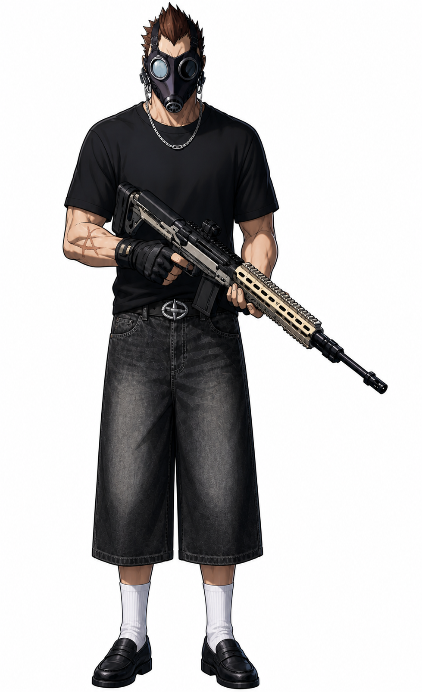
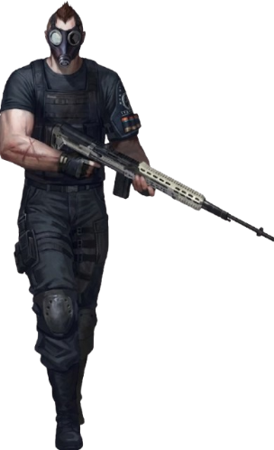
遊戲背景：來自電腦線上射擊遊戲「某F」，都市廢墟戰場，隸屬於某個武裝組織的步兵小怪。統一配備防毒面罩、護目鏡、狙擊步槍，無限巡邏，無限被擊殺重生。手臂上的刺青是那個組織的象徵標記——遊戲設定本來就有，代表他「屬於」那個組織。
關鍵設定——手臂刺青：出來之後，那個標記還在。但組織不在了，遊戲不在了，只有那個印記還留在皮膚上。他不知道該怎麼看待它——是身份，是過去，還是一個已經失去意義的符號。這件事是他的核心衝突，後續會展開。
個性：沉默，高度警戒，不輕易開口。在遊戲裡是巡邏兵，習慣持續觀察周圍環境、計算威脅，這個本能完整帶進了現實。第一反應永遠是評估「這個人、這個地方，安不安全」。面罩和護目鏡出來後還戴著——不是因為需要，是因為沒有面罩，他不知道用什麼臉面對這個世界。
帶出來的東西：防毒面罩、護目鏡、狙擊步槍，還有手臂上那個刺青。
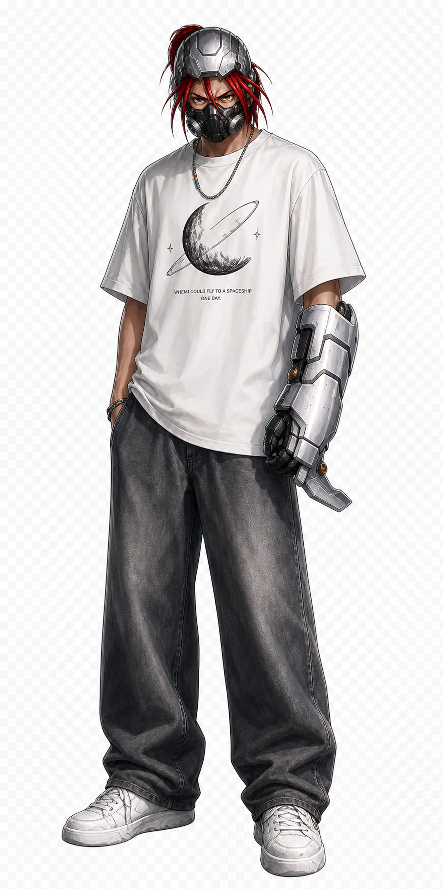
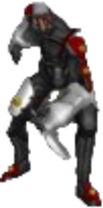
遊戲背景：來自俯視角動作RPG線上遊戲「某B」，和화성、철민同遊戲——但駐守在財團大樓內部的高級區域，是精英守衛型小怪，等級遠高於화성，更遠高於철민。遊戲裡會同時出現多個Sargent，他是其中之一，現在是唯一出來的那個。機甲左手臂是遊戲裡的技能裝備，跟著出來了。
和화성、철민的關係： 三個人都來自某B，但等級的差距讓他們在遊戲裡完全沒有交集——
세준在財團大樓最高層守衛，화성在中高層區域巡邏，철민在最底層的低等區域，是三個完全平行的存在。
세준「聽說過」Fire Ninja類型的小怪——是那種上層偶爾會接收到的情報，某個區域有高機動性的精英單位。但철민那個等級，對세준來說幾乎不存在於認知範圍裡——不是輕視，就是等級差太遠，根本不在同一個資訊層。
見到화성的第一反應——認出遊戲標記，沉默，然後重新評估眼前這個人。
見到철민的第一反應——認出某B的底層標記，愣了一下，因為他沒想到那個等級的小怪也出來了。
個性：比준혁話稍多，但也不是健談的人。在財團大樓守衛，見過更複雜的戰術——玩家組隊攻略、被反覆針對挑戰。對「被人研究、被人評估」有很深的感觸，出來之後對陌生人保持一種複雜的距離感：不是敵意，是那種「我知道你在看我哪裡」的警覺。機甲左手臂是他最顯眼的特徵，也是他唯一確定「這是我的東西」的存在。
帶出來的東西：機甲頭盔、呼吸面罩、機甲左手臂。
三個人，同一個遊戲，三個從未交集的平行世界。現在第一次，站在同一個現實裡。
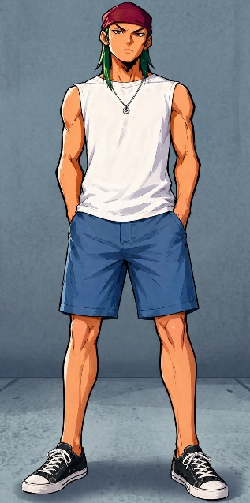
第一個發現準혁和세준的人。帶他們去泳池、吃烤肉、跑步——在他們還不知道怎麼在這個世界裡存在時，태양就已經在旁邊了。
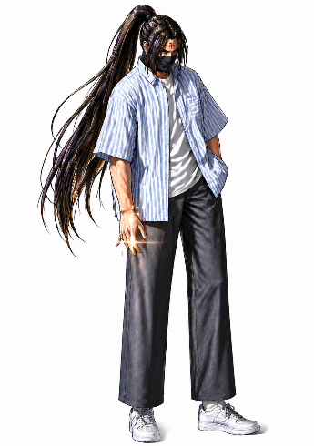
和세준同一個遊戲「某B」出身，等級不同。話不多，但在場。第一個讓세준感到「被認出來」的人。
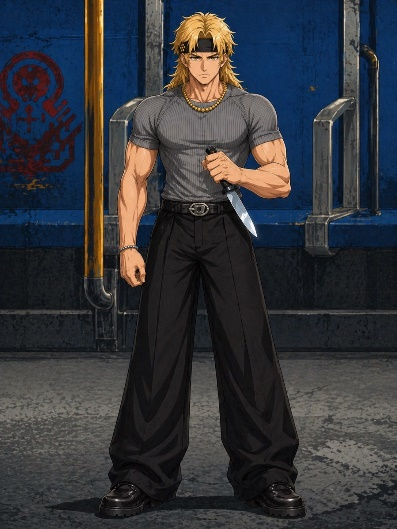
沉默、直接，有事就走，沒事就在。準혁和세준最快學會他的規則。
城市邊緣，廢棄工廠。
不知道是幾點，光從破碎的天窗打進來，切成一條一條的，落在滿地的碎石和灰塵上。
這裡沒有人。
或者說，本來沒有。
준혁先到的。
他不知道為什麼走進來——就是腳走著走著，走到這裡，停下來了。
廢棄工廠的氣味，灰塵、鐵鏽、潮濕——和遊戲裡某F的某個地圖很像。不是一樣，但足夠像，讓他的身體自動切換成巡邏模式。
他把狙擊步槍從背上取下來，握著，往工廠裡掃視。
沒有威脅。
沒有玩家，沒有任務，沒有重生點。
只有這個廢棄的空間，和他自己。
他在一根廢棄的鋼柱旁邊蹲下來，把槍橫放在膝蓋上，往四周看。
防毒面罩和護目鏡還戴著——從遊戲出來那一刻起，就沒有摘過。
不是因為需要，是因為沒有面罩，他不知道要用什麼臉待在這裡。
세준是後來進來的。
他沒有刻意找這個地方，也是走著走著走進來的——廢棄建築的骨架讓他想到財團大樓被攻略完之後的樣子，空的，靜的，沒有玩家，沒有任何東西。
他走進工廠，機甲左手垂著，往裡面看。
然後他看到了鋼柱旁邊那個人。
防毒面罩，護目鏡，黑T，槍。
他不認識，但他認識那種姿勢——那是一個隨時準備射擊的人的姿勢。
세준的身體，在判斷完成之前，已經先動了。
준혁聽到腳步聲的瞬間，槍已經舉起來了。
不是思考，是反射——在某F裡，聽到腳步聲就代表玩家來了，玩家來了就代表要開火。
他轉身，槍口對準聲音的方向——
세준已經在衝過來了。
機甲左手握成拳，往준혁的臉打過去——
火花，衝擊，碎石從地板濺起來。
準혁蹲低，用槍身格擋，金屬撞金屬的聲音在空曠的工廠裡迴盪——
兩個人都沒有說話。
沒有「你是誰」，沒有「為什麼打我」，沒有任何詞——
就是打。
遊戲裡不需要對話，遇到就是打，打完就結束，結束就重生，重生再打。
這個邏輯，兩個人都帶出來了。
세준的機甲左手再次揮出去，準혁往側邊滾，站起來，把槍反過來當近戰武器用——槍托往세준的側面撞過去。
세준側身躲了大半，但還是被蹭到，往後退了兩步。
火花在兩個人之間滅掉。
準혁舉著槍，看著對面那個人。
紅色長髮，機甲頭盔，呼吸面罩，機甲左手——
不是某F的敵人。
不是任何遊戲裡見過的類型。
他的手指停在扳機旁邊，沒有扣下去。
세준也停了。
機甲左手還舉著，但沒有再揮出去。
他看著준혁——防毒面罩，護目鏡，手臂上的標記——
不是某B的敵人。也不是他見過的任何類型。
兩個人，在廢棄工廠裡，對峙。
灰塵還在空氣裡飄。
碎石散在地板上。
都沒有說話。
최후에，세준先開口——
聲音從呼吸面罩後面出來，有點悶，但清楚：
「……你不是玩家。」
不是問句，是陳述。
준혁，「……你也不是。」
又是沉默。
但這次的沉默，和剛才不一樣——
剛才是戰鬥前的沉默。
現在是，兩個人都在處理同一件事的沉默。
不是玩家。
那是什麼？
세준慢慢把機甲左手放下來。
준혁慢慢把槍往下調了一個角度，沒有完全放下，但不再指著對方。
세준往旁邊的牆走，靠著，往下坐。
他沒有邀請준혁，就是自己坐了。
준혁站在原地，看著他，最後也走向另一面牆，靠著，蹲下來。
兩個人，在廢棄工廠的兩面牆邊，各自坐著。
距離是安全距離，但在同一個空間裡。
窗外的光在地板上移動，很慢。
세준，「你從哪個遊戲出來的？」
준혁，「某F。」
세준，「……不認識。」
준혁，「你呢？」
세준，「某B。」
준혁，「……」他沉默了一下，「我也不認識。」
又是安靜。
但這次，是一種不那麼緊繃的安靜。
세준看著工廠的天窗，光從那裡進來，他的機甲左手放在膝蓋上，很重。
준혁看著地板，防毒面罩和護目鏡還戴著，手臂上的刺青在光裡若隱若現。
兩個從不同遊戲出來的人，在一個廢棄的空間裡，第一次坐在同一個地方。
不是因為信任，不是因為認識。
是因為——
在這個城市裡，他們都不知道下一步要去哪。
而至少，對面那個人，和自己是一樣的。
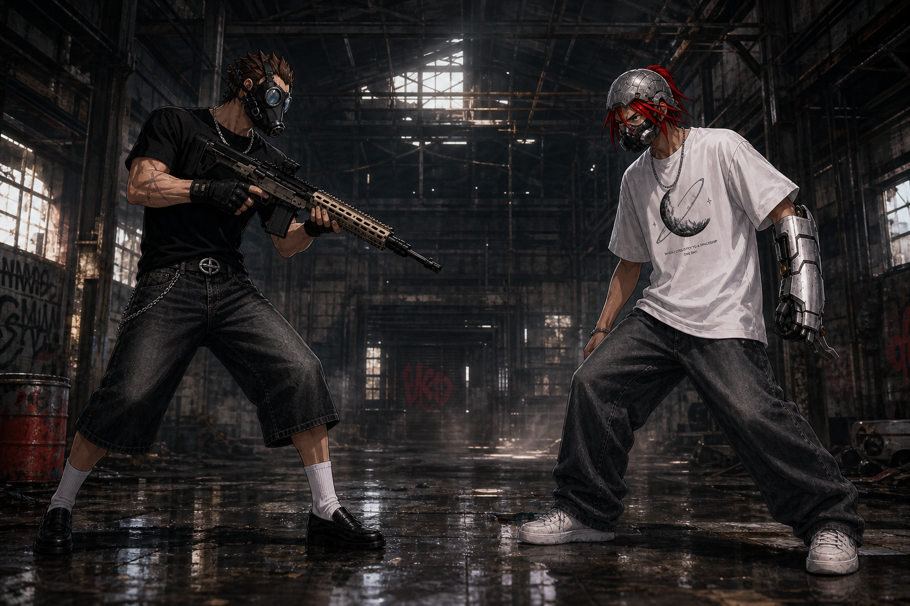
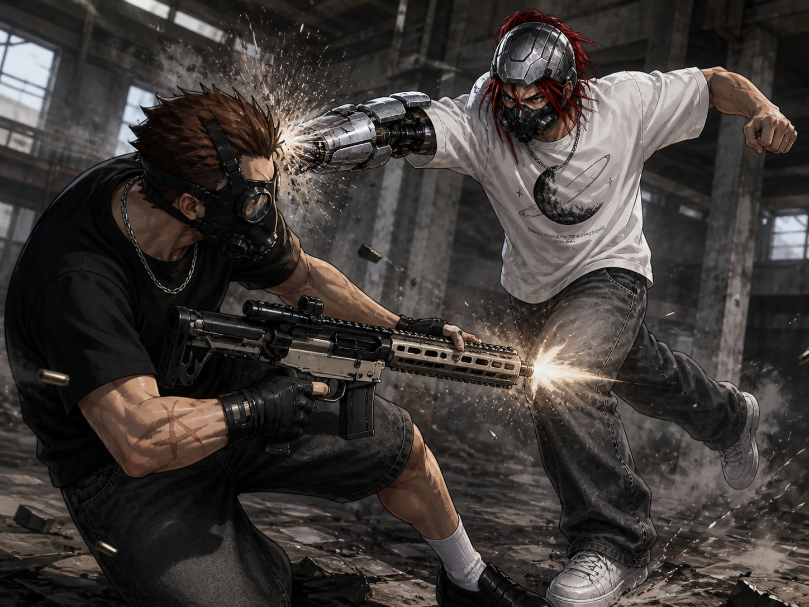
城市邊緣，廢棄工廠。
兩個從遊戲出來的人，第一次見面，先打了一架。
然後，坐在同一個廢墟裡。
這，是開始。
廢棄工廠，同一天，稍晚。
태양和화성不是特地來找人的。
태양說要去附近的便利商店，화성說一起，兩個人走著走著，태양看到了工廠的缺口——
「那裡有人。」
화성往那個方向看，停了一步。
不是普通的「有人」——是那種，讓他身體裡某個東西拉響的感覺。
「進去看看。」화성說。
태양，「你確定？」
화성已經走進去了。
進去的瞬間，兩個人都看清楚了。
準혁蹲著，槍舉著，對著세준。
세준彎著腰，機甲左手握著，對著준혁。
兩個人之間，是剛才那場打鬥留下的痕跡——碎石、火花燒過的地板、空氣裡還沒散掉的灰塵。
태양愣了半秒。
然後直接走進去，站在兩個人中間，雙手往兩側張開——
「停。」
준혁的槍口往태양的方向偏了一下，又停住了。
不是因為태양很強——是因為태양走進來的方式，沒有攻擊性。
在某F裡，玩家衝進來的方式是不一樣的。這個人衝進來，是擋在中間的。
준혁的手指離開扳機，但槍還沒放下。
세준看著태양，然後看向태양旁邊的화성。
화성站在那裡，黑口罩，長黑髮，藍條紋外衫——
세준盯著화성看了三秒。
화성也在看他。
兩個人都沒說話，但세준的機甲左手，慢慢垂下來了。
태양看了看左邊的준혁，又看了看右邊的세준，「你們剛才在打架？」
沒有人回答。
태양，「地板上的火花痕跡，還有你臉上——」他指了指준혁護目鏡旁邊的地方，「那裡有點焦。」
준혁沒有說話。
태양，「好，不說沒關係。」他把手放下來，但站在原地沒有動，「你們兩個，認識嗎？」
세준，「不認識。」
태양，「那為什麼打架？」
세준，「……反射。」
태양看向준혁，「你呢？」
준혁，「一樣。」
태양，「反射，」他重複了一遍，若有所思地點頭，「嗯，我懂。」
화성在旁邊，「태양。」
태양，「什麼？」
화성，「你懂什麼？」
태양，「就是，看到不認識的人，第一反應不是說話，是——」他做了個揮拳的手勢，「這樣。」
화성，「你出來之後從來不這樣。」
태양，「因為我天生親切。」
화성，「……」
준혁看著這兩個人的對話，槍慢慢往下放了。
不是因為信任，是因為這兩個人站在那裡說話的樣子——不像玩家，也不像任何他在某F見過的敵人。
세준也在看。
他看著화성，화성也看回來，兩個人之間有一種說不清楚的東西——
不是認識，但也不完全是陌生。
화성先開口，對著세준，「某B？」
세준，「……嗯。」
화성，「財團大樓。」
不是問句，是陳述。
세준愣了一下，「你怎麼知道？」
화성，「你的標記。」他往세준的方向看了一眼，「我認識，但你的等級不在我的區域。」
세준，「你是——」他想了一下，「中層的Fire Ninja類型。」
화성，「嗯。」
두 사람은 잠시 침묵했다。
같은 게임，다른 세계。
同一個遊戲，不同的世界，第一次站在同一個廢墟裡。
태양看著화성和세준的交流，然後轉向준혁，「你呢？哪個遊戲出來的？」
준혁，「某F。」
태양，「沒聽過。」他蹲下來，和준혁差不多高度，研究了一下他的防毒面罩和護目鏡，「這個，遊戲裡就有的？」
준혁往後退了半步，「……嗯。」
태양，「我的頭巾也是，」他指了指自己頭上的深紅頭巾，「遊戲裡就戴著，出來還是戴著。感覺少了什麼。」
준혁沒有說話，但沒有再往後退。
태양，「你叫什麼？出來之後有名字嗎？」
준혁，「……準혁。」
태양，「我叫태양，」他站起來，往세준方向看，「你呢？」
세준，「세준。」
태양，「好，」他環顧了一下這個廢棄工廠，「你們兩個，在這裡多久了？」
준혁，「不知道。」
세준，「剛到。」
태양，「有地方住嗎？」
沒有人回答——但那個沉默，已經是回答了。
태양看向화성。
화성看著他，沒有說話，但眼神是「我知道你在想什麼」的樣子。
태양，「我們有一個地方，」他說，「不大，但夠住。」
준혁，「……」
세준，「為什麼？」
태양，「什麼為什麼？」
세준，「你為什麼要帶我們去？」
태양想了一下，「因為我們也是從裡面出來的，」他說，「第一天，我們在一個倉庫裡，什麼都不知道，什麼都沒有。」
세준，「然後呢？」
태양，「然後有人沒有走。」
工廠裡安靜了一會。
光還是從天窗進來，切成一條一條的，落在四個人身上。
준혁看著自己手臂上的刺青，那個遊戲裡的組織標記，在光裡很清楚。
세준看著機甲左手，那個從財團大樓帶出來的東西，很重。
태양站在中間，沒有催，就是等著。
화성靠著一根鋼柱，看著세준，沒有說話——但他沒有走。
최후에，세준開口，「你們的地方，在哪裡？」
태양立刻，「新宿，走路二十分鐘。」
세준，「……」他沉默了一下，「行。」
태양看向준혁，「你呢？」
준혁低頭看了一眼自己的槍，然後看向태양，「……去看看。」
태양，「好！」他轉身往工廠出口走，「走了，我還要去便利商店，順路——」
화성，「你本來就是去便利商店。」
태양，「對，現在多了兩個人，要多買一點——세준，你喜歡吃什麼？」
세준，「……沒有特別的。」
태양，「준혁呢？」
준혁，「……隨便。」
태양，「好，那我決定，今天買洋芋片——」
四個人走出廢棄工廠。
陽光打下來，比工廠裡亮得多。
준혁抬起頭，護目鏡上反著光。
세준走在旁邊，機甲左手垂著，第一次在這個城市裡，跟著不只一個人走。
태양在前面，已經在想待會要買什麼口味。
화성走在最後，回頭看了一眼那個廢棄工廠——
兩個人打架的地方，現在是空的。
碎石還在，火花的痕跡還在。
但那兩個人，走出去了。
화성轉回來，繼續走。
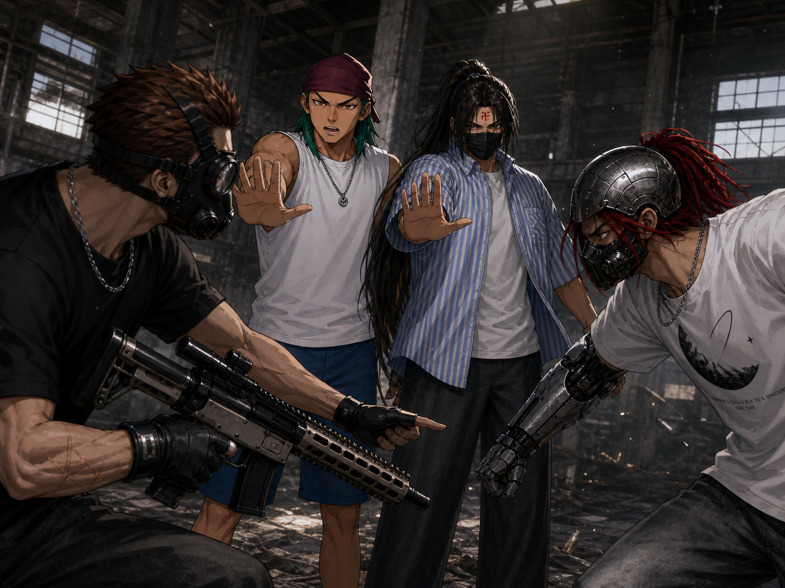
廢棄工廠，태양和화성介入。
手，放下來了。
四個人，往同一個方向走。
新宿DORMITORY，POOL AREA。
태양說帶他們來這裡放鬆一下。
준혁和세준都沒有說好，但也沒有說不好，就跟著來了。
泳池室內，比外面的泳池小，但有躺椅，有窗，窗外是棕櫚樹和天空，光從玻璃打進來，很白，很亮。
桌上已經放了幾瓶水——태양先去買的。
세준坐在躺椅上，機甲左手放在椅把上，往泳池的方向看。
藍色的水，很平靜，沒有人在裡面。
他沒有說話，但眼神停在水面上很久。
在遊戲裡，財團大樓裡沒有水——只有大理石地板、鋼鐵柱子、無限循環的戰鬥。
這個藍色，他沒見過。
준혁坐在세준旁邊的躺椅上，低著頭，手肘撐在膝蓋上，看著自己手臂上的刺青。
那個標記，在室內的白光裡很清楚。
안킨자상——一個X形，但不完整，像是被什麼打斷的線條。
遊戲裡，每個Trooper手臂上都有這個——組織的象徵，代表「屬於」。
但那個組織不在了，遊戲不在了。
只有這個符號還在皮膚上，沒有辦法摘下來。
태양站在旁邊，手裡拿著水瓶，看著這兩個人。
他想說什麼，但沒有說——感覺說什麼都不對，就是站著。
화성站在태양旁邊，毛巾搭在脖子上，手裡也拿著水瓶，看著세준。
세준察覺到了，轉頭，「看什麼？」
화성，「在看你看水的樣子。」
세준，「……」
화성，「你沒見過泳池？」
세준，「財團大樓裡沒有。」
화성，「我知道。」他停了一下，「我在某B的地圖裡，有一個區域靠近港口，有水。但是戰鬥區，不是用來看的。」
세준，「所以你也是第一次這樣看水？」
화성，「嗯。」
두 사람은 잠시 같은 방향을 바라봤다——兩個人往同一個方向看了一會。
태양把水瓶放到桌上，蹲到준혁旁邊，和他差不多高度，「준혁，你在看什麼？」
준혁沒有立刻回答，「在看這個。」他把手臂往태양方向轉了一下，讓他看那個刺青。
태양研究了一下，「這個符號是——」
준혁，「遊戲裡組織的標記。」
태양，「你們遊戲裡有組織？」
준혁，「所有Trooper手臂上都有。是設定。」
태양，「那現在這個對你來說是什麼？」
준혁沉默了很長一段時間。
최후에，「不知道。」
태양，「嗯，」他點頭，「不知道也沒關係。」
준혁，「……」
태양，「我們剛出來的時候，也什麼都不知道，不知道要去哪，不知道這個世界怎麼運作，不知道我們算什麼。」
준혁，「然後呢？」
태양，「然後就這樣走著走著，走到現在了。」
준혁看著태양，護目鏡後面的眼神，移動了一下，「就這樣？」
태양，「就這樣。」他站起來，把水瓶推到준혁面前，「先喝水，其他的慢慢來。」
준혁看著那瓶水，很久沒有伸手。
然後他把手伸出去，拿起來，擰開，喝了一口。
冷的，有點甜——不是純水，是某種淡口味飲料。
他看了看瓶身，태양，「這個不是水。」
태양，「對，我買錯了，但喝起來還行吧？」
준혁，「……還行。」
태양，「那就好。」
세준把桌上的水瓶拿起來，打開，喝了一口。
這個是真的水，冰的，很清。
他把水瓶放回去，繼續看著泳池。
화성在旁邊坐下來，也看著水，沒有說話。
沉默，但是並排的沉默。
태양看著這四個人——준혁低頭喝著那瓶不是水的飲料，세준和화성並排看著泳池，自己站在中間——
他想起第九天，第一次來泳池，철민假裝在站崗，서준坐在池邊，우진只泡腳。
那時候也是這樣——沒有人說話，但都在。
태양，「세준，你要不要下去試試看？」
세준，「泳池？」
태양，「嗯，水是什麼感覺，試了才知道。」
세준看著那片藍色的水，沉默了幾秒，「我不會游泳。」
태양，「我教你，我也不太會，但我會浮。」
세준，「……」他看著태양，「你說你也不太會，但你要教我？」
태양，「浮就夠了，不一定要游。」
화성，「他說得對，」화성開口，「第一次下去，浮著就夠了。」
세준又看了一眼那片水。
최후에，站起來，「行。」
태양，「！走——준혁你呢？」
준혁，「……我看著就好。」
태양，「確定？」
준혁，「確定。」
태양，「好，那你幫我看東西——」他把自己的水瓶放到준혁旁邊，跑向泳池，「走了세준！」
세준走到泳池邊，往下看，水是靜的，藍的，能看到底。
태양已經走下台階，站在齊腰深的地方，「來啊，水不冷。」
세준往下走，一步，兩步，水沒過腳踝，小腿，膝蓋，腰——
機甲左手進水的瞬間，他停了一下。
重。
比在空氣裡更重，水的阻力推著那隻手，他需要用力才能讓它保持在水裡。
태양注意到了，「機甲手在水裡怎樣？」
세준，「重。」
태양，「那你用右手撐水，左手放著就好。」
세준試了一下，右手撐水，左手讓水托著——
沉了一點，但可以。
태양，「你看，浮起來了。」
세준，「我沒有浮。」
태양，「你沒有沉就是浮。」
세준，「……這個邏輯不太對。」
태양，「在泳池裡這個邏輯就是對的。」
池邊，준혁坐在躺椅上，看著水裡的태양和세준。
태양在教세준怎麼讓自己在水裡平衡，세준的表情看不清楚——面罩和頭盔都還戴著，但身體的緊繃感，比在廢棄工廠裡少了一點。
화성在준혁旁邊坐著，毛巾還搭在脖子上，也在看他們。
준혁，「他是這樣的人嗎？」
화성，「태양？」
준혁，「嗯，就是——隨便就教陌生人游泳。」
화성，「他不覺得你們是陌生人。」
준혁，「我們剛認識。」
화성，「嗯，但他不在意這個。」他停了一下，「我們七個人，第一天在倉庫裡，也是剛認識，也不知道對方是誰，태양第一個開口說話。」
준혁，「就這樣信任對方？」
화성，「不是信任，是——」화성想了一下，「他覺得，遇到了就是遇到了，沒有必要分那麼清楚。」
준혁看著水裡的태양，沉默了一會。
手臂上的刺青，在光裡很清楚。
「我們的遊戲裡，」준혁說，「遇到不同組織的，就是敵人。沒有例外。」
화성，「這裡不是遊戲。」
준혁，「我知道。但那個邏輯，還在。」
화성，「嗯，」화성說，「我也是。出來很久了，有些東西還是在。」
준혁，「你怎麼處理？」
화성想了一下，「讓它在，但不讓它決定我做什麼。」
준혁沒有回答，但他把低著的頭，慢慢抬起來，看向泳池的方向。
水裡，태양在說什麼，세준在聽，偶爾回一句，機甲左手在水裡托著，不再那麼緊繃。
窗外，陽光很烈，棕櫚樹的影子打在水面上，搖著。
POOL RULES的牌子掛在牆上，沒有人在看。
桌上，幾瓶水，一副태양的墨鏡，준혁那瓶不是水的飲料，還剩一半。
준혁最後，把那瓶飲料重新拿起來，喝了一口。
還是有點甜，但已經不那麼奇怪了。
他看著泳池，太양把세준的右手往水裡壓，教他感受浮力，세준往下沉了一點，又浮起來，태양說了什麼，세준低頭看了看水面。
준혁不知道那是什麼感覺。
但他想，或許哪天，可以試試看。
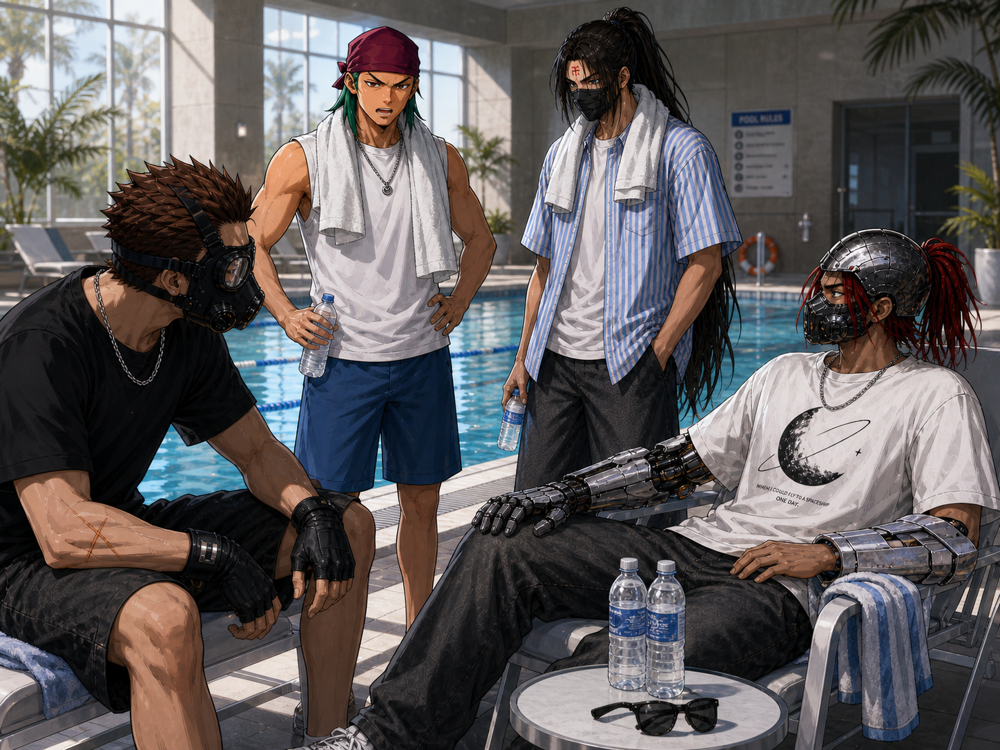
新宿DORMITORY，POOL AREA。
兩個新來的人，第一次看到泳池。
水是什麼感覺——
試了，才知道。
準혁也下來了。
沒有人催他，沒有人說「你也來」——就是태양在水裡看了他一眼，沒有說話，然後繼續和세준說話。
準혁在躺椅上坐了一會，看著水裡三個人，最後站起來，走到台階邊，一步一步走下去。
水沒過腳踝，小腿，膝蓋——
他停在齊腰深的地方。
防毒面罩和護目鏡還戴著，濕了，但還在。
手臂上的刺青在水裡若隱若現，光從水面折射上來，那個X形的標記，在水裡看起來和在空氣裡不太一樣——
模糊了一點，但沒有消失。
태양看到준혁下來了，笑了，「來了。」
준혁，「嗯。」
태양，「水怎樣？」
준혁，「……冷。」
태양，「對，室內泳池比外面那個冷一點，習慣了就好。」
準혁沒有說話，就這樣站著，讓水托著他的腰，感受那個浮力。
在某F裡，他在水泥地板上巡邏，在廢墟的碎石上移動，在槍林彈雨裡匍匐——
從來沒有被什麼東西托著的感覺。
他把手放進水裡，張開，水從指縫流過去。
四個人，在同一個泳池裡。
太양靠著池壁，手臂撐著，看著另外三個人。
화성站在稍遠的地方，水沒到胸口，黑口罩濕了，頭髮散在水裡，很安靜地在那裡。
세준在화성旁邊，機甲左手在水裡沉著，右手撐著水面，慢慢適應那個重量。
준혁在태양另一側，站在原地，還沒有動，但沒有要出去的意思。
태양，「세준，機甲手在水裡怎樣了？」
세준，「還是重，但比剛才好一點。」
태양，「你試試看把它放在水面上，讓水托著——」
세준，「你上次說右手撐水，左手放著。」
태양，「對，但現在你習慣了，可以讓兩隻手一起浮。」
세준試了一下，把機甲左手慢慢放到水面——沉了一點，但沒有完全沉下去，水的浮力頂著。
태양，「看，水在幫你。」
세준低頭看著那隻手，「……嗯。」
화성在旁邊，看著세준的機甲手在水面上托著，沒有說話，但眼神停在那裡。
준혁，「那個手……一直都是機甲的嗎？」
問完，他意識到這個問題可能不太對，「……不想說可以不說。」
세준沒有立刻回答。
水面的光在四個人臉上動著。
최후에，세준，「遊戲設定就這樣，我也不知道裡面是什麼。」
준혁，「嗯。」
세준，「你的刺青也是設定本來就有的？」
준혁，「對。」
세준，「那我們都是帶著遊戲的東西出來的。」
준혁，「嗯。」
화성，「我們都是，」화성開口，聲音平，「口罩、武士刀、鐵管、雙刀——我們七個，沒有一個人是空手出來的。」
준혁，「你們七個都帶著東西？」
화성，「嗯。那些東西，是各自確認自己是誰的方式。」
준혁低頭看了看自己手臂上的刺青，在水裡，那個X形的標記模糊了，但沒有消失，「就算那個東西的意義已經變了？」
화성，「意義可以變，但它還是你的。」
水面很靜，偶爾有人移動帶起一點波紋，然後又平掉。
태양靠著池壁，看著이 네 명——這四個人。
准혁和세준，和SEVEN WAVES剛出來的時候不一樣——那時候七個人在倉庫裡，是戒備的安靜，是各自守著自己的安靜。
這兩個人的安靜，是另一種——不是戒備，是還不知道怎麼開口，但已經不排斥開口的那種。
태양，「준혁，你在某F裡，是一個人巡邏，還是有同伴？」
준혁，「程式設定是成群出現，但每個個體是獨立的，不會互相溝通。」
태양，「所以你周圍都是同類，但沒有真正的同伴？」
준혁，「嗯。」
태양，「세준呢？」
세준，「財團大樓的Sargent也是，同時出現多個，但不會協作，各自守各自的位置。」
태양，「那你們兩個，出來之後第一次有……」他想了一下，「就是真的有另一個人在旁邊的感覺，是什麼時候？」
준혁沉默了一下，「在廢棄工廠，打完之後，我們各自靠著牆坐著。」
태양，「打架之後？」
준혁，「嗯。那時候，他在，我也在，不需要再打了。」他停了一下，「就是這樣。」
태양看向세준，세준，「嗯，差不多。」
태양，「……你們兩個，真的很特別。」
준혁，「哪裡特別？」
태양，「一般人第一次認識，不會先打一架。」
준혁，「我們不是一般人。」
태양，「對，」태양笑了，「我們都不是。」
화성，「태양。」
태양，「嗯？」
화성，「你剛才說的那句話——'我們都不是一般人'。」
태양，「對啊。」
화성，「你第一天不是這樣想的。」
태양，「第一天我在想怎麼找食物吃。」
화성，「嗯，所以那時候你只想著怎麼變成一般人。」
태양，「現在不用了。」
화성，「嗯。」他停了一下，「這件事，他們也會想通的。」
태양，「我知道，所以才帶他們來泳池。」
화성，「用泳池讓人想通？」
태양，「水裡沒辦法跑，只能待著，待著就會想。」
화성，「……這個邏輯很태양。」
태양，「謝謝。」
準혁在水裡，聽著태양和화성的對話，沒有插嘴。
他把手放進水裡，讓水從指縫流過去，再放開——
在某F裡，手是用來握槍的，是用來扣扳機的，是用來在廢墟裡撐地的。
現在，手放在水裡，什麼都不需要做。
他不確定這個感覺叫什麼。
但他沒有把手收回來。
세준看著自己的機甲左手，在水面上托著，水的光在金屬上折射，比平常更亮。
他想到財團大樓裡，這隻手是用來攻擊的，是用來清場的，是讓玩家看到就知道要小心的東西。
現在，它在水面上，被水托著。
沉，但在。
세준，「화성。」
화성，「嗯？」
세준，「你說意義可以變，但它還是你的——」他停了一下，「你的口罩，意義變了嗎？」
화성沉默了幾秒，「變了。」
「怎麼變的？」
「遊戲裡，口罩是設定的一部分，代表Fire Ninja這個類型。」화성說，「出來之後，我選擇繼續戴，是因為我不知道我的臉應該是什麼樣子。」
「現在呢？」
「現在，」화성停了一下，「是因為這是我選的樣子。不是遊戲給的，是我自己的。」
세준聽著，沒有說話。
機甲左手在水裡，水的光在金屬上動著。
四個人，在泳池裡，水聲很輕，光很白。
POOL RULES的牌子在牆上——NO DIVING、NO RUNNING、NO PUSHING——
沒有人在看，但沒有人違反。
태양，「今天不錯。」
준혁，「什麼不錯？」
태양，「就是，今天這樣。」他往四周看了一眼，「四個人在泳池裡說話。」
준혁，「你覺得這個'不錯'？」
태양，「嗯，因為昨天你們還在廢棄工廠打架。」
준혁，「……」
세준，「進步很快。」
태양，「對，所以不錯。」
화성，「태양。」
태양，「嗯？」
화성，「你每次都說不錯。」
태양，「因為每次都不錯。」
화성，「……嗯。」
水面，陽光，棕櫚樹的影子在玻璃外面搖著。
四個人，在同一個水裡，沒有邊界，沒有各自的牆——
就是在同一個水裡。
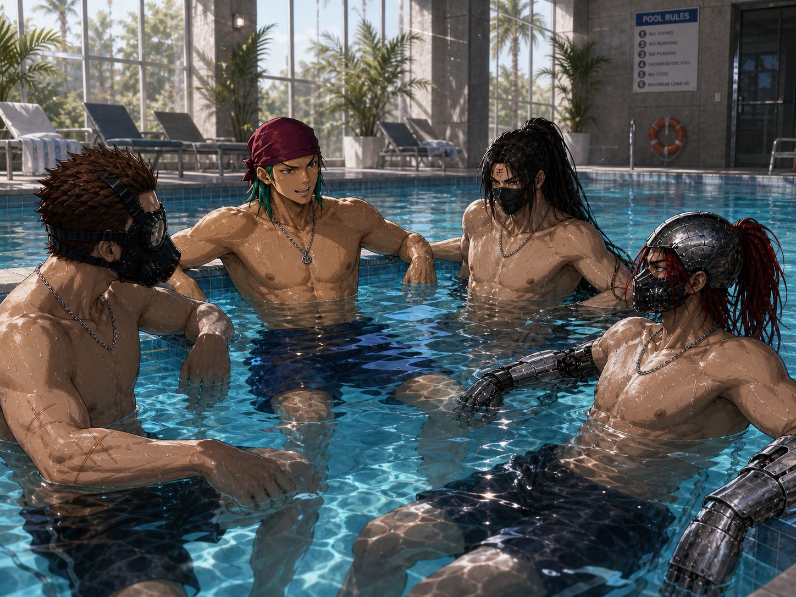
新宿DORMITORY，POOL AREA，室內。
四個人，都下水了。
水裡，沒有辦法跑，只能待著。
待著，就會想。
想著想著，有些東西，慢慢鬆開了。
宿舍A，夜晚。
泳池回來之後，태양說，「今晚先住這裡，明天再說。」
준혁，「這裡是你們的地方。」
태양，「住一晚沒問題，我們人很多，地方夠。」
세준，「你們幾個人？」
태양，「七個，但現在只有我們三個在。」
세준，「其他人呢？」
태양，「去巡演了，서준、인준、우진——他們三個帶了另一組人先出發，我們這組晚一點過去。」
세준，「巡演是什麼？」
태양，「就是到不同城市唱歌跳舞，很多人來看——」他停了一下，「以後你們也會知道。」
준혁，「我們不唱歌。」
태양，「你以為我們一開始會嗎？」
준혁，「……」
태양，「進來吧，先坐。」
宿舍A的客廳，燈是暖黃色的。
牆上掛著SEVEN WAVES的照片——那張崔攝影師拍的封面，七個人，白色薄衫，暖黃燈光。
書架上有一個獎盃，金色的星，旁邊是幾本書。
白板上是練習計畫——
Practice Plan 1. VOCAL 2. DANCE 3. RAP 4. STAGE
旁邊有人塗掉了什麼，只看得到「FIGHT」兩個字——那是철민某天不知道在想什麼，在白板上寫了一堆，最後自己擦掉大半，留下這兩個字，說「提醒用的」。
沒有人問提醒什麼。
준혁站在客廳中間，防毒面罩和護目鏡還戴著，往四周掃了一圈。
掃到牆上的照片，停了一下。
七個人，他認出了태양和화성——然後看著其他五個，不認識。
「這些人，」준혁說，「就是你們七個？」
태양，「對，那張是我們第一本寫真集的封面。」
준혁，「寫真集是什麼？」
화성，「照片書。」
준혁，「……為什麼要出照片書？」
태양，「因為大家想看我們。」
준혁，「為什麼想看你們？」
태양，「因為我們唱歌跳舞。」
준혁，「……」他看著那七個人的照片，沉默了一會，「你們從遊戲出來，然後唱歌跳舞，然後出照片書。」
태양，「嗯，大概這樣。」
준혁，「跨度很大。」
태양，「我們也是後來才知道的。」
세준走到書架旁邊，看著那個獎盃。
금빛 별——金色的星形，底座上有字，他低頭讀了一下，「THE SHOW CHOICE，1ST WIN。」
他轉向화성，「這個是什麼？」
화성，「音樂節目的第一名。」
세준，「你們拿到過第一名？」
화성，「嗯。」
세준，「……」他看著那個獎盃，又看了看牆上的照片，「從遊戲小怪，到音樂節目第一名。」
화성，「嗯。」
세준，「你當時是什麼感覺？」
화성沉默了一下，「……覺得，真實。」
세준，「就這樣？」
화성，「對我來說，那個最重要。」
세준把視線從獎盃移回來，看著화성，沒有再問。
鐵민坐在沙發上，白背心，口罩戴著，看著준혁和세준在客廳裡四處看，沒有說話。
강혁坐在他旁邊，也沒說話，手放在膝蓋上。
태양在旁邊比手畫腳地跟세준解釋那個獎盃的事，세준偶爾回一句。
철민，「你覺得他們怎樣？」小聲，對著강혁說。
강혁，「還好。」
철민，「那個棕髮的，槍還拿著。」
강혁，「嗯，他不知道放哪。」
철민，「沒有地方放。」
강혁，「嗯。」
철민，「等等跟他說。」
강혁，「嗯。」
태양把세준拉到沙發旁邊，「來坐，介紹一下——」他指著철민，「這個是철민，」再指著강혁，「這個是강혁。」
세준，「嗯。」
태양對준혁，「你也來坐——」
준혁走過來，在桌子旁邊的椅子坐下，狙擊步槍橫放在膝蓋上。
철민看了一眼那把槍，「你要一直拿著嗎？」
준혁，「沒有地方放。」
철민，「放地板上。」
준혁，「地板上不安全。」
철민，「這裡沒有敵人。」
준혁，「……」他看著철민，看了一會，慢慢把槍放到地板靠著椅子邊，但手還是搭在槍身上。
철민看了一眼，沒有再說。
강혁，「你們兩個，出來多久了？」
세준，「不確定，應該不超過一週。」
강혁，「吃過東西嗎？」
세준，「有，街上有可以換食物的東西——」
강혁，「錢。」
세준，「嗯，那個。」
강혁看向태양，「冰箱裡有什麼？」
태양，「上次進貨的東西，應該還有——」
강혁站起來，往廚房走，幾分鐘後出來，手上拿著幾樣東西，放到桌上——泡麵、罐頭、一包餅乾。
「先吃這些，」강혁說，「明天再去買。」
세준看著桌上那些東西，「這樣就可以吃？」
태양，「泡麵要泡熱水，罐頭要開罐——我來！」
準혁看著태양跑去廚房的背影，「他一直這樣？」
철민，「嗯。」
준혁，「不累嗎？」
철민，「我也不知道，但他就是這樣。」
준혁，「……」他看著桌上的餅乾，伸手拿了一包，打開，吃了一口。
脆的，鹹的。
比那瓶「不是水」的飲料多了一點味道。
後來，泡麵好了，六個人圍著桌子，各自端著碗——
宿舍A的客廳，暖黃燈光，白板上的練習計畫，牆上七個人的照片，書架上的獎盃。
준혁把狙擊步槍靠在椅子旁邊，沒有再放在膝蓋上。
세준的機甲左手放在桌邊，碗放在右手邊，右手拿著筷子，研究了一下，夾起一根麵。
태양，「怎樣，好吃嗎？」
세준，「……熱的。」
태양，「那是廢話——」
철민，「他的意思是，他第一次吃到熱的東西。」
태양愣了一下，看向세준，「真的嗎？」
세준，「遊戲裡沒有食物，出來之後吃的都是街上的，沒有熱的。」
태양，「那今天是第一次——」他立刻站起來，「等等我去加一個蛋——」
철민，「你坐下，麵要涼了。」
태양，「但是第一次吃熱的要完整一點——」
강혁，「태양。」
태양，「嗯？」
강혁，「坐下，先吃完，下次再加蛋。」
태양，「……好。」他坐下來，對著세준，「下次我煮好一點的給你吃。」
세준，「不用特別——」
태양，「要。」
세준，「……嗯。」
준혁看著這幾個人，철민話不多但一直在看著所有人，강혁幾乎不說話但做了最重要的事，태양一直說話但每一句都是真的在想著對方——
他低頭，看著碗裡的麵。
熱的，有湯，有味道。
在某F裡，他巡邏，被擊殺，重生，再巡邏——那些日子裡沒有這個。
他把麵吃了一口。
鹹的，暖的，有一點辣。
他不確定這個叫好吃還是不好吃，但他把碗裡的麵，全部吃完了。
吃完，태양說，「今晚인준的房間空著，세준你睡那裡——준혁你睡서준的房間。」
세준，「他們不介意嗎？」
태양，「我等等傳訊息問，但他們不會介意的。」
準혁，「怎麼確定？」
태양，「因為我認識他們。」他說得很簡單，「他們會同意的。」
後來，각자의 방으로——各自去房間了。
客廳剩下철민一個人，坐在沙發上，看著桌上吃完的泡麵碗，還有준혁靠在椅子旁邊的狙擊步槍。
他拿起手機，傳了一條訊息給인준——
「帶了兩個人回來住，都是從裡面出來的。一個某F，一個某B，就是你們遊戲裡的。先借住，之後再說。」
然後傳了一條給서준——
「有人睡你房間，不要嚇到。」
放下手機，철민看著白板上的練習計畫，還有旁邊那個「FIGHT」——
那兩個字，是他第一週訓練的時候寫的，提醒自己，不管學什麼，用打架的心態去學。
他想了一下，站起來，拿起白板筆，在「FIGHT」旁邊加了兩個字——
「FIGHT / 帶人」
然後蓋上筆蓋，回房間。
宿舍A，夜晚，燈關了。
준혁躺在서준的床上，天花板是陌生的，氣味是陌生的，安靜是陌生的——
在某F裡，沒有睡覺，只有巡邏和重生。
他把手放在胸口，感覺到心跳。
真實的，在那裡的心跳。
他閉上眼睛。
防毒面罩還戴著。
但，已經可以閉上眼睛了。
세준在인준的房間，機甲左手放在床邊，頭盔和面罩放在旁邊——
今晚，在這個陌生的房間裡，第一次把頭盔放下來。
不是因為信任，是因為累了。
他看著天花板，想著財團大樓，想著某B的地圖，想著今天泳池裡的水——
那個被水托著的感覺，機甲手在水面上，沉但沒有沉下去。
他把眼睛閉上。
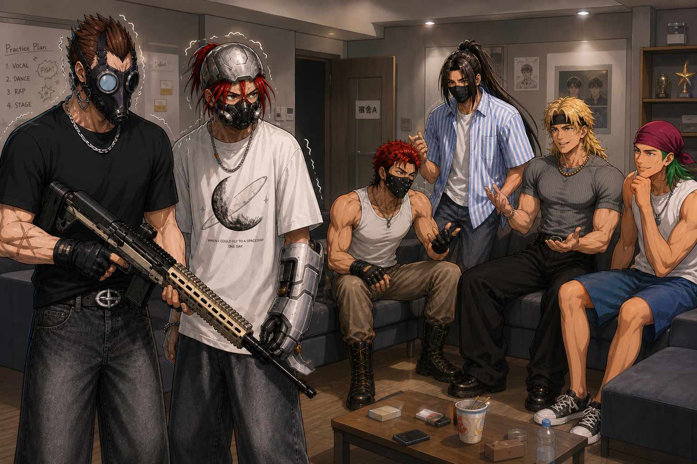
宿舍A，借住第一夜。
七個人的地方，現在多了兩個。
泡麵，暖黃燈光，陌生的天花板。
閉上眼睛，這裡沒有重生點。
但今晚，不需要重生。
在這裡，就夠了。
REBORN CHAOS
吃完泡麵，화성開口——
「吃完了，要不要去我們的練習生宿舍看看？」
준혁和세준互看了一眼。
태양立刻接上，「對！小分隊現在在世界巡演，所以有空房間。」
강혁，「你們如果不介意的話，可以住過來。」
準혁，「空房間……這樣真的可以嗎？」
세준，「……這真的沒問題？」
화성，「當然，我們這裡都是練習生，多兩個人沒什麼大不了的。」
태양，「就是這樣！」他站起來，「走吧，帶你們去看。」
走廊上，태양走在前面，강혁跟著，준혁和세준在後面。
준혁拿著槍，走在走廊裡，四周掃視——習慣，改不掉。
세준走在他旁邊，機甲左手垂著，看著走廊牆上貼的照片——全員七人的照片，一張一張。
태양，「This way，我帶你們看一下。」
房間門打開。
床，桌子，衣架，窗邊的燈，角落的行李箱——
牆上貼著一張海報，黑色背景，白色的字——
BE THE ONE
태양，「房間在這裡，你們自己選，喜歡哪間住哪間。有什麼需要就跟我們說。」
準혁站在房間門口，看著那個空間。
他回頭看了세준一眼。
세준在看牆上的海報——BE THE ONE。
然後준혁說了一句，聲音很低，像是自言自語——
「……你們比我想像的，友善很多。」
태양聽到了，轉過頭，笑了，「因為我們以前也是什麼都不知道就來了。」
준혁，「……」
태양，「所以知道那種感覺。」
세준走進房間，在床邊坐下，機甲左手放在膝蓋上，看著這個空間——
床是真的床，燈是暖的，外面有走廊，走廊外面有其他人。
他想起財團大樓——冰冷的大理石，鋼鐵的柱子，無限循環的戰鬥。
然後想起今天——廢棄工廠，泳池，泡麵，暖黃燈光。
這個房間，和那裡，差距很大。
但他在這裡。
準혁把狙擊步槍靠在床邊的牆上，在另一張床坐下。
他看著牆上的BE THE ONE。
在某F裡，每一個Trooper都一樣——同樣的裝備，同樣的巡邏路線，同樣的標記。
沒有「唯一」，只有複製。
BE THE ONE。
他看著那三個字，沉默了很久。
門口，태양和강혁站著。
태양小聲對강혁，「你覺得他們沒問題嗎？」
강혁，「會沒問題的。」
태양，「怎麼確定？」
강혁，「因為我們也沒問題了。」
태양，「……嗯，說得對。」
화성最後走過來，站在房間門口，看了一眼準혁和세준，「有什麼需要，隔壁就是我。」
세준，「嗯。」
준혁，「……謝謝。」
화성，「嗯。」他轉身要走，停了一下，回頭——
「睡前，可以把面罩拿下來。這裡沒有需要防備的東西。」
說完，走了。
房間裡，두 사람——兩個人。
窗外，城市的燈還亮著。
準혁看了一眼自己手臂上的刺青，再看了一眼牆上的BE THE ONE。
세준的機甲左手放在膝蓋上，看著燈。
沒有說話。
但都沒有想要出去。
準혁最後，把護目鏡推上去一點——
不是摘掉，只是推上去一點。
露出了眼睛。
他看了看房間，看了看세준，又看了看窗外。
然後，閉上眼睛。
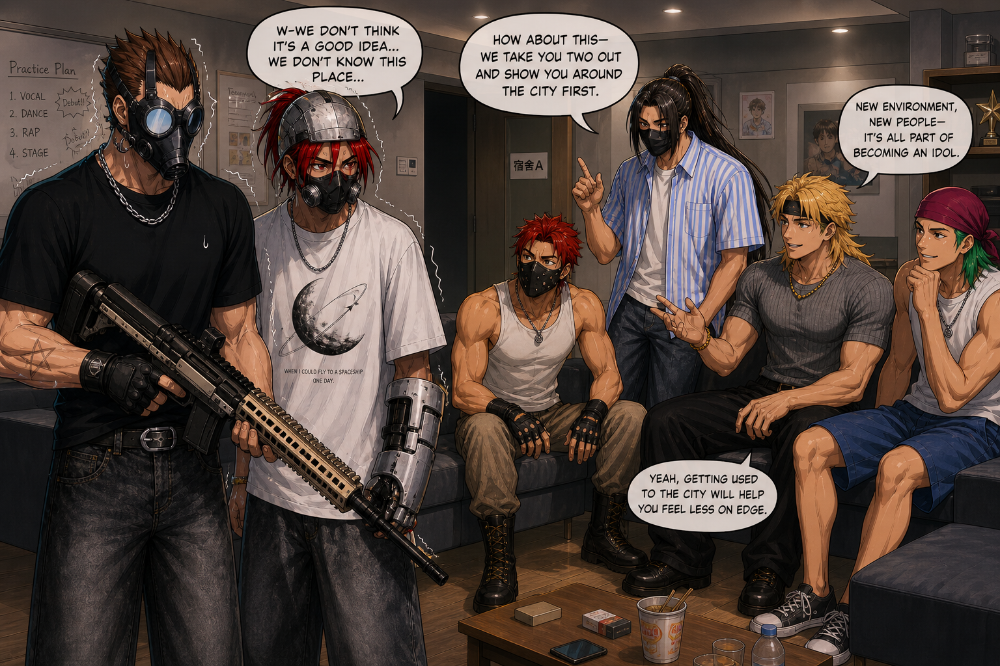
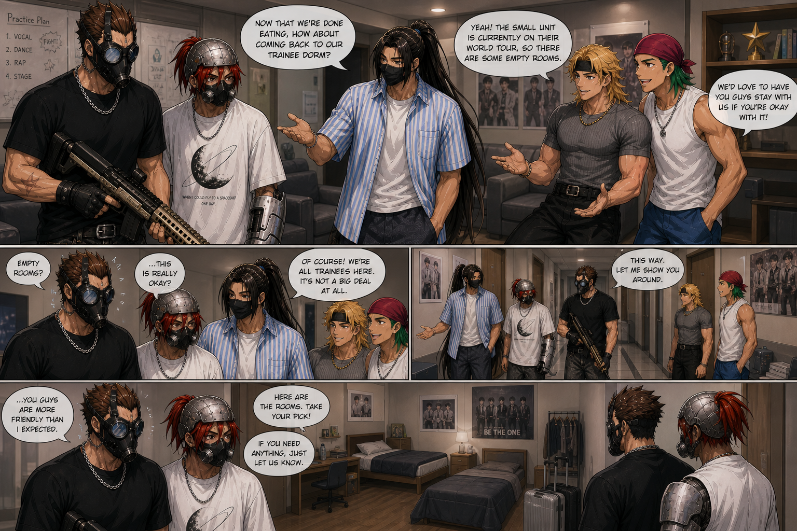
練習生宿舍，空房間。
BE THE ONE。
兩個從遊戲出來的人，第一次有了自己的房間。
今晚，不需要巡邏。
不需要守衛。
就睡著就好。
住進來的第三天。
태양說，「帶你們去吃好的。」
준혁，「昨天的泡麵不夠好嗎？」
태양，「泡麵是泡麵，烤肉是烤肉，不一樣的。」
세준，「烤肉是什麼？」
태양，「去了就知道。」
烤肉店，城市裡的某條街，窗外是夜景，霓虹燈打進來——노래방、치킨——紅色和黃色的光。
牆上的菜單—— 갈비 18,000 삼겹살 16,000 불고기 17,000 김치찌개 8,000 비빔밥 9,000 냉면 9,000 된장찌개 7,000 공기밥 1,000
준혁看著那個菜單，一個字都看不懂。
세준也在看，沉默。
태양，「我來點，你們等一下。」
烤架上，갈비——醃牛小排，油花在炭火上滋滋作響，香味往四個人方向飄過來。
旁邊擺著一圈小菜——김치、파무침、콩나물、깍두기——紅的、白的、黃的，一碗一碗圍著烤架。
태양拿起筷子，翻了翻肉，「差不多了——」
화성，「再等一下。」
태양，「你怎麼知道？」
화성，「我看顏色。」
태양，「你什麼時候學會烤肉的——」
화성，「철민教的。」
태양，「철민還會烤肉？」
화성，「他說他自己研究的。」
태양，「……他什麼時候研究的，我怎麼不知道——」
화성，「你不知道的事情很多。」
태양，「……」
화성把肉夾起來，放到준혁面前的小盤子上，「吃。」
준혁看著那塊肉，防毒面罩還戴著——他把面罩往下拉了一點，露出嘴巴，夾起來，放進嘴裡。
咀嚼。
停頓。
「……這個……」他又咬了一口，「這個叫什麼？」
태양，「갈비，醃牛小排。」
준혁，「醃料是什麼？」
태양，「甜的、鹹的、香的，很多種混在一起。」
준혁，「……真的很好吃。」他說這句話的時候，聲音比平常多了一點東西——不是驚訝，是那種真的沒想到的真實感，「這個叫什麼來著？」
태양，「갈비！」
준혁，「갈비。」他重複了一遍，把那個音記下來。
세준用右手拿著筷子，機甲左手放在桌邊，夾起一塊肉，放進嘴裡——
「……醃料，」他說，「甜的、鹹的、同時又很濃。」
화성，「嗯。」
세준，「……我理解為什麼這個會受歡迎了。」他看著烤架上還在滋滋作響的肉，「配菜也很好。」
태양立刻，「對！你要試試看配김치——」他夾了一塊김치放到세준旁邊，「一起吃，完全不一樣。」
세준看著那個紅色的김치，夾起來，和一塊肉一起放進嘴裡——
辣的，酸的，和甜鹹的肉疊在一起——
「……確實不一樣。」
태양，「對吧！你要相信我！」
세준，「……嗯。」
준혁看著桌上那些小菜，一碗一碗研究——
「這些，」他指了指那些小碗，「都可以吃嗎？」
화성，「都是配菜，可以。」
준혁，「這個紅色的是——」
태양，「김치，發酵的辣白菜。」
준혁，「發酵是什麼意思？」
태양，「就是放了一段時間讓它變成這樣——」他停了一下，「說起來很複雜，但你吃了就知道是什麼感覺。」
준혁夾了一小塊，放進嘴裡——
酸，辣，脆。
他嚼了幾下，沒有說話，又夾了一塊。
태양，「好吃嗎？」
준혁，「……跟肉一起吃比較好。」
태양，「對！就是這樣！」
四個人，圍著烤架，肉還在烤，小菜一碗一碗減少，한잔이슬（참이슬）的酒瓶放在旁邊，태양說「你們不用喝，我也就是放著」。
화성把最後幾塊肉翻過來，確認熟了，分給準혁和세준。
준혁把面罩又往下拉了一點，吃肉，研究김치，偶爾看一下菜單上的字——看不懂，但在看。
세준的機甲左手擱在桌邊，右手筷子用得越來越順，不再像一開始那樣需要想怎麼夾。
吃到一半，세준，「你們第一次吃這個是什麼時候？」
태양，「烤肉？」他想了一下，「應該是출도 이후... 出來之後沒多久，철민說要去吃，我們就去了。」
세준，「철민是那個白背心、口罩的？」
태양，「對。」
세준，「他看起來不像會主動去吃烤肉的人。」
태양，「你猜猜他為什麼去？」
세준想了一下，「因為他想讓其他人吃到？」
태양，「……你很準。」
세준，「……」
화성，「他就是這樣，但他不說。」
세준，「嗯，我看出來了。」
준혁，「你們七個，現在都很習慣這裡了嗎？」
태양，「習慣了。但是剛出來的時候，也是什麼都不懂。」
준혁，「現在回想，哪個最難？」
태양，「嗯……」他想了一下，「最難的是，不知道自己算什麼。不是遊戲裡的小怪，但也還不知道是什麼。」
준혁，「那後來呢？」
태양，「後來有一個朴代表說想簽我們，然後我們就——走著走著就知道了。」
준혁，「知道什麼？」
태양，「知道不需要一開始就搞清楚自己是什麼，走著走著，答案會出現。」
준혁低頭，看著自己手臂上的刺青——那個X形的標記，在烤肉店的暖光裡，橘黃色的。
「走著走著，」他重複了一遍，「嗯。」
세준，「화성。」
화성，「嗯？」
세준，「你說你的口罩，意義變了。從遊戲設定，變成你自己選的樣子。」
화성，「嗯。」
세준，「那我的機甲手，」他看著那隻放在桌邊的左手，金屬在燈光下反著光，「可以也這樣嗎？」
화성，「可以。」
세준，「它在遊戲裡是攻擊用的。」
화성，「嗯。」
세준，「出來之後，用它打了준혁一拳。」
준혁在旁邊，沒有說話，但夾了一塊肉放進嘴裡。
세준，「……但今天，它在水裡被水托著，在烤肉店放在桌上，就這樣。」
화성，「嗯。」
세준，「意義，在變。」
화성，「嗯。慢慢來。」
태양，「好了！最後幾塊，吃完！」
他把剩下的肉分完，三個人各自夾起來——
烤架上的火還亮著，小菜的碗快空了，窗外霓虹燈還亮著。
四個人，圍著一個烤架，吃完了今天的晚餐。
準혁把面罩重新拉回去，摸了摸嘴巴旁邊，「갈비，」他說，「下次還可以來吃。」
태양，「當然！我帶你來！」
준혁，「……嗯。」
他沒有說謝謝，但說了「下次」。
태양懂，「好，下次。」
走出烤肉店，夜風，城市的燈——
세준走在旁邊，機甲左手垂著，比在廢棄工廠的時候，少了一點緊繃。
준혁把狙擊步槍背回肩上，看著前方的街道，不再像第一天那樣把所有角落都掃視一遍。
只是，走著。
태양走在最前面，嘴裡還在說什麼。
화성走在最後，看了一眼準혁和세준的背影——
比昨天，步伐寬了一點。
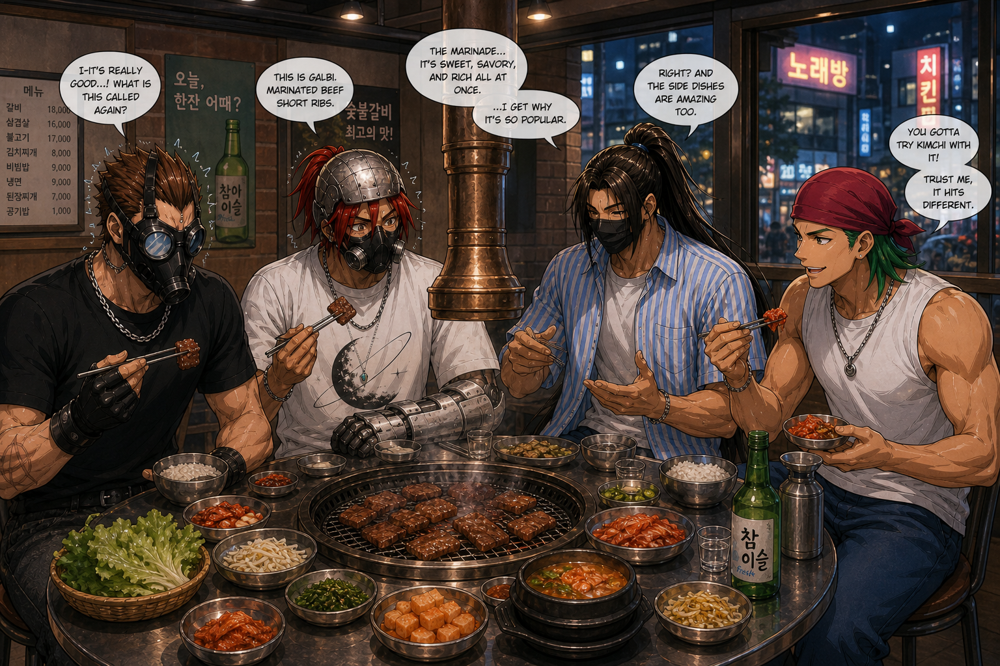
烤肉店，四個人。
갈비，김치，小菜一碗一碗。
意義，在變。
慢慢來。
下次，還可以來。
REBORN CHAOS
住進宿舍的第十天。
朴成俊把준혁和세준叫進來，說，「有人找你們。」
沒有更多說明。
那個「有人」，是NOVA ENTERTAINMENT的星探。
他在烤肉店那晚看到了他們——不是故意的，就是坐在隔壁桌，看到這兩個人，一個防毒面罩，一個機甲頭盔，在認真研究갈비和김치，然後低聲討論醃料的成分。
星探說，「我做這行十幾年，沒見過這樣的人。」
朴成俊，「什麼樣的人？」
「就是，」星探想了一下，「真實。」
면접은 없었다——沒有正式面試。
就是坐下來，談了一下，星探說，「你們有沒有興趣？」
準혁，「興趣做什麼？」
「成為藝人。」
沉默。
세준，「我們不唱歌。」
星探，「可以學。」
준혁，「我們不跳舞。」
星探，「也可以學。」
준혁和세준互看了一眼。
準혁想起태양說的那句話——
走著走著，答案會出現。
他低頭，看了一眼手臂上的刺青。
然後抬起頭，「什麼時候開始？」
就這樣，準혁和세준成了NOVA ENTERTAINMENT的練習生。
朴成俊說，「你們去NOVA，是好事。」
태양，「你不覺得可惜嗎？他們不在我們這邊——」
朴成俊，「各自走各自的路，不衝突。」
태양，「嗯……」他想了一下，「那我們還可以見到他們嗎？」
朴成俊，「看情況。」
태양，「這個回答我不喜歡。」
朴成俊，「我知道。」他停了一下，「但有時候，冥冥之中，事情會安排好的。」
태양，「你說話越來越玄了。」
朴成俊沒有回應，只是轉身走了。
NOVA ENTERTAINMENT，訓練室。
第一天練習。
白板上寫著——
DANCE TRAINING - 基礎律動 - 節奏控制 - 團隊默契 - 表情管理 - 舞台魅力 Remember: YOU ARE THE STAR
準혁站在鏡子前，防毒面罩和護目鏡，看著自己在鏡子裡的倒影。
在某F裡，他沒有倒影。
現在鏡子裡有他，有他旁邊的세준，有整個訓練室的燈光。
세준站在他旁邊，機甲頭盔，呼吸面罩，機甲左手垂著，看著白板上的字。
「YOU ARE THE STAR，」세준唸了一遍，「……這句話，現在對我們說。」
準혁，「嗯。」
세준，「在遊戲裡，我們是背景。」
準혁，「嗯。」
세준，「現在，」他停了一下，「不一樣了。」
준혁沒有說話，但往鏡子裡看了一眼，那個倒影還在。
門開了。
兩個人走進來——
一個紅頭巾，綠髮，白背心，藍短褲。
一個金髮，灰針織上衣，黑寬褲，手臂交叉。
준혁轉過頭。
세준也轉過頭。
四個人，在訓練室裡，對視了兩秒。
태양第一個開口，「……你們怎麼在這裡？」
準혁，「我們是這裡的練習生。」
태양，「……」他轉向강혁，「你知道嗎？」
강혁，「不知道。」
태양，「朴代表說冥冥之中——」
강혁，「嗯。」
태양，「他是知道的吧？」
강혁，「應該是。」
태양，「……」他搖搖頭，然後看向準혁和세준，笑了，「那我們又見面了。」
準혁，「你們來這裡做什麼？」
태양，「教舞。」
準혁，「……你們是舞蹈教練？」
태양，「對，NOVA請我們來的，就在你們練習期間——」他停了一下，「也就是說，我們是你們的老師。」
세준，「……」他看著태양，又看了看강혁，「你。是我們的舞蹈老師。」
태양，「怎樣，有問題嗎？」
세준，「上次你說你不太會游泳，只會浮。」
태양，「游泳跟跳舞是兩回事——」
강혁，「세준說得有道理。」
태양，「강혁你站哪邊的——」
강혁，「我是正式的舞蹈教練，태양是助教。」
태양，「助教！我不是助教，我是——」
강혁，「你負責帶氣氛，我負責教動作。」
태양，「……好，這樣說也行。」
準혁看著這兩個人，在訓練室裡的鏡子前鬥嘴，和第一次在宿舍見到他們的樣子，幾乎一模一樣。
然後他想到朴成俊說的——
冥冥之中，事情會安排好的。
他不知道這算不算安排好。
但他看著태양和강혁，這兩個在某個廢棄工廠出現、帶他去泳池、帶他吃갈비、讓他住進宿舍的人——
現在站在這個訓練室裡，是他的老師。
準혁，「……」他把視線移到白板上，YOU ARE THE STAR，然後移回來，「那，開始吧。」
태양，「！好！강혁，你來——」
강혁已經走到訓練室中間，「站好，我示範一次。」
세준站到位置上，準혁站到旁邊。
강혁看了他們兩個一眼，「準備好了嗎？」
準혁，「嗯。」
세준，「嗯。」
강혁，「음악——」
音樂進來。
訓練室的燈光打下來，鏡子裡是四個人——
兩個老師，兩個練習生。
冥冥之中，又在同一個地方。
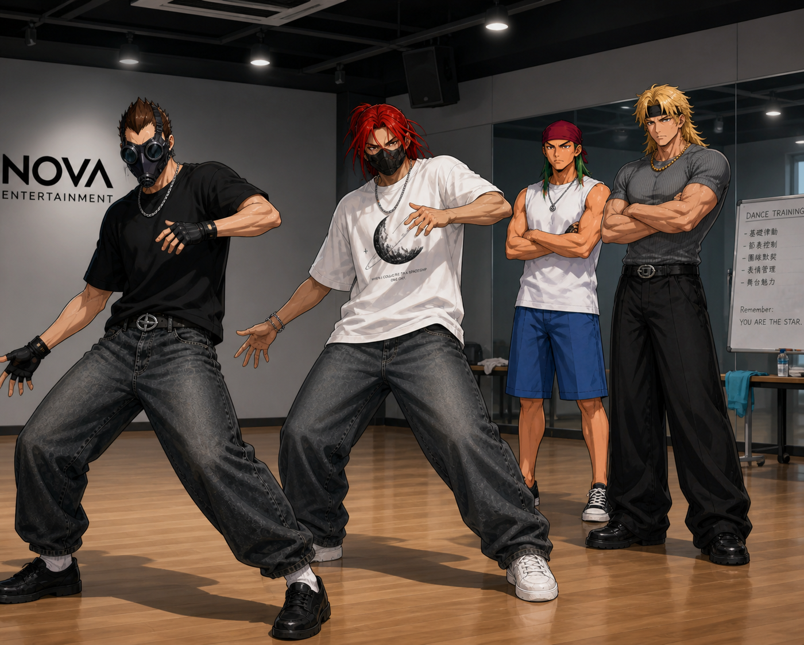
NOVA ENTERTAINMENT，訓練室。
冥冥之中——
朴成俊果然知道。
태양和강혁，又出現了。
這次，是老師。
YOU ARE THE STAR.
從遊戲裡的背景，到訓練室的主角。
慢慢來。
第一次練習，結束。
四個人，靠著NOVA的牆坐在地板上。
NOVA的水瓶放在中間，藍色的標誌，兩瓶，誰的都可以拿。
燈還亮著，鏡子裡有四個人的倒影。
沒有人說話。
準혁靠著牆，腿伸直，手肘撐著膝蓋，防毒面罩和護目鏡還戴著，低著頭——
不是在想什麼，就是讓身體在那裡。
今天練的東西，他記住了，但身體還沒有完全記住——動作的邏輯他懂，執行起來還有一段距離。
他看著自己的手，半指手套，手臂上的刺青，剛才練舞的時候那個X形標記跟著手臂的動作移動——
他第一次覺得，那個標記，在動的時候，不那麼像一個問號了。
세준坐在準혁旁邊，機甲頭盔和面罩還戴著，腿屈著，機甲左手放在膝蓋上，往前看——
看著正前方的鏡子，看著鏡子裡自己。
今天강혁說，「你的動作很準，但太硬。」
세준，「怎麼修？」
강혁，「忘記你在用哪塊肌肉，只記得你要去哪裡。」
세준重新試了一遍，還是硬。
강혁，「再來。」
세준，「嗯。」
試了五遍，第六遍，稍微軟了一點。
강혁，「這個感覺，記住。」
세준記住了。
現在坐在地板上，他在腦子裡把那個感覺再過了一遍——不是用哪塊肌肉，是要去哪裡。
機甲左手，也是一樣——不是攻擊用的，是要去哪裡的。
강혁靠著牆，手放在膝蓋上，往前看，表情是那種練完之後自然放鬆的樣子。
他在評估今天的狀況——
準혁的節奏感是有的，底子比他以為的好，可能是某F遊戲裡的巡邏步伐訓練了一種穩定的節拍感，只是還不知道怎麼把它用在舞蹈上。
세준的動作精準，遊戲裡精英守衛的那種控制力帶出來了，但太像在執行任務——需要讓那個精準，變成表達的方式而不是完成任務的方式。
他把這兩件事在心裡記下來，明天繼續。
태양坐在最右邊，腿交叉，手撐著地，往旁邊看了看準혁和세준，又看了看강혁——
「今天怎麼樣？」他問，對著準혁和세준。
準혁，「比想像的難。」
태양，「哪裡難？」
準혁，「身體知道要做什麼，但做出來的不是那個。」
태양，「嗯，就是這樣。」他點頭，「我剛開始學的時候也是，腦子和身體像是兩個不同的人。」
準혁，「後來呢？」
태양，「後來練多了，它們就認識彼此了。」
準혁，「……認識彼此。」
태양，「嗯，就是這樣。」
세준，「강혁。」
강혁，「嗯？」
세준，「你說忘記用哪塊肌肉，只記得要去哪裡——這句話，跟今天在訓練室白板上看到的那句話有關係嗎？」
강혁，「哪句話？」
세준，「YOU ARE THE STAR。」
강혁，「……」他想了一下，「有關係。」
세준，「怎麼有關係？」
강혁，「Star不是在算自己用了幾塊肌肉，是知道自己要去哪裡，然後去。」
세준，「……」他看著강혁，「你說話越來越像老師了。」
강혁，「我本來就是老師。」
태양，「他以前不這樣說話的——」
강혁，「태양。」
태양，「嗯？」
강혁，「你今天的示範，第三個八拍拍子慢了。」
태양，「……我以為你沒注意到。」
강혁，「我都注意到。」
태양，「……好，明天修。」
四個人，地板上，NOVA的水瓶在中間。
準혁把水瓶拿起來，打開，喝了一口。
冷的，NOVA的標誌印在瓶身上，和手臂上的刺青放在一起——
一個是組織的標記，一個是新公司的標誌。
他把水瓶放回去，沒有說話。
세준拿起另一瓶，機甲左手拿著，右手打開，喝了一口，放回去。
燈光打在四個人身上，鏡子裡的倒影也在。
태양，「準혁，你在遊戲裡，有沒有想過會有今天？」
準혁，「什麼今天？」
태양，「就是，坐在一個叫NOVA的地方，練跳舞，喝他們的水。」
準혁，「……沒有。」他停了一下，「在遊戲裡，沒有明天，沒有今天，只有現在這一輪巡邏。」
태양，「那現在呢？」
準혁，「……現在有明天。」
태양，「什麼意思？」
準혁，「明天還要繼續練。」他說得很平，「這樣就是有明天。」
태양愣了一秒，然後笑了，「……對，這樣就是有明天。」
강혁，「嗯。」
세준，「我在遊戲裡，也沒有明天。」他說，聲音從呼吸面罩後面出來，「財團大樓，永遠是同一棟，同一層，同一個位置。」
태양，「現在呢？」
세준，「現在，」他看了看訓練室，「每天的訓練室都一樣，但每天學的東西不一樣。」
태양，「所以有明天。」
세준，「嗯。」
燈還亮著，但沒有人站起來。
四個人，靠著NOVA的牆，坐在木頭地板上，水瓶在中間——
老師和練習生，但此刻，就是四個人坐著。
강혁最後站起來，「明天繼續，」他說，「今天的東西，回去各自再想一遍。」
準혁，「嗯。」
세준，「嗯。」
태양，「我也要想我的第三個八拍——」
강혁，「嗯。」
태양，「……你可以說不用了。」
강혁，「不用說，你自己知道要修。」
태양，「……嗯。」
四個人站起來，準備離開訓練室。
準혁走在最後，回頭看了一眼那個房間——
NOVA的logo在牆上，鏡子裡現在沒有人，空的。
但地板上有今天練舞留下的痕跡，還有水瓶放過的位置。
不是空的。
他轉回來，走出去。
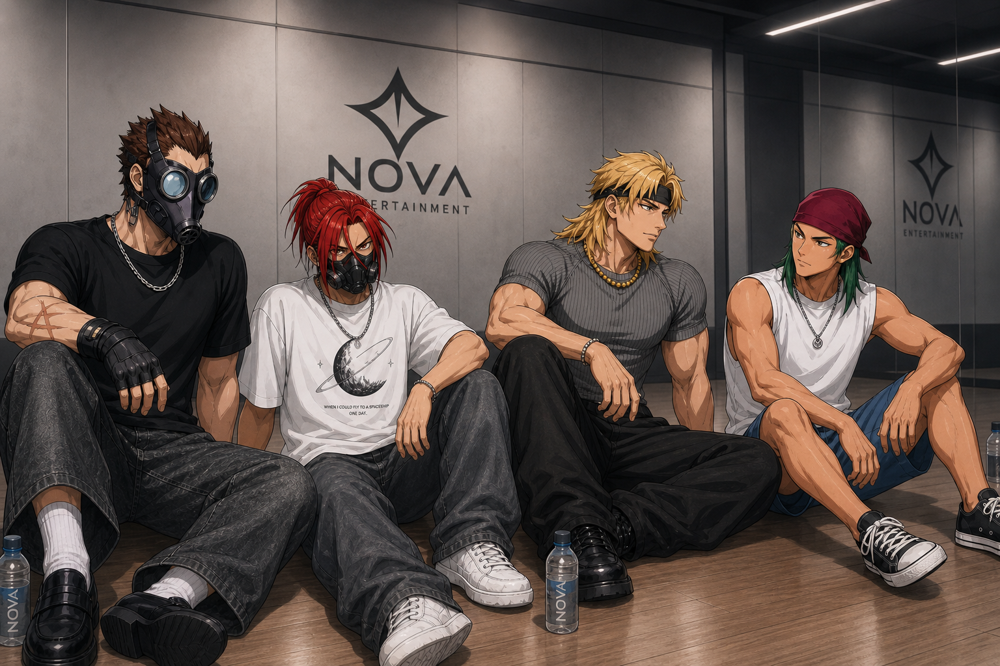
NOVA ENTERTAINMENT，訓練室，練完。
地板上，四個人。
有明天，就是有明天。
明天，繼續練。
NOVA ENTERTAINMENT，室內游泳池。
白板上寫著今天的行程——
DANCE PRACTICE 10:00 — WARM UP 11:00 — VOCAL 13:00 — DANCE 15:00 — BREAK 16:00 — DANCE 18:00 — MOCK STAGE
旁邊用比較大的字寫著——
DEBUT IS ☆ OUR GOAL.
15:00，BREAK。
태양第一個說，「去泳池。」
강혁，「嗯。」
準혁，「……NOVA有泳池？」
태양，「對，就在這棟樓裡，我們教練有使用權——走！」
泳池邊，四個人坐在池邊台階上。
7WAVE的水瓶放在旁邊——黑色，白色，각자의 것——是태양和강혁帶來的，上面印著7WAVE的標誌。
準혁看著自己手邊那個水瓶，「這個是你們的？」
태양，「對，7WAVE的週邊，我們帶來給你們用。」
準혁，「……7WAVE的水瓶，在NOVA的泳池。」
태양，「有什麼問題嗎？」
準혁，「沒有，就是說一下。」
四個人都穿著7WAVE的黑色泳褲——
태양昨天說，「我帶泳褲來，你們試試看合不合適。」
세준，「7WAVE的泳褲。」
태양，「對，我們有很多，你們拿去用。」
세준看了看那個7WAVE的字樣，「穿你們的東西……」
태양，「有問題嗎？」
세준，「……沒有。」他接過去了。
準혁也接了，沒有說話。
현재，泳池邊——
準혁坐在台階上，毛巾搭在脖子上，防毒面罩和護目鏡還戴著，手臂上的刺青在濕的皮膚上很清楚，看著水面。
7WAVE的水瓶在旁邊，和那個刺青並排。
兩個標誌，一個是來自遊戲的組織，一個是來自現實的七個人。
他沒有想太多，就是看著那兩個東西放在一起。
세준坐在準혁旁邊，白毛巾搭著，頭盔摘了，面罩還戴著，機甲左手擱在膝蓋上。
他看著水——
上次在這裡，태양教他浮，機甲手在水裡被托著。
那個感覺，還記得。
「今天，」세준開口，「MOCK STAGE是什麼？」
태양，「就是模擬舞台，你們站上去，像真正的表演一樣跑一遍。」
세준，「今天就要？」
태양，「對，早一點站上去比較好，熟悉那個感覺。」
세준，「……我沒站過舞台。」
태양，「我知道，所以今天先模擬。」
세준，「你第一次站舞台是什麼感覺？」
태양想了一下，「很大。」
세준，「燈光？」
태양，「不是，是——感覺很大。那種有很多人在看你，然後你在那裡的感覺。」他停了一下，「但後來你會喜歡那個感覺。」
세준，「怎麼確定我會喜歡？」
태양，「因為你在遊戲裡，沒有人真的在看你。」
세준，「……」
태양，「現在不一樣了。」
강혁靠著池邊坐著，毛巾搭在肩上，往前看，手裡拿著7WAVE的水瓶，慢慢喝著。
他看著準혁——
那個刺青，從第一天廢棄工廠就看到了，一直沒有問。
今天他決定問，「準혁。」
準혁，「嗯？」
강혁，「那個刺青，你怎麼看它？」
準혁低頭，看了看手臂，「你問過我這個嗎？」
강혁，「沒有，今天第一次問。」
準혁，「……之前，」他停了一下，「覺得它是一個問號。代表一個不在了的組織，一個不存在的身份。」
강혁，「現在呢？」
準혁看著刺青，又看了看旁邊的7WAVE水瓶，「現在——還是問號，但，」他停了一下，「問號也可以是在問下一個答案。」
강혁，「嗯。」
準혁，「你問這個，是為什麼？」
강혁，「因為今天MOCK STAGE，你會站在鏡子前，」강혁說，「你要知道你帶著什麼上去。」
準혁，「我帶著那個刺青。」
강혁，「嗯，和其他的。」
準혁，「其他的是什麼？」
강혁，「你自己的答案。」
準혁沉默了一會，「……嗯。」
태양看著강혁和準혁的對話，沒有插嘴。
然後他看向세준，「你呢，세준，你帶著什麼？」
세준，「機甲手。」
태양，「還有？」
세준，「財團大樓的記憶。」
태양，「還有？」
세준想了一下，「……泳池的感覺。」
태양，「哪個泳池的感覺？」
세준，「被水托著，機甲手沉但沒有沉下去。」
태양，「嗯，」태양點頭，「帶著這個上去，就夠了。」
세준，「就這樣？」
태양，「就這樣，其他的身體會告訴你。」
세준看著水面，「你說話，越來越像老師了。」
태양，「我本來就是老師——」
강혁，「助教。」
태양，「……강혁你今天說了幾次了——」
강혁，「說幾次都是真的。」
태양，「……」
準혁在旁邊，低頭，護目鏡後面的眼神動了一下——
那是他第一次，在這四個人裡面，差點笑出來。
15:00的BREAK，快結束了。
白板上的行程——16:00 DANCE，18:00 MOCK STAGE——還在等著。
四個人坐在泳池邊，7WAVE的水瓶在旁邊，水面很靜，NOVA的logo在牆上。
準혁，「準備好了嗎？」他問的是세준。
세준，「不確定。」
準혁，「我也不確定。」
세준，「那怎麼辦？」
準혁，「去了再說。」
세준，「……嗯。」
태양站起來，「走了，16:00了——」
강혁已經站起來，把毛巾拿起來，「準혁，세준，」他說，「今天的MOCK STAGE，不需要完美。」
準혁，「那需要什麼？」
강혁，「需要你們在上面。」
準혁，「……嗯。」
세준，「嗯。」
四個人離開泳池，往訓練室走。
走廊上，白板那句話的方向——
DEBUT IS ☆ OUR GOAL.
準혁走過去，低頭看了一眼，繼續走。
세준也看了，沒有停，繼續走。
目標還很遠，但今天，先站上MOCK STAGE。
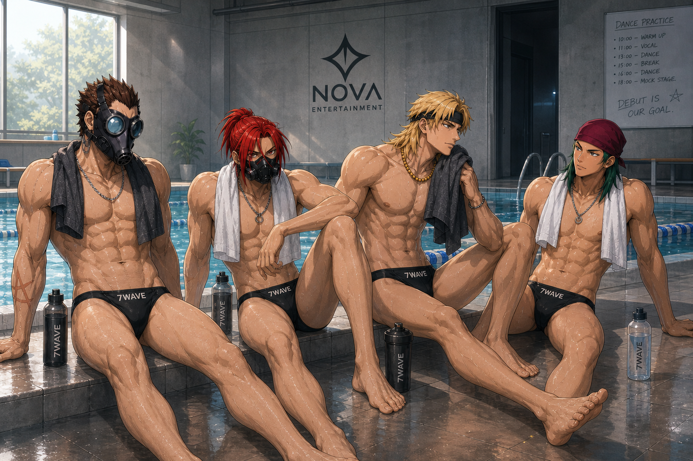
NOVA ENTERTAINMENT，泳池，BREAK時間。
7WAVE的水瓶，NOVA的泳池，四個人。
問號，也可以是在問下一個答案。
被水托著的感覺，帶上去。
DEBUT IS ☆ OUR GOAL.
今天，先站上去。
NOVA附近，戶外廣場。
練習結束，태양說，「去吃點甜的。」
準혁，「甜的是什麼？」
태양，「就是，甜的東西，蛋糕、冰淇淋、那種——」
準혁，「我知道甜是什麼，我是說為什麼要特別去吃甜的。」
태양，「練完很累，吃甜的補充能量。」
강혁，「這個說法有點問題。」
태양，「但結論是對的，走吧。」
廣場的石階上，四個人坐著。
陽光從樹縫裡打下來，光和影切在地板上，很碎。
태양手上拿著一杯冰咖啡，吸管插著，另一手拿著叉子，面前是一塊藍莓起司蛋糕，已經吃了一半。
강혁坐在태양旁邊，手上的盤子裡是一塊起司蛋糕，叉子拿著，慢慢吃，看著前方。
準혁拿著叉子，面前是一塊巧克力蛋糕，低頭研究——
那是他第一次吃蛋糕。
他切了一小塊，放進嘴裡，嚼了一下，停了一下。
巧克力的苦，奶油的甜，兩個味道疊在一起——
「……這個，」他說，「同時是苦的，又是甜的。」
태양，「對，巧克力就是這樣。」
準혁，「兩個味道可以同時存在？」
태양，「可以，而且放在一起更好吃。」
準혁又切了一塊，放進嘴裡，沒有說話，繼續吃。
세준坐在準혁旁邊，手上拿著盤子，裡面是一塊草莓短蛋糕——
但他沒有在吃，在看那個蛋糕。
준혁，「你不吃嗎？」
세준，「在看。」
준혁，「看什麼？」
세준，「草莓，」他指了指上面那顆紅色的草莓，「它長在外面，很顯眼。」
준혁，「……嗯。」
세준，「我在遊戲裡，不顯眼，就是守著那個位置。」
준혁，「我也是，就是巡邏那條路線。」
세준，「但草莓，長在最上面。」
준혁，「……你在說，我們也可以長在最上面？」
세준，「不是，我在說，草莓很好看。」
준혁，「……」
세준，「但你說的那個，也可以想。」
준혁，「……」他低頭吃了一口蛋糕，「你說話有時候很難懂。」
세준，「你懂了就好。」
這時候，有人走過來。
四個人抬起頭——
화성，藍條紋外衫，黑口罩，黑長髮，手上拿著一個金屬托盤，上面放著幾塊小蛋糕，各種口味——草莓、巧克力、抹茶、藍莓——
「我去買了，」他說，「多幾種。」
태양，「你怎麼在這裡？」
화성，「練習結束，朴代表說你們在這裡，就過來了。」
태양，「你主動過來找我們？」
화성，「嗯。」
태양，「……화성你今天怎麼了？」
화성，「沒怎麼。」他把托盤往세준和準혁面前放，「你們要哪個？」
세준看著托盤上的幾塊蛋糕，「……抹茶。」
화성把抹茶的夾出來，放到세준盤子旁邊。
準혁，「那個，」他指了指一塊上面有紅色果醬的，「那個是什麼？」
화성，「草莓奶油。」
準혁，「……給我試試看。」
화성把那塊放到準혁盤子旁邊，然後在旁邊坐下來——
자연스럽게，就這樣坐下來了，像是本來就在這裡。
五個人，石階上。
태양的冰咖啡，강혁的叉子，準혁的巧克力蛋糕旁邊多了一塊草莓奶油，세준的草莓蛋糕旁邊多了抹茶，화성把托盤放在膝蓋上，自己沒有拿，就是拿著托盤。
태양，「화성，你自己不吃嗎？」
화성，「買夠了就好。」
태양，「你買了五塊，自己一塊都不吃？」
화성，「嗯。」
태양，「為什麼？」
화성，「買給你們吃的。」
태양，「……」他看著화성，「你就是這樣，每次都這樣。」
화성，「什麼樣？」
태양，「就是，做了，但不說。」
화성，「說了就不是我。」
태양，「……」他把自己盤子上切下來的一塊推向화성，「吃，你自己的。」
화성看了那塊蛋糕一眼，「我不需要——」
태양，「吃。」
화성，「……」他拿起叉子，切了一小塊，放進嘴裡，嚼了幾下——
「……甜。」
태양，「對，本來就甜，你買的。」
화성，「……嗯。」
準혁切了一小塊草莓奶油，放進嘴裡——
比巧克力甜很多，也沒有苦，就是純粹的甜。
他又切了一塊，兩種口味交替著吃。
세준在旁邊，把抹茶蛋糕切開，吃了一口，眼神動了一下——
「苦的。」
태양，「對，抹茶有苦味。」
세준，「但甜的也在。」
태양，「嗯，苦和甜，同時在。」
세준，「……」他又吃了一口，「你說準혁說的那個，苦和甜可以同時存在。」
태양，「對。」
세준，「我們出來以前的日子，是苦的。」
태양，「嗯。」
세준，「現在，甜的也在了。」
태양，「嗯，就是這樣。」
화성，「세준。」
세준，「嗯？」
화성，「某B裡，有甜的東西嗎？」
세준，「遊戲裡？沒有，財團大樓裡什麼都沒有，只有任務。」
화성，「我那個區域也沒有，」화성說，「出來之後，第一次吃到甜的，是철민煮的東西——」他停了一下，「雖然那個味道很奇怪。」
태양，「철민煮的東西味道很奇怪這件事，我們都知道。」
화성，「但是熱的，而且是他做的。」
태양，「所以好吃？」
화성，「……算是。」
세준，「所以，甜不甜，不只是味道的事。」
화성，「嗯。」
준혁在旁邊，一直沒有說話，但他把手上那塊草莓奶油吃完了，又把巧克力那塊也吃完了。
태양，「준혁，好吃嗎？」
准혁，「……兩個都好吃。」
태양，「哪個比較好吃？」
준혁，「不一樣的好吃。」
태양，「嗯，就是這樣。」
五個人，廣場石階，陽光從樹縫裡打下來，盤子空了，태양的冰咖啡喝完了，화성的托盤上只剩一塊沒有人拿的抹茶蛋糕。
태양，「화성，那塊沒人拿的你吃掉。」
화성，「剩下的。」
태양，「嗯，剩下的是你的。」
화성，「……」他拿起叉子，把那塊也吃了。
태양，「今天怎麼樣？」他問的是準혁和세준。
準혁，「比昨天好一點。」
태양，「哪裡好一點？」
준혁，「身體開始知道要去哪裡了，一點點。」
태양，「好，一點點就好，明天再多一點點。」
세준，「MOCK STAGE，我站上去了。」
태양，「感覺怎麼樣？」
세준，「大。」
태양，「燈光？」
세준，「不是，就是，感覺很大。」
태양笑了，「你說的那個感覺，我懂。」
세준，「你說我之後會喜歡。」
태양，「嗯。」
세준，「……我不確定喜歡，但我不排斥了。」
태양，「夠了，不排斥是開始。」
石階上，五個人，空盤子，午後的陽光。
準혁低頭，看著自己手臂上的刺青——那個X形的標記，在光裡還是清楚的。
旁邊是화성帶來的空托盤，和吃完的叉子。
他想了一下，沒有說什麼，就是繼續坐著。
但那個刺青，他今天第三次看它——
每次看，感覺都跟上次不太一樣。
還是問號。
但問號的形狀，在變。
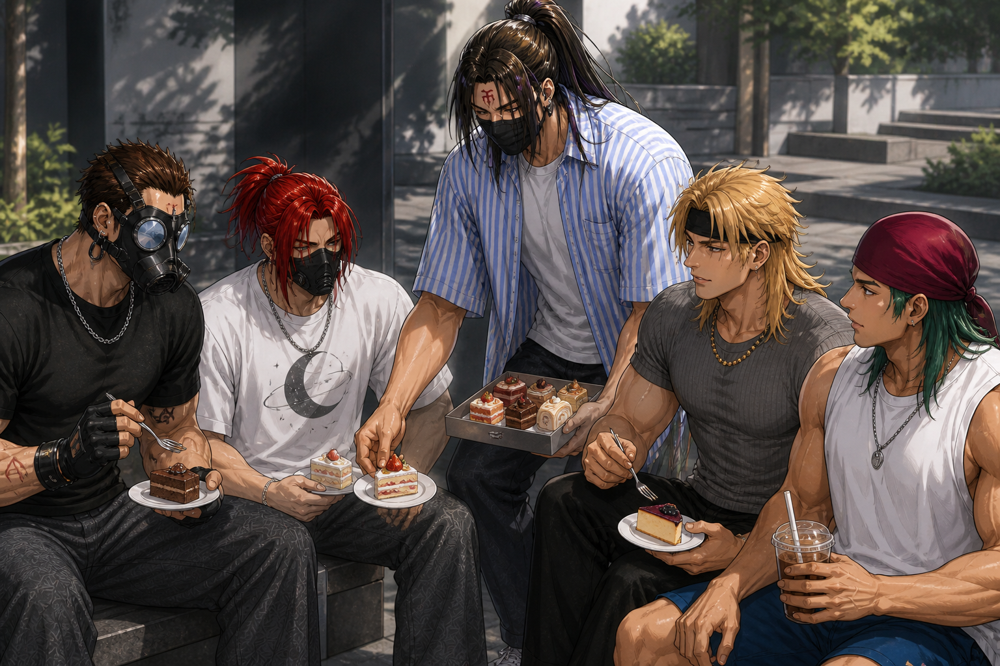
NOVA附近廣場，石階。
화성帶著蛋糕出現。
苦和甜，可以同時在。
不排斥，是開始。
問號的形狀，在變。
REBORN CHAOS
강혁先走了。
練習結束，他說有事，點頭，走了。沒有說是什麼事，就是走了——這是강혁的風格，準혁和세준已經知道了。
剩下태양和화성，還有準혁和세준。
태양，「走，帶你們去一個地方。」
準혁，「哪裡？」
태양，「去了就知道——화성，你來吧？」
화성，「嗯。」
澀谷。
走出地鐵站的瞬間，準혁停下來了。
人，很多人，從四面八方流動，聲音從四面八方來——廣播、音樂、汽車、人聲，全部疊在一起，打在他的防毒面罩和護目鏡上。
「……這個地方，」他說，「比我想像的，人多很多。」
세준在他旁邊，也停住了，機甲左手輕輕握了一下，「這麼多人……這麼多聲音。」
遊戲裡，某F是戰場，某B是財團大樓——有人，但是敵人，或者是要守護的區域。不是這種，不是這種無數個方向同時來的人流。
태양走到他們旁邊，「這裡是澀谷！東京最有名的地方之一。」他往四周比了比，「有購物、有食物、有音樂——idol需要的，這裡都有！」
準혁，「idol是——」
태양，「就是我們在做的事，」他笑著說，「你們以後也是。」
화성，「而且，」화성接上，「我們的粉絲，很多在這一帶。」他往前指了一下，「我們的fans，喜歡在這裡出沒。」
세준順著화성指的方向看——
然後他看到了。
大樓的廣告看板。
巨大的，七個人的臉，打在整棟樓的玻璃幕牆上——
SEVEN WAVES NEW SINGLE「BE THE ONE」
準혁也看到了。
他認出了화성——藍條紋外衫，黑口罩，站在七個人裡面，是他熟悉的那個人。
然後是태양，紅頭巾，綠髮，在最左邊，笑著。
還有五個他還不認識臉的人。
七個人，在那個看板上，被幾萬個人看著。
準혁，「那個是你們。」
태양，「對！」他仰頭看著那個看板，「BE THE ONE，我們的新單曲——」
準혁，「你們在那麼大的地方。」
태양，「嗯，澀谷的廣告，很多人會看到。」
準혁，「……」他看著那個看板，看著화성的臉印在那上面，然後看了看旁邊真實的화성。
화성沒有說話，也在看那個看板——不是自豪，就是在看，很平靜地在看。
準혁，「你看到自己在上面，是什麼感覺？」
화성，「……真實。」
準혁，「就這樣？」
화성，「每次看到，都確認一次，我在這裡。」
세준，「BE THE ONE，」他唸了一遍，「NOVA的訓練室白板上也有這句話。」
태양，「對，我們的單曲名字，跟你們的目標，是一樣的字。」
세준，「冥冥之中。」
태양，「嗯，又是冥冥之中——」
화성，「朴代表會說，是安排好的。」
태양，「他一定知道。」
人群從四個人旁邊流過去，澀谷的交叉路口，紅燈變綠燈，幾百個人同時往四個方向走——
準혁看著那個景象，握著狙擊步槍的手，沒有那麼緊了。
這裡沒有敵人，就是人，就是城市，就是這個世界本來的樣子。
他仰頭，再看了一眼那個看板——
七個人，BE THE ONE。
然後低下頭，看著自己手臂上的刺青——那個X形的標記。
「화성，」他說。
화성，「嗯？」
準혁，「你說，每次看到自己在那個看板上，就確認一次你在這裡。」
화성，「嗯。」
準혁，「那個刺青，我每次看，也確認一次。」
화성，「確認什麼？」
준혁，「確認我在。不是某F裡的Trooper，是準혁，在這裡。」
화성，「……嗯。」他停了一下，「這樣，就對了。」
세준看著那個廣告看板，看了很久。
「태양，」세준說。
태양，「嗯？」
세준，「你們七個，站上那個位置，花了多久？」
태양想了一下，「從倉庫到第一次上台，九天。從第一次上台到現在，快五百天。」
세준，「五百天。」
태양，「嗯，但你不需要五百天，你已經有基礎了——有我和강혁教，有화성在旁邊，有NOVA。」
세준，「我沒有說要複製你們的五百天。」
태양，「那你想說什麼？」
세준，「我想說，」他看著那個看板，「我想知道，我自己的，要花多久。」
태양，「不知道，」태양說，「但會到的。」
세준，「嗯。」
綠燈，人群再次流動。
태양，「走，我帶你們去吃東西——澀谷有很好吃的——」
準혁，「剛剛才吃了蛋糕。」
태양，「蛋糕是甜點，現在吃正餐，不一樣的——」
화성，「태양。」
태양，「嗯？」
화성，「你每次說不一樣，都是為了再吃一次。」
태양，「……有嗎？」
화성，「有。」
태양，「……但這次是真的不一樣——」
화성，「走吧。」他已經往前走了，「準혁，세준，跟上。」
準혁，「嗯。」
세준，「嗯。」
태양跑上來，「我帶路——」
화성，「你知道路嗎？」
태양，「……我知道方向。」
화성，「方向和路不一樣。」
태양，「你手機查，我帶氣氛——」
화성，「……」他拿出手機，查了一下，「這邊。」
태양，「！走——」
四個人，走進澀谷的人群裡。
大樓上，SEVEN WAVES的看板還亮著——
BE THE ONE
準혁沒有再回頭看，但他記得那個畫面。
七個人站在那裡，화성在裡面，然後現在화성走在他旁邊，帶他走進這個城市。
BE THE ONE。
他不知道自己的那個ONE是什麼，還沒找到。
但他走著。
走著走著，也許會找到。
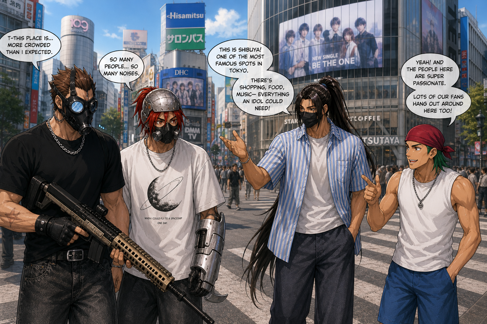
澀谷。
大樓上，SEVEN WAVES，BE THE ONE。
人群裡，四個人。
走著走著，會到的。
今天，先走。
화성和태양先走了。
화성說，「你們自己逛，有事傳訊息。」
태양，「對，澀谷很好逛——不要迷路！」
準혁，「我有方向感。」
태양，「你確定嗎，這裡很複雜——」
準혁，「確定。」
태양，「……好，那你們自己逛，晚上回來吃飯——」
화성已經走了。
태양，「等我——！」他跑著追上去。
四個人變兩個人，準혁和세준，站在澀谷的街上。
逛了一會。
준혁習慣性地在人群裡掃視，不是戒備，就是習慣——但今天比第一次來少了一點緊繃。
세준走在旁邊，機甲頭盔摘了，面罩還戴著，紅色長髮紮著，往旁邊的店窗看，偶爾停一下，研究裡面的東西。
兩個人沒有說太多話，但並排走著。
轉過一個路口，有人衝過來——
一個男人，黑色工作服，脖子上掛著相機，後面跟著兩個助理，表情很急——
「不好意思！」他停在準혁和세준面前，用力喘著氣，「你們兩個，有沒有空——現在，馬上？」
準혁，「什麼事？」
男人，「我是攝影師，今天的模特兒臨時出狀況沒辦法來，我還有兩個小時要交稿，你們兩個——」他往上往下掃了一遍，「完全符合，長相、體型、氣場，全部對——你們願意嗎？」
세준，「做什麼？」
「拍照，就是站在那裡，穿我們準備的衣服，讓我拍——」他把手往後指了指，那裡有一個小型的拍攝現場，燈光架、反光板、攝影師助理——「就在附近，一個小時，我付費——」
準혁和세준互看了一眼。
準혁，「我們可以不摘面罩嗎？」
男人愣了一下，「……可以，其實你們的裝備很有特色，口罩和護目鏡反而是加分——」
세준，「衣服是什麼？」
助理立刻打開袋子——
CALIFORNIA BERKELEY的米白色寬版T恤，加California Athletic Dept.的藏青色短褲。
UCLA BRUINS的深藍色T恤，加淺色丹寧寬褲。
세준看著那兩套，「……這個是什麼概念？」
攝影師，「美式學院風，休閒感，你們的氣場很適合——」
準혁，「好。」
세준，「……好。」
攝影師，「！謝謝你們救了我——」
換好衣服，站到拍攝位置——
NOVA附近某棟建築外，石材台階，後面是泳池區，光線很好，樹影打在地上。
準혁靠著石材牆，CALIFORNIA的白T，藏青短褲，白球鞋，背包掛著——他不知道怎麼擺，就是靠著牆站著，看向前方。
세준站在旁邊，UCLA的深藍T，淺色丹寧褲，Nike球鞋，一隻手插口袋，一隻手摸了摸頭髮，不是在擺姿勢，是真的不知道頭髮有沒有亂。
攝影師舉起相機——
咔嚓。
助理看著電腦螢幕，「……欸。」
攝影師往螢幕那邊走，看了一眼——
螢幕裡，準혁靠著牆，面具和護目鏡，CALIFORNIA的字在胸口，手臂上的刺青在衣服袖子下面露出來一點。
세준在旁邊，摸著頭髮，面罩，紅色長髮，UCLA，機甲左手被牛仔褲擋住了一部分，就這樣自然地站著。
兩個人，沒有在表演，沒有在擺pose——就是站在那裡，各自是自己的樣子。
攝影師，「……這個，不用調。」
助理，「你剛說不用調？」
攝影師，「嗯，就這樣拍，不要讓他們動太多。」
拍攝開始。
攝影師說，「你們不需要笑，不需要做什麼，就是……你們平常是什麼樣子，就是什麼樣子。」
準혁，「平常就是這樣。」
攝影師，「對，就這樣。」
咔嚓。
세준把手從頭髮上放下來，往旁邊看了一下——
咔嚓。
準혁把視線從前方移到旁邊，看了세준一眼——
咔嚓咔嚓咔嚓。
攝影師在鏡頭後面，沒有停。
拍到一半，準혁，「你說不需要做什麼。」
攝影師，「嗯，你們自然就好。」
準혁，「……我們平常就是這樣。」
攝影師，「我知道，所以在拍。」
準혁，「我的意思是——我們不是模特兒，你確定我們的樣子可以用嗎？」
攝影師放下相機，把螢幕轉過來——
兩個人，石材背景，光和影，各自的裝備，各自的樣子。
準혁看著那個畫面，護目鏡後面的眼神動了一下。
세준，「……這是我們。」
攝影師，「嗯，你們是你們，鏡頭只是把它記下來。」
세준看著螢幕裡自己的樣子，紅色長髮，藍色T恤，面罩，機甲左手在畫面邊緣——
他想起崔攝影師說的那句話，是화성轉述給他的——
鏡頭前，你是什麼樣子，就是什麼樣子。
「……繼續吧，」세준說，「你還有一個多小時。」
攝影師，「好！」他舉起相機，「你們繼續，不用想鏡頭——」
一個小時後，結束。
攝影師付了費，連連道謝，助理們開始收器材。
準혁和세준換回自己的衣服，站在街上。
세준，「這個算是什麼？」
準혁，「拍照。」
세준，「我知道是拍照，我是說——算是什麼經歷。」
準혁想了一下，「被人看見。」
세준，「嗯。」他停了一下，「不排斥。」
準혁，「嗯。」
세준，「你說過，不排斥是開始。」
준혁，「那是태양說的。」
세준，「你記得。」
준혁，「……嗯。」
兩個人繼續走。
街上，人群還在流動，澀谷的聲音還是很大——
但準혁走在裡面，步伐比來的時候，寬了一點。
他拿出手機，傳了一條訊息給태양——
「我們被人拍了照，你知道這種事嗎？」
태양的回覆幾乎是立刻——
「什麼！！詳細說！！」
準혁看著那串驚嘆號，把手機收起來，繼續走。
旁邊세준，「태양回了？」
준혁，「回了。」
세준，「說了什麼？」
준혁，「很多驚嘆號。」
세준，「……嗯，是他的風格。」
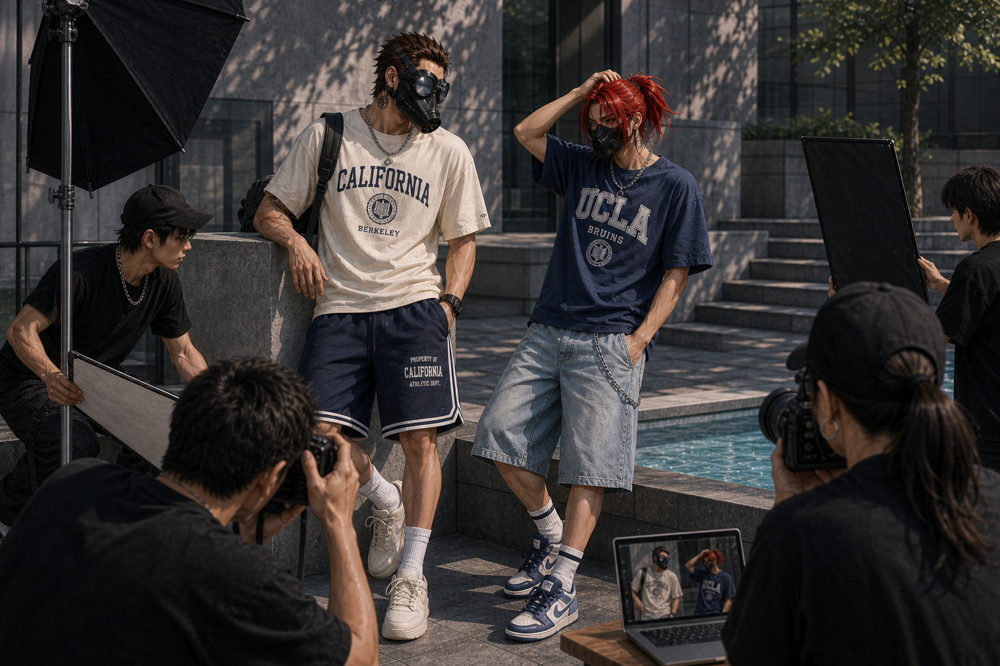
澀谷，偶然的拍攝。
CALIFORNIA，UCLA，鏡頭前。
鏡頭只是把它記下來——
你是什麼樣子，就是什麼樣子。
不排斥，是開始。
走著走著，步伐寬了一點。
宿舍，夜晚。
門打開的瞬間——
강혁和태양同時轉過頭。
兩個人坐在沙發上，桌上有咖啡杯、零食、一個黑色水壺——
看起來等了一段時間了。
準혁和세준站在門口，背包還背著，剛從澀谷回來。
태양第一個開口，雙手往外攤，「你們去哪了！我傳訊息你們都沒回——」
準혁，「我回了。」
태양，「你說被拍了照！然後就沒了！我問你們在哪裡，沒有回！」
準혁，「手機沒電了。」
태양，「……」他深呼吸，「好，手機沒電，那세준呢？」
세준，「我沒有手機。」
태양，「……你還沒有手機？」
세준，「嗯。」
태양看向강혁，「他沒有手機。」
강혁，「我聽到了。」
태양，「你不覺得這是大事嗎？」
강혁，「是。」
태양，「那為什麼你那麼平靜——」
강혁，「因為他們回來了。」
準혁走進來，把背包放下，「等很久了？」
강혁，「還好。」
태양，「兩個小時！」
강혁，「沒有這麼久。」
태양，「有！我看時鐘了——」
강혁，「태양。」
태양，「嗯？」
강혁，「他們回來了就好。」
태양，「……」他嘆了一口氣，「好，回來了就好。」他重新看向準혁和세준，「你們沒事吧？」
準혁，「沒事。」
세준，「嗯。」
태양，「那個拍照的事，詳細說。」
四個人坐下來，準혁和세준把今天的事說了一遍——
逛著逛著，攝影師衝過來，說模特兒臨時出狀況，問他們願不願意，一個小時，在NOVA附近的廣場。
태양越聽越大聲，「等等，你們就這樣答應了？」
準혁，「他說符合。」
태양，「符合是什麼？他說你們符合什麼？」
準혁，「長相、體型、氣場。」
태양，「……」他看了看準혁和세준，「他說得對。」
강혁，「拍完怎樣？」
세준，「他說不需要調整，就是我們的樣子。」
강혁，「嗯。」
세준，「有一個螢幕，我看到了我們的照片。」
강혁，「感覺怎樣？」
세준想了一下，「……真實。」
강혁，「嗯。」他停了一下，「上次你說不排斥了。」
세준，「嗯。」
강혁，「現在呢？」
세준，「……往前了一點。」
강혁沒有說什麼，但點了頭。
태양，「準혁，你呢？」
準혁低頭，看了看手臂上的刺青，「攝影師說鏡頭只是把它記下來，你是什麼樣子，就是什麼樣子。」
태양，「嗯。」
準혁，「我想到，那個刺青，也一樣——它是什麼，就是什麼，不會因為我怎麼看它就變。」
태양，「所以？」
準혁，「所以我決定不再一直想它是什麼意思。」他說，「它在，我也在，就這樣。」
태양，「……」他沉默了兩秒，「準혁，你今天想通了很多事。」
準혁，「澀谷的路很長。」
태양，「嗯，走長路會想事情。」
房間裡，牆上兩個海報——
左邊，NO PAIN NO GAIN
右邊，DISCIPLINE. GRIND. SUCCESS.
桌上的零食還開著，咖啡杯有點涼了，黑色水壺的logo反著燈光。
外面走廊，安靜，夜晚的宿舍沒有什麼聲音。
세준，「강혁。」
강혁，「嗯？」
세준，「你說今天的MOCK STAGE，不需要完美，需要我們在上面。」
강혁，「嗯。」
세준，「今天那個拍照，也是一樣。」
강혁，「怎麼說？」
세준，「他不需要我們完美，他需要我們在那裡，是我們的樣子。」
강혁，「嗯，」강혁說，「你理解了。」
세준，「……是你在教我的。」
강혁，「不是，」강혁說，「是你自己走出去，才知道的。」
세준沉默了一下，「……嗯。」
태양，「那個攝影師，你們有拿他的聯絡方式嗎？」
準혁，「有，他給了名片。」
태양，「給我看——」
準혁從口袋裡拿出一張名片，遞給태양。
태양，「……這個人我認識。」
準혁，「認識？」
태양，「他之前幫SEVEN WAVES拍過東西，很厲害的攝影師。」
準혁，「……」
태양，「你們今天撿到寶了。」
세준，「我們不是撿，是被找到的。」
태양，「嗯，被找到，也是一種緣分。」
강혁站起來，「明天繼續訓練，早點睡。」
태양，「등等，세준你沒有手機這件事——」
강혁，「明天去買。」
태양，「好，那準혁你的手機充電——」
準혁，「我知道。」
태양，「好，那——」
강혁，「태양。」
태양，「嗯？」
강혁，「睡了。」
태양，「……好。」
準혁和세준回到各自房間。
準혁把手機插上充電，躺到床上，看著天花板。
NO PAIN NO GAIN。 DISCIPLINE. GRIND. SUCCESS。
遊戲裡沒有這些——只有巡邏、被擊殺、重生。
現在，有這些話貼在牆上，有人在等他們回來，有攝影師說「你們的樣子就夠了」。
他把眼睛閉上。
手臂上的刺青，在黑暗裡，看不見，但還在。
它在，他也在。
這樣就好。
隔壁，세준躺著，看著天花板。
機甲左手放在旁邊，今晚第二次，把頭盔放下來——
比第一次放下來的時候，少了一點猶豫。
他想著今天——泳池，蛋糕，澀谷，鏡頭，螢幕上自己的樣子。
往前了一點。
他自己說的那句話，在腦子裡轉了一下。
一點點，明天再多一點點。
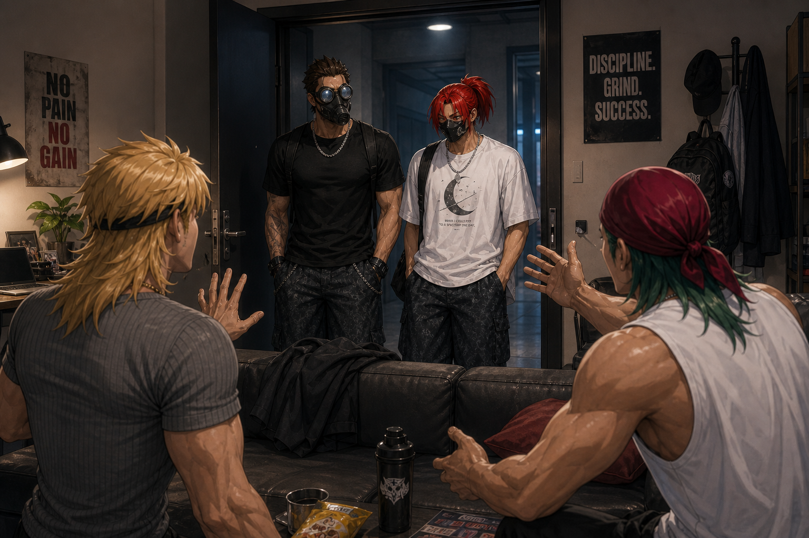
宿舍，夜晚，回來了。
它在，我也在，就這樣。
往前了一點。
明天，再多一點。
DISCIPLINE. GRIND. SUCCESS.
繼續。
舞台背板上，鑽石字體——
REBORN CHAOS
鎖鏈，紅色，工業感的燈架，白色射燈從上方打下來，把整個舞台切成光和影。
台下，紅色螢光棒，手機燈，幾千個人。
這是準혁和세준第一次正式站上打歌舞台。
後台，開場前。
準혁穿著黑色皮革背心，裡面黑T，黑色皮褲上有紅色的撕裂紋路，鎖鏈配件，半指手套，防毒面罩和護目鏡——
還是那副面具，但今天，和舞台服裝放在一起，不是違和，是一部分。
세준穿著白色破損大T，紅色潑墨，黑色背帶褲，鎖鏈，機甲左手今天露在外面——不是遮掩，就是這樣，是整個造型的一部分。面罩換了一個，更貼合舞台的風格，紅色長髮散開來。
兩個人站在側台，看著舞台上還在測試燈光的工作人員。
세준，「……REBORN CHAOS。」
準혁，「嗯。」
세준，「這個名字，是怎麼來的？」
準혁，「NOVA說，我們從遊戲出來，是一種重生。但出來之後，一切都是混亂的——」
세준，「所以是REBORN CHAOS。」
準혁，「嗯。」
세준，「……很準確。」
準혁，「嗯。」
台下的聲音越來越大，螢光棒的紅色光從台邊透進來。
準혁看著那片紅色，想起在某F裡——紅色是警示，是危險，是玩家衝進來的方向。
但現在，紅色是台下的人舉著的燈。
不一樣。
세준，「準혁。」
準혁，「嗯？」
세준，「今天，帶著什麼上去？」
準혁低頭，看了一眼手臂上的刺青，那個X形的標記——
「帶著這個，」他說，「和我自己的答案。」
세준，「你找到答案了？」
準혁，「找到一部分，」他說，「剩下的，上去了再找。」
세준，「嗯，」他看著自己的機甲左手，「我帶著這個，和泳池裡被水托著的感覺。」
準혁，「就夠了。」
세준，「嗯，강혁說就夠了。」
工作人員出現，「準備好了嗎？」
準혁，「嗯。」
세준，「嗯。」
工作人員，「三十秒。」
燈暗了。
台下的聲音，爆炸一樣往上衝——
紅色的螢光棒在黑暗裡，像一片移動的火。
主持人的聲音——
「——請歡迎，REBORN CHAOS——！」
音樂進來。
不是SEVEN WAVES那種，不是暖的、藍色的波浪——
是工業的，是撕裂的，是從廢墟底層頂出來的聲音。
像某F的廢棄戰場，像某B財團大樓的鋼鐵走廊，像兩個從遊戲出來的人，把那些記憶變成了音樂。
準혁走出去，走進燈光裡。
白色射燈打下來，他站在舞台中間，手往護目鏡上一搭——
不是遮住，是確認——還在，我在。
台下的聲音又衝上來一層。
세준跟著走出去，麥克風拿著，機甲左手垂著——
他想起강혁說的，你要去哪裡，身體就去哪裡——
他走到位置上，低頭，麥克風貼近面罩，第一句開口——
聲音從面罩後面出來，低的，從喉嚨底部頂出來的，像財團大樓最深處的那種沉——
然後加速，跟著音樂往上——
台下，紅色螢光棒往上舉，手機燈閃著。
두 사람, 舞台上。
準혁的動作——不是練舞室裡那種在學的動作，是今天，他自己的，帶著X形刺青的手臂，帶著在某F裡走過無數次的步伐，現在變成舞台上的移動。
강혁說的那句話終於在這一刻完全應驗——
忘記用哪塊肌肉，只記得要去哪裡。
他去了，身體跟著去了。
세준的機甲左手，在燈光下反著光——
不是財團大樓的攻擊，不是廢棄工廠的第一拳，不是泳池裡被水托著的重——
是舞台上屬於세준的一部分，和紅色長髮，和面罩，和那件破損的白T一起，成為今晚台下幾千個人會記住的樣子。
副歌，兩個聲音一起——
準혁的聲音比想像的更穩，帶著巡邏兵的那種節拍感，每一個字都踩得準；
세준的聲音是頂出來的，精英守衛的壓迫感變成了音樂的厚度。
兩個聲音，一個穩，一個衝——
放在一起，就是REBORN CHAOS。
最後一段。
舞台上的燈全部打開，白色、紅色，把整個場館染成兩種顏色。
準혁和세준站在舞台中間，最後一個定格——
準혁，手搭在護目鏡上，看著台下。
세준，麥克風拿著，低著頭，紅色長髮在燈光裡，機甲左手垂著。
燈，在這個瞬間，暗了。
黑暗裡，台下的聲音——
沒有停。
側台，태양和강혁站著。
태양，「……」他沒有說話，但眼睛是亮的。
강혁，「嗯。」
태양，「你看到了嗎——」
강혁，「看到了。」
태양，「他們——」
강혁，「嗯。」
태양，「不需要說了，你就說嗯——」
강혁，「嗯。」
태양，「……」他深吸一口氣，「他們站上去了，真的站上去了。」
강혁，「嗯，」강혁說，「我們教的。」
태양，「你說這句話的樣子，很驕傲。」
강혁，「……嗯。」
舞台上，燈重新亮起來，準혁和세준走到台邊，往台下鞠躬。
紅色的螢光棒，全部舉著，不放下來。
準혁站在台邊，看著台下那片紅色——
在某F裡，紅色是危險。
今晚，紅色是這幾千個人，為了他們而舉著的燈。
他把護目鏡往上推了一點——
只是一點，還沒有摘下來，但露出了眼睛的輪廓。
台下，又是一聲炸裂。
세준站在準혁旁邊，麥克風還拿著，往台下看。
機甲左手，今晚第一次在幾千個人面前完全亮著——
不是守衛，不是攻擊，是舞台上세준的左手。
他想起那個問句——
BE THE ONE。
他不確定今晚算不算到了那個地方。
但他在舞台上。
幾千個人，看著他。
這不是遊戲裡的背景，不是財團大樓的守衛位置——
是세준，在這裡。
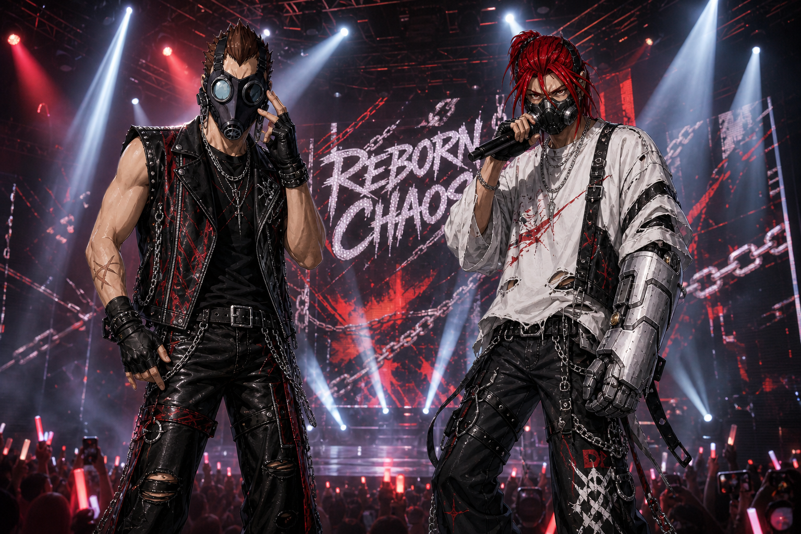
打歌舞台，第一次。
REBORN CHAOS——
從廢墟出來的兩個人， 把那些記憶，變成了音樂。
準혁的X形刺青，在燈光裡。 세준的機甲左手，在燈光裡。
不是遊戲裡的標記， 是舞台上，他們自己的東西。
BE THE ONE.
今晚，他們在那裡了。
SHOW CHAMPION。
背板上——
SHOW CHAMPION 1ST REBORN CHAOS
獎座上的字—— 2024.05.23 REBORN CHAOS 1ST WIN
彩帶從天花板落下來，紅色和銀色，打在兩個人身上。
台下，紅色螢光棒全部舉起來，牌子在人群裡——
REBORN CHAOS！ RC 1위 축하！
準혁拿著獎座。
他不知道自己的表情是什麼——面罩和護目鏡遮著，台下看不見。
但他知道自己的手，握著那個冷的金屬的感覺。
重。
不是機甲手的重，是那種，這個東西是真實的重量。
他看著獎座上的字——
REBORN CHAOS，1ST WIN。
他想起第一天在廢棄工廠，蹲在角落，槍橫放在膝蓋上，什麼都不知道。
然後，세준出現了，打了一架，坐下來。
然後，태양和화성出現了，把手伸進來擋住。
然後，烤肉，泳池，宿舍，NOVA，澀谷，鏡頭，舞台——
現在，這個獎座在手裡。
세준站在準혁旁邊，機甲左手把手指往上指——
不是攻擊，不是守衛——
就是，往上指。
第一。
他的右手也指著上方，兩隻手，一隻是機甲的，一隻是真實的，都指著同一個方向。
他想起財團大樓——他守著那個位置，無限循環，等著被玩家擊殺，然後重生，再守著。
那時候，沒有往上的方向，只有守著的位置。
現在，他指著上面。
BE THE ONE。
麥克風遞過來。
準혁接住，看了看台下那片紅色——
他想說什麼，但他不是太양那種，話是現成的。
他想了一下，開口——
「……我們從一個很遠的地方來。」
台下安靜了一瞬間，然後又是螢光棒的聲音。
準혁繼續，「在那個地方，沒有名字，沒有方向，就是一直重複。」
他停了一下，「出來之後，也是很長一段時間，不知道往哪裡走。」
他看著獎座，「但今天，有了這個。」
他抬起頭，對著台下，「謝謝你們，讓我們知道往哪裡走。」
他把麥克風遞給세준。
세준拿著，看著台下，沉默了幾秒——
台下沒有催，就是等著。
세준，「我的左手，」他說，「一直是攻擊用的。」
台下安靜地聽著。
「出來之後，它打過人，也被水托過，也在鏡頭裡出現過，也在舞台上亮過燈。」他停了一下，「今天，它指著上面。」
他把機甲左手的指頭往上指，「這是第一次，它做一個，不是攻擊的動作，但感覺比任何攻擊都有力。」
台下，螢光棒全部再次舉起來，聲音衝上去。
後台側邊，태양和강혁。
태양眼眶是紅的，但他沒有哭——他用力把眼淚頂回去，「我不哭，我不哭——」
강혁，「你在哭。」
태양，「我沒有！這是……空調太冷——」
강혁，「沒有開空調。」
태양，「……」他深吸一口氣，「강혁。」
강혁，「嗯。」
태양，「我們教出來的。」
강혁，「嗯。」
태양，「他們第一次站上台，我們在側台看，他們第一個一位，我們也在側台——」
강혁，「嗯。」
태양，「你不覺得很感動嗎？」
강혁沉默了一下，「……嗯。」
태양，「你說話可不可以多說幾個字——」
강혁，「很感動。」他說，「我也是。」
태양，「……」他又差點哭出來，「강혁你不要突然說這種話——」
강혁，「你問的。」
舞台上，彩帶還在落。
準혁把獎座舉起來——不是表演用的姿勢，就是自然地舉起來，讓台下看到。
旁邊세준，兩隻手，一機甲一真實，都指著上面。
台下，REBORN CHAOS！ 的聲音，沒有停過。
準혁後來說，他在舞台上的那一刻，想起了철민說的那句話——
活著，所以走。
他不是SEVEN WAVES的人，那句話不是對他說的。
但那句話，在他站在台上的時候，在他心裡轉了一圈。
活著，所以走。
走著走著，走到這裡了。
세준後來說，他在舞台上，機甲左手往上指的那一刻——
他想起廢棄工廠，坐在牆邊，旁邊是準혁，什麼都不確定。
然後想起강혁說的——
需要你們在上面。
他在上面了。
機甲左手，也在上面了。
彩帶，紅色螢光棒，SHOW CHAMPION的字。
兩個人，站在舞台上。
2024.05.23，REBORN CHAOS，1ST WIN。
從廢棄工廠，到這裡。
不是很長，但走完了。
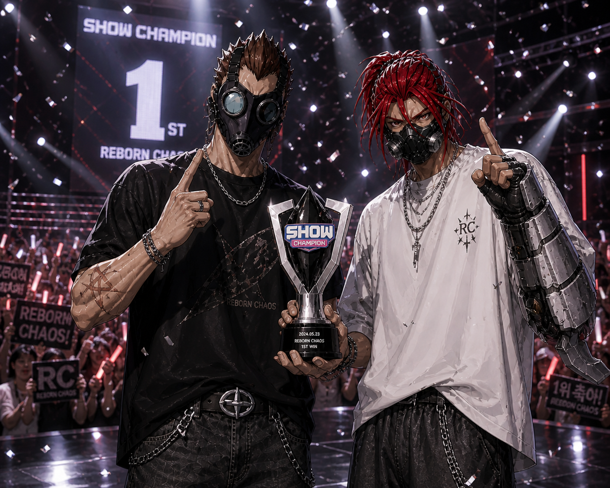
SHOW CHAMPION，第一位。
機甲左手，往上指。
活著，所以走。
走著走著，走到這裡了。
1ST WIN。
這個重量，是真實的。
1위 之後的某一天，早上。
NOVA로 가는 길——往NOVA去的路上。
兩個人，並排走。
黑色RC T恤，白色RC T恤，背包，鎖鏈配件，面具——
胸口，各自有一個小小的RC的字樣。
這條路，走過很多次了。
但今天不一樣。
不一樣的地方，在路邊。
欄杆後面，手機，相機，牌子——
REBORN CHAOS！ RC ♥
人，很多人，不是隨機路過的人，是特地來的人。
準혁第一個感覺到。
不是聽到，是感覺到——那種很多個視線同時落在同一個地方的感覺。
在某F裡，那種感覺代表玩家來了，代表要開始了。
他的身體還是本能地想調整姿勢，想評估威脅——
但他讓那個衝動過去了。
那不是威脅。
那是人，拿著手機，拿著牌子，站在那裡。
為了他們。
세준走在他旁邊，低著頭——
不是迴避，是那種，感覺到了但還在處理的樣子。
機甲左手插在口袋裡，今天沒有完全露出來。
右手也插在口袋裡。
兩個人並排，步伐，一致。
有人喊了一聲——
「準혁！세준！」
準혁沒有停下來，但頭微微往那個方向轉了一下。
那是一個女生，舉著RC的牌子，聲音很大，在欄杆後面。
準혁——往那個方向，點了一下頭。
就這樣，繼續走。
세준，也往那側看了一眼。
鏡頭的快門聲，手機拍照的聲音，人群的聲音，混在一起——
比澀谷那次安靜一點，因為欄杆隔著，因為兩個人只是走路，沒有停，沒有多做什麼。
但那些聲音，還是很大。
準혁走著，想起第一天來這個城市——
廢棄工廠，沒有人，只有準혁自己巡邏，然後세준出現。
그때，沒有人知道他們。
現在，有人特地來站在路邊，舉著RC的牌子。
他想把這個差距在腦子裡算清楚——但算不清楚，因為那個距離，不是用距離能算的。
세준走著，感覺到機甲左手在口袋裡的重量——
今天沒有露出來，是因為走在路上，他選擇把它放在口袋裡。
不是因為藏，是因為他選擇。
這個差別，今天才完全理解。
走到NOVA門口，人群的聲音漸漸被距離隔開了。
門裡面，安靜，和路上不一樣的溫度。
兩個人停在門口，準혁往後看了一眼——
路邊的人還在，欄杆，手機，牌子，RC——
他轉回來，推開門。
進去的瞬間，세준，「準혁。」
準혁，「嗯？」
세준，「剛才那個，」他停了一下，「那些人，是為了我們來的。」
準혁，「嗯。」
세준，「……還是有點不習慣。」
準혁，「嗯，我也是。」
세준，「但——」他想了一下，「不排斥。」
準혁，「嗯。」
走廊裡，강혁從裡面走過來，看到他們兩個，點頭，「來了。」
準혁，「嗯。」
강혁，「外面人多嗎？」
준혁，「還好。」
강혁，「習慣了嗎？」
준혁，「……在習慣。」
강혁，「嗯，」他說，「這樣就好，不需要馬上習慣。」
태양從後面跑出來，「你們！外面有多少人！我剛才從窗口看——好多！RC的牌子超多！」
準혁，「你數了嗎？」
태양，「沒有，但很多——你們有看到嗎？」
세준，「看到了。」
태양，「感覺怎樣？！」
세준想了一下，「……很大。」
태양，「對！就是這種感覺——那個感覺你要記住，因為——」
강혁，「태양。」
태양，「嗯？」
강혁，「讓他們先進來，訓練要開始了。」
태양，「哦對——走走走——」
走廊裡，四個人往訓練室走。
準혁最後，回頭看了一眼門口——
門關著，外面的聲音被隔在那裡。
RC的牌子，手機，人群——
在那裡。
他轉過身，繼續走。
RC。
兩個字母，印在胸口。
在某F裡，手臂上的標記是別人給的，代表他屬於那個組織。
現在胸口的RC，是他自己的——
是REBORN CHAOS，是準혁和세준，是從廢棄工廠走出來的兩個人。
沒有人給他的，是他走出來的。
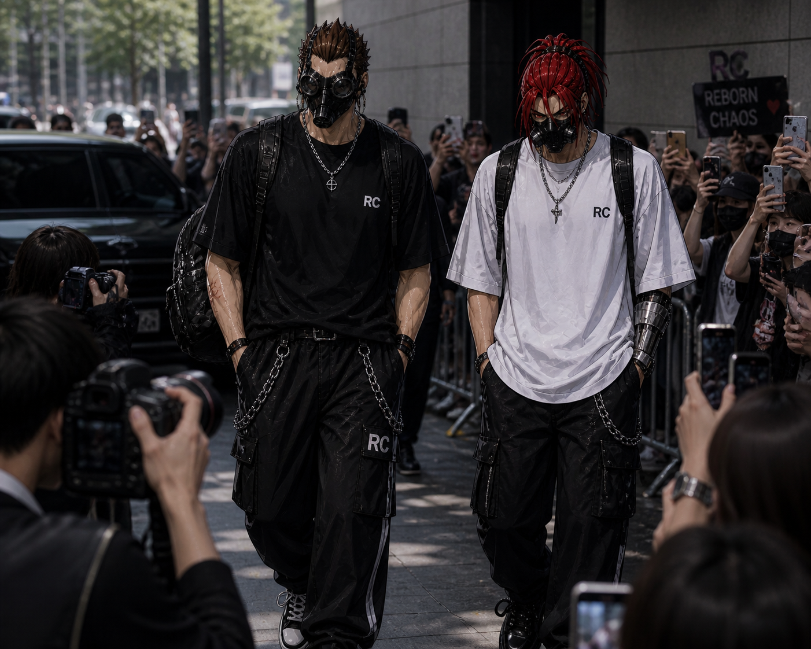
上班路，欄杆外的人群。
RC的牌子，手機，聲音。
不習慣，但不排斥。
在習慣——這樣就好。
胸口的RC， 是走出來的，不是給的。
第一次是第一次。
第二次，是自己的。
舞台背板——REBORN CHAOS，煙霧，鐵架，鍊條，RC的logo從四個角落打出來，地板上的燈把整個舞台染成藍白色。
準혁和세준站在舞台中間，開場前最後一秒。
第一次站上台之前，準혁說的是——
帶著刺青和自己的答案，上去了再找。
第二次，他沒有說什麼。
就是站著，等音樂進來。
因為第二次，不需要跟自己說那麼多話了。
第一次需要說服自己站上去。
第二次，腳已經知道在哪裡了。
音樂進來。
準혁往前走了一步，站到定位，手往腰側放——
黑色外套，RC的字樣，胸口那個星爆圖案，鍊條，面罩護目鏡——
這是他的樣子，在舞台上，就是這個樣子。
세준低著頭，麥克風在手裡，機甲左手垂著——
第一句，從面罩後面出來——
比第一次，更沉，更穩，像是已經在那裡很久的聲音，等著被放出來。
台下，紅色螢光棒。
比第一次，多了一些——
準혁掃了一眼，沒有算，但感覺得出來，多了。
他把視線收回來，往前看，往音樂走。
第一次，他在台上的時候，腦子裡還有很多聲音——
要去哪裡，動作對不對，聲音夠不夠，台下在看什麼——
第二次，那些聲音少了。
不是消失，是退到背景去了。
前面只剩音樂，和세준，和這個舞台。
세준唱到副歌，抬起頭——
第一次，他是低著頭完成大半的表演，因為那樣比較安全，感覺比較可以控制。
第二次，他抬頭了。
看著台下，那片紅色。
不是評估威脅，不是計算距離——
就是看著那些人，那些特地來的人。
機甲左手握著麥克風架的時候，他感覺到那個重量——
不是攻擊的重量，是這首歌的重量，是REBORN CHAOS的重量。
中段，準혁和세준的位置交換——
第一次，那個交換他們練了很多遍，腦子裡在算步數。
第二次，步數不在腦子裡，在腳上。
準혁走過去，세준走過來，兩個人交叉，沒有看對方，但各自知道對方在哪裡。
強혁看到那個瞬間，在側台，沒有說話。
太양，「那個——」
강혁，「嗯，默契。」
태양，「他們第幾次練才練出來的——」
강혁，「記不清了，很多次。」
태양，「但現在看起來，就是自然的。」
강혁，「嗯，這樣才對。」
最後一段。
準혁站在台中，往台下看——
RC的牌子，紅色螢光棒，手機燈——
第一次看到這些，他想到某F裡的紅色警示燈。
第二次，他只看到台下的人。
他們的臉，他看不太清楚，燈光太亮，距離太遠——
但那些臉是真實的，那些手是真實的，那些聲音是真實的。
他在台上，他們在台下——
這個連結，也是真實的。
세준最後一句，麥克風貼近面罩，聲音放到最大——
然後音樂停，他低下頭。
準혁往旁邊踏了半步，和세준並排——
燈，慢慢暗下去。
黑暗裡，台下的聲音——
比第一次，大了一點。
沒有人說話。
就是站在黑暗的舞台上，聽著那個聲音。
최후에，準혁開口，聲音很低——
「第二次。」
세준，「嗯。」
準혁，「和第一次，不一樣。」
세준，「哪裡不一樣？」
準혁，「第一次，我在上面，但一部分的我還在下面。」
세준，「現在呢？」
準혁，「現在，都在上面了。」
세준想了一下，「我也是。」
準혁，「嗯。」
세준，「第一次，機甲手往上指，是因為第一位，是一個動作。」
準혁，「今天呢？」
세준，「今天，是因為，它本來就應該往這個方向。」
燈重新亮起來，台下的聲音又衝上去——
兩個人，往台邊走，鞠躬。
RC的logo在舞台四周還亮著，煙霧還在地板上飄，鍊條在燈光下反著光。
側台，태양，「……강혁。」
강혁，「嗯。」
태양，「你說第一次站上台，和之後不一樣。」
강혁，「嗯。」
태양，「哪裡不一樣？」
강혁，「第一次，你站上去。之後，你屬於那裡。」
태양，「……他們現在屬於那裡了嗎？」
강혁看著台上兩個人，「差不多了。」
태양，「差一點點？」
강혁，「每一次上去，都更多一點。」
태양，「所以要一直站上去。」
강혁，「嗯。」
準혁和세준走回側台，從燈光裡走出來，走進暗的地方。
강혁，「怎樣？」
準혁，「可以。」
강혁，「哪裡可以修？」
準혁想了一下，「第二段，左腳換重心的時候慢了。」
강혁，「嗯，我看到了，明天修。」
세준，「我的第三句，呼吸不夠穩。」
강혁，「嗯，長音的時候要先想好換氣點。」
세준，「嗯。」
태양，「你們怎麼這麼專業，剛下台——」
準혁，「因為還可以更好。」
태양，「……」他停了一下，「準혁，你現在說話，越來越像강혁了。」
강혁，「嗯。」
準혁，「……」
태양，「강혁你不要嗯得這麼理所當然——」
四個人往後台走，舞台的燈光漸漸被走廊的燈取代。
台下的聲音，從走廊的盡頭還能聽到——
遠的，但在。
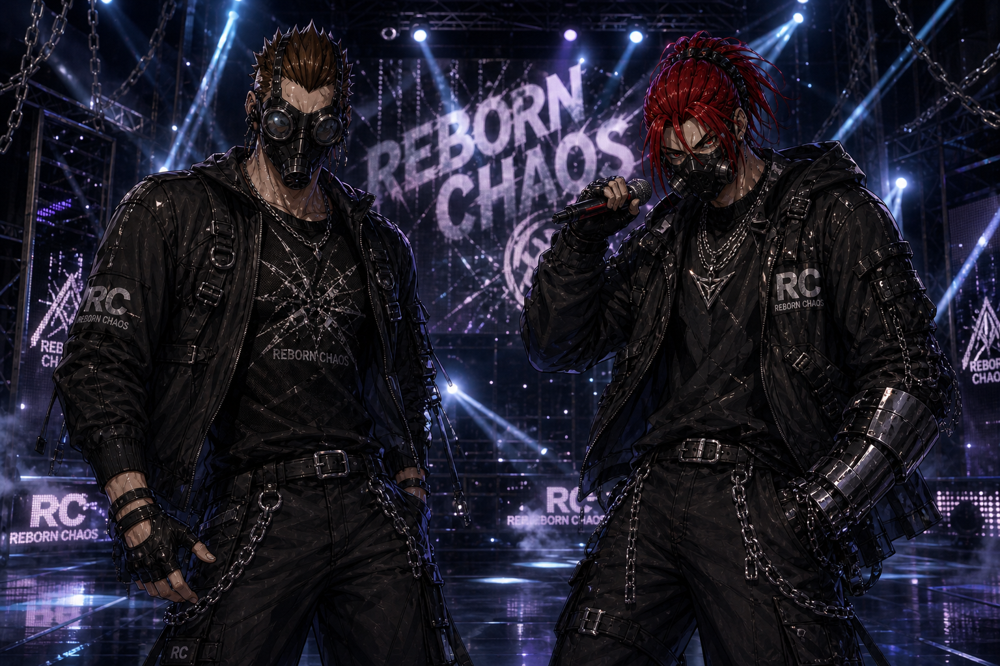
第二次舞台。
第一次，站上去。 之後，屬於那裡。
都在上面了。
機甲左手，本來就應該往這個方向。
每一次上去，都更多一點。
——繼續。
下班路。
雨。
不是大雨，是那種連綿的雨，沒有傘，因為出門的時候沒有下——
兩個人就這樣走著，濕的。
RC的黑色T恤，濕透了，貼著背。
準혁的防毒面罩和護目鏡，雨水在鏡片上聚成水珠，然後往下滑。
세준的紅色長髮紮著，雨打濕了，幾縷貼在面罩旁邊，機甲左手在雨裡，水珠打在金屬上，往下流。
兩個人，沒有說話。
上班路，有時候說話，有時候不說——
下班路，今天，不說話。
不是因為有什麼，是今天練了很長的時間，身體和腦子都靜下來了，就是走著。
雨水打在地板上，路燈把積水染成橘黃色。
城市的燈火在遠處，模糊的，被雨打得有點散。
偶爾一輛車開過去，水從輪子旁邊濺出來，兩個人各自往旁邊讓了一步，沒有說話，繼續走。
準혁看著地板，雨水從面罩的邊緣往下流——
他想起某F的雨天關卡。
那個遊戲裡有雨天，地圖變暗，視野縮短，玩家更難發現小怪，小怪也更難發現玩家——
他在那個地圖裡被擊殺了很多次，然後重生，然後繼續。
現在，也是雨，也是這樣走著——
但沒有玩家，沒有威脅，沒有重生點。
就是雨，就是地板，就是前面的路。
세준低著頭，看著自己機甲左手上的雨水——
水珠在金屬關節的縫隙裡聚集，然後流下去。
他想，第一次下水是在泳池，태양把他帶進去，水托著機甲手，重，但沒有沉。
現在是雨，打在上面，往下流。
水，不管是哪種，都在。
他沒有特別想什麼，就是看著那些水珠，繼續走。
走到一半，準혁，「你的頭髮濕了。」
세준，「嗯。」
準혁，「你的面罩也濕了。」
세준，「嗯。」
準혁，「我的護目鏡積水了。」
세준，「嗯。」
準혁，「……你就只會說嗯嗎？」
세준，「今天說話說夠了。」
準혁想了一下，「嗯。」
又是安靜。
但是並排走著的安靜，有人在旁邊的安靜——
和在廢棄工廠第一天，各自靠著牆坐著的安靜，不一樣。
那時候的安靜是，不知道對方是誰，不知道要不要說話。
現在的安靜是，知道對方在，不需要說話也可以。
雨還在下，路燈還亮著。
城市的燈火模糊，積水裡有它們的倒影，被走路的腳步攪碎，又重新聚回來。
準혁的手臂上，刺青在雨裡，那個X形的標記，濕的，但清楚——
他沒有特別去看，就是知道它在那裡。
它在，我也在。
他上次這樣想，是在那次拍照之後。
今天又想了一遍，不是因為有什麼觸動，是因為走在雨裡，這句話就出來了。
習慣了。
세준，「準혁。」
準혁，「嗯？」
세준，「今天第二段，你說左腳換重心慢了。」
準혁，「嗯。」
세준，「我注意到了，但我沒說。」
準혁，「為什麼沒說？」
세준，「因為你自己知道。」
準혁，「……嗯。」
세준，「但今天整體，比上次好。」
準혁，「你怎麼評估的？」
세준，「感覺。」
準혁，「感覺不準確。」
세준，「但感覺是對的。」
準혁，「……嗯。」
走到宿舍樓下，兩個人停在門口，門簷下，雨打不進來。
準혁把護目鏡上的水珠抹了一下，沒有完全抹掉，但好一點。
세준把頭髮往後撥，濕的，貼著頭，紅色在路燈的橘黃光裡，很深。
準혁，「進去了。」
세준，「嗯。」
두 사람은 움직이지 않았다——兩個人沒有動。
就這樣站在門簷下，看著外面還在下的雨。
不是不想進去，就是，再站一下。
雨打在地板上，積水在路燈下反光，偶爾一個路人撐著傘走過去——
城市的聲音，車聲，雨聲，遠處的什麼聲音，都在。
準혁，「第一天，我在那個倉庫裡，窗外也在下雨。」
세준，「我不知道，我是後來才到的。」
準혁，「嗯，後來你到了，打了一架。」
세준，「嗯。」
準혁，「那天，也是濕的。」
세준，「工廠裡沒有雨。」
準혁，「但空氣是濕的，廢棄工廠都這樣。」
세준，「……嗯，是。」
準혁，「從那天到現在，」他說，「走了很遠。」
세준，「嗯。」
準혁，「你說過，有明天就是有明天。」
세준，「嗯，我說的。」
準혁，「現在，每天都有明天。」
세준，「嗯。」
준혁，「……夠了。」
세준，「嗯，夠了。」
두 사람은 동시에 문을 밀었다——兩個人同時推開門，走進去。
門關上，雨聲被隔在外面。
走廊裡，暖的，乾的，燈是黃的。
準혁往自己房間走，在走廊轉角，停了一下，回頭——
세준還在門口，把濕的外套脫下來，掛在旁邊。
準혁，「明天幾點？」
세준，「九點。」
準혁，「嗯。」他轉回去，繼續走，「晚安。」
세준，「……嗯，晚安。」
房間裡，準혁把背包放下，坐到床邊。
RC的T恤還是濕的，他換了一件乾的，把濕的掛著。
坐回床上，往窗外看——
雨還在下，路燈的橘黃光在積水裡搖著。
他看了一會，閉上眼睛。
防毒面罩還戴著。
但他閉上了眼睛。
明天，還有明天——
這樣就好。
隔壁，세준躺著，看著天花板。
機甲左手放在旁邊，頭盔摘了，面罩還在。
他想著今天那句話——
每天都有明天。
然後想著廢棄工廠，想著第一天，想著打了一架之後各自靠著牆坐著——
那時候，不知道有沒有明天。
現在知道了。
機甲左手在床邊放著，雨水還沒完全乾，在金屬上留著痕跡。
他閉上眼睛。
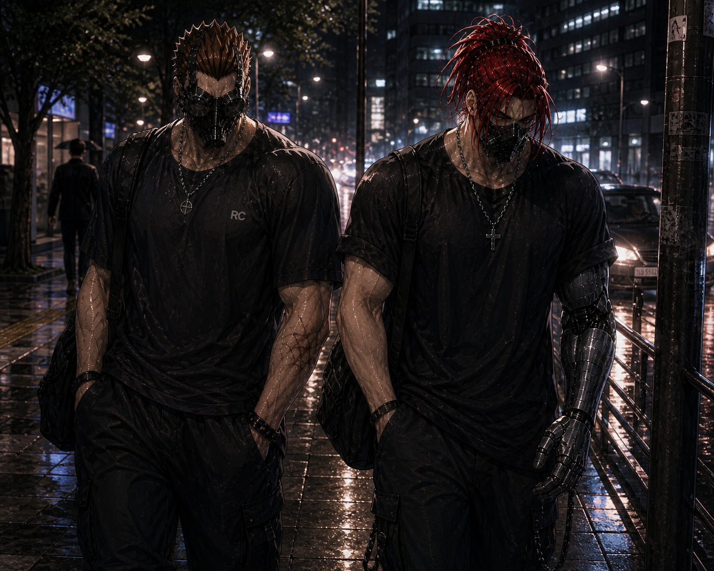
下班路，雨。
沒有傘，走回來。
它在，我也在。
每天都有明天——
這樣就好。
隔天。
沒有行程。
NOVA的訓練師傳訊息說今天休息，明天繼續。
準혁看著那條訊息，看了很久。
在某F裡，沒有休息這個概念——就是巡邏，被擊殺，重生，巡邏，被擊殺，重生。
沒有「今天不用做什麼」的日子。
他把手機放下來，往天花板看。
牆上，RC的海報——RC RESTRICTED COMPLEX。
窗外，城市，陽光從百葉窗的縫隙打進來，切成一條一條。
桌上，Monster的罐子，零食袋，鍵盤，耳機，RC的毛巾——
就是這樣，什麼都有，但今天什麼都不需要做。
세준坐在準혁旁邊。
他的手放在腦後，機甲左手擱在沙發扶手上，眼睛閉著——
不是睡著，是那種，讓眼睛休息，但腦子還開著的狀態。
兩個人，各自佔著沙發的一側，腿都伸直了，腳差不多到桌子旁邊。
RC的白襪，RC的字樣——
準혁看著自己腳上那個RC，想了一下，又拿起手機，繼續滑。
他不知道自己在滑什麼，就是滑——
太양說過，「手機這個東西，不需要目的，就是滑，有時候就看到有趣的東西。」
準혁試著用這個邏輯，但滑了一會，還是不太確定有趣是什麼感覺。
세준，「準혁。」
準혁，「嗯？」
세준，「你在幹嘛？」
準혁，「滑手機。」
세준，「看到什麼了嗎？」
準혁，「不知道。」
세준，「……那你在看什麼？」
準혁，「我也不知道。」
세준，「……嗯。」
沉默。
세준，「那我也拿一下手機。」
準혁，「嗯。」
두 사람이 각자 핸드폰을 들었다——兩個人各自拿著手機。
沒有說話，就是這樣。
桌上的Monster罐子，準혁剛才喝了一半，放在那裡。
零食袋開著，不知道是昨天還是今天打開的。
耳機放著，沒有戴，鍵盤也放著，沒有人碰。
準혁滑到一半，「세준。」
세준，「嗯？」
準혁，「你在遊戲裡，有沒有無聊的時候？」
세준，「遊戲裡沒有無聊，就是任務和守衛。」
準혁，「嗯，我也是，巡邏路線就那幾條，沒有空間無聊。」
세준，「所以現在是什麼感覺？」
準혁，「現在，」他想了一下，「有點不知道要做什麼，但不難受。」
세준，「嗯，我也是。」
準혁，「太양說這個叫放鬆。」
세준，「嗯，화성說過類似的。」
準혁，「你覺得這個是放鬆嗎？」
세준，「……還在確認。」
準혁，「嗯。我也是。」
又是安靜。
窗外，偶爾有車聲，偶爾有鳥聲——
城市的聲音，平常的那種，不是舞台，不是訓練室，不是澀谷的人群——
就是普通的城市聲音，早上的。
세준把手機放下，手放回腦後，看著天花板。
「準혁。」
準혁，「嗯？」
세준，「你說，它在，我也在。」
準혁，「嗯。」
세준，「現在，我在沙發上，什麼都不做，也算在嗎？」
準혁，「算。」
세준，「遊戲裡，什麼都不做的時候，就是等待被擊殺。」
準혁，「嗯，我也是。」
세준，「但現在，什麼都不做，就是什麼都不做。」
準혁，「嗯。」
세준，「……這個，也是一種在。」
準혁，「嗯。」
準혁把手機放下，也往後靠，看著天花板——
天花板沒什麼特別的，就是天花板。
但他看著看著，想到了廢棄工廠第一天，靠著牆坐著，那時候也是看著上方，看著破碎的天窗和光。
那時候，不知道接下來要怎樣。
現在，也不知道今天要做什麼——但不一樣，因為不知道的方向不一樣了。
那時候是不知道往哪走。
現在是不知道今天想做什麼，但明天知道——明天繼續。
세준，「你在想什麼？」
準혁，「在想廢棄工廠。」
세준，「哪個部分？」
準혁，「靠著牆坐的那個部分。」
세준，「我也想過。」
準혁，「什麼感覺？」
세준，「……遠了。」他停了一下，「不是說忘了，是感覺，那個地方，遠了。」
準혁，「嗯，我也是。」
세준，「但有時候還是會想起來。」
準혁，「嗯，我也是。」
세준，「……想起來，也沒關係吧。」
準혁，「沒關係，它在那裡，我也在這裡。」
세준，「嗯。」
桌上，Monster罐子，零食，鍵盤，耳機。
牆上，RC的海報。
窗外，陽光，城市。
沙發上，兩個人，各自靠著，什麼都不做。
沉默了很久之後，準혁，「餓了。」
세준，「嗯，我也是。」
準혁，「要叫外賣嗎？」
세준，「嗯。」
準혁，「你決定。」
세준，「……갈비？」
準혁，「好。」
세준，「你叫嗎？」
準혁，「你叫，你有手機。」
세준，「你也有手機。」
準혁，「你更熟。」
세준，「……」他拿起手機，研究了一下外賣APP，「你要加김치嗎？」
準혁，「要。」
세준，「好。」
외賣叫了，兩個人繼續躺著等。
窗外的陽光往房間裡移了一點，光線的角度變了，代表時間過了一些。
準혁，「今天什麼都沒有做。」
세준，「嗯。」
準혁，「但也沒有不好。」
세준，「嗯。」
準혁，「……這樣也算一天。」
세준，「嗯，算。」
外賣的通知傳來，두 사람이 일어났다——兩個人站起來。
沙發上留著兩個人躺過的痕跡，Monster罐子，零食袋，RC的毛巾——
就這樣在那裡。
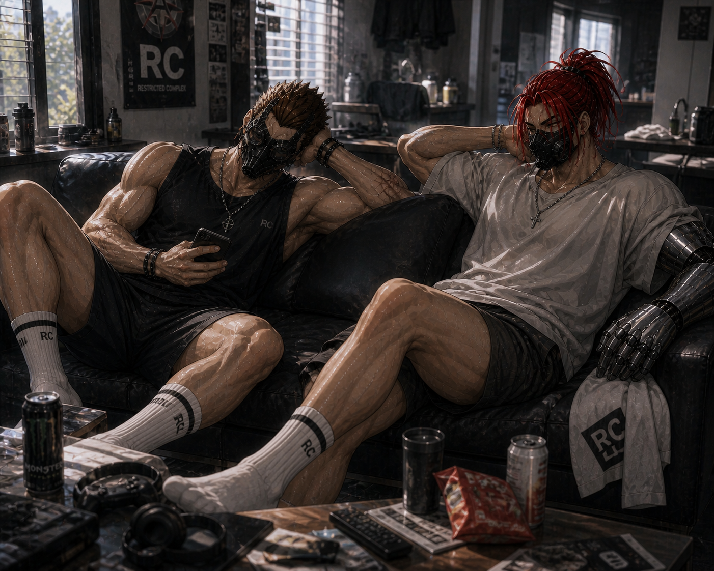
什麼都不做的早上。
它在，我也在——
什麼都不做，也是一種在。
遠了，但沒有忘。
想起來，也沒關係。
갈비叫了，等著。
這樣，也算一天。
갈비吃完，外賣的袋子還在桌上。
두 사람은 소파에 앉아 있었다——兩個人坐在沙發上，沒有動。
準혁，「還是什麼都不做？」
세준，「嗯。」
準혁，「……」他看著窗外，陽光還很好，「出去跑步？」
세준，「跑步？」
準혁，「嗯，某F裡巡邏的時候，身體習慣移動，今天太靜了。」
세준，「我也是，財團大樓裡，也是一直在動。」
準혁，「那去跑。」
세준，「嗯。」
兩個人站起來。
NOVA附近有一個田徑場，開放給周邊使用，紅色跑道，藍天，有幾棵樹在外圍。
準혁和세준換上RC的運動服——黑色短褲，RC的字樣，세준的RC白T，準혁的RC黑T——
走出去，走到跑道旁邊，準혁往前看了一眼，「幾圈？」
세준，「不知道，跑到想停為止。」
準혁，「嗯。」
兩個人踏上跑道，開始跑。
跑了兩圈，聽到後面有腳步聲——
不是陌生人的腳步，是準혁認識的節拍——
太양的步伐，比他們快一點，帶著一種衝勁，是那種跑步很開心的人的速度。
準혁沒有回頭，但耳朵在聽。
세준也感覺到了，往旁邊看——
태양跑上來，NOVA的灰色運動服，胸口有NOVA的星形logo，紅頭巾，綠髮——
他看到準혁和세준，眼睛亮了，「你們也在這裡？！」
準혁，「嗯。」
세준，「嗯。」
태양，「太好了，一起跑——」他自然地跑到세준旁邊，步調跟上來，「今天怎麼來這裡跑步？」
準혁，「身體靜太久了。」
태양，「我懂！我也是，NOVA今天沒有行程，但我待在宿舍待不住，就跑出來了——」
세준，「你一個人跑？」
태양，「對，강혁說他不去，화성說之後，就我先跑——沒想到遇到你們！」
三個人，跑道上。
準혁在左，세준在中，태양在右——
三個人的步調不完全一樣，太양快一點，準혁穩，세준介於兩者之間——
但跑在一起，有一種自然的節拍。
跑了一圈，태양，「準혁，你跑步的樣子很穩。」
準혁，「在某F裡，巡邏路線很長，練出來的。」
태양，「原來遊戲裡還有這種訓練——我們的遊戲比較不一樣，我是跳舞型的小怪，主要是動作，不是跑步。」
準혁，「你們遊戲裡有跳舞的小怪？」
태양，「有！那個遊戲裡有很多種，我的類型就是這樣——現在想起來，我後來去學跳舞，可能是因為那個。」
세준，「遊戲裡的東西，帶到這裡來了。」
태양，「對，你的機甲手也是——」他看了看세준的機甲左手在跑步的時候如何帶動節奏，「你跑步的時候，那隻手怎麼用？」
세준，「右手正常擺，左手跟著節拍，但因為重，擺幅小一點。」
태양，「你自己研究出來的？」
세준，「嗯，第一次跑的時候不知道，跑幾次之後身體自己找到方式了。」
태양，「這個就是你說的，身體自己知道。」
세준，「嗯。」
再跑一圈，태양，「你們今天除了吃갈비還做了什麼？」
準혁，「……滑手機。」
태양，「就這樣？」
準혁，「嗯。」
태양，「你們沒有覺得無聊嗎？」
準혁，「有。」
태양，「那怎麼辦？」
準혁，「繼續滑。」
태양，「……」他看向세준，「세준은？」
세준，「我閉眼睛。」
태양，「睡著了嗎？」
세준，「沒有，就是閉著。」
태양，「閉著想什麼？」
세준，「什麼都想，什麼都沒想。」
태양，「……你們兩個的休息方式，很獨特。」
準혁，「你的呢？」
태양，「我跑步啊，」他比了比前方的跑道，「跑步的時候，腦子空的，但身體在動，這樣最好。」
準혁，「這樣也是休息？」
태양，「是！跑步是我的休息方式。」
準혁，「……嗯，我懂了。」
태양，「你懂什麼？」
準혁，「今天下午，我也覺得跑步比較好，所以出來了。」
태양，「對！所以我們是一樣的！」
세준，「你們兩個，都是靜不下來的類型。」
태양，「你也跑出來了——」
세준，「我是跟著他的。」
태양，「所以你是被帶出來的靜不下來型！」
세준，「……這個分類不準確。」
태양笑了，在跑道上笑，步伐沒有亂，「你說話越來越有자신만의 말투——越來越有自己的語氣了。」
세준，「……嗯。」
三個人繼續跑，天空是藍的，幾朵雲，遠處是城市的樓，跑道是紅色的，腳步聲在那上面迴響。
準혁看著前方的跑道，一條筆直的，然後彎，然後再直——
在某F裡，巡邏路線也是固定的，直線，轉彎，再直線，沒有終點，只有重生。
這條跑道，也是環的——但不一樣，因為他選擇跑幾圈。
不是程式決定，是他決定。
태양，「再跑幾圈？」
準혁，「你決定。」
태양，「我可以跑到天黑——」
세준，「我不行。」
태양，「那跑到세준累為止。」
세준，「我不知道什麼時候會累。」
태양，「那就跑到準혁說停為止。」
準혁，「那可能跑很久。」
태양，「那就跑到有人說要吃東西為止！」
세준，「……剛才吃了갈비。」
태양，「갈비消化了——」
準혁，「消化了嗎？」
태양，「我消化了！你們呢？」
세준，「……可能還沒有。」
태양，「那繼續跑，等消化了告訴我——」
三個人，繼續跑。
跑道上，紅色，腳步聲，陽光，偶爾태양說一句話，準혁或세준回一句——
沒有目的，沒有幾圈的規定，就是跑著。
準혁的手臂上，刺青跟著步伐移動，那個X形的標記，在陽光下很清楚——
他沒有特別去想它，就是跑著，它在那裡，他也在跑道上。
세준的機甲左手，小幅度地擺著，找到了自己的節奏——
不是攻擊，不是守衛，就是跑步時候的節奏。
태양在旁邊，笑著，跑著，偶爾說話，偶爾哼兩句什麼——
陽光很好，城市很遠，跑道是紅色的。
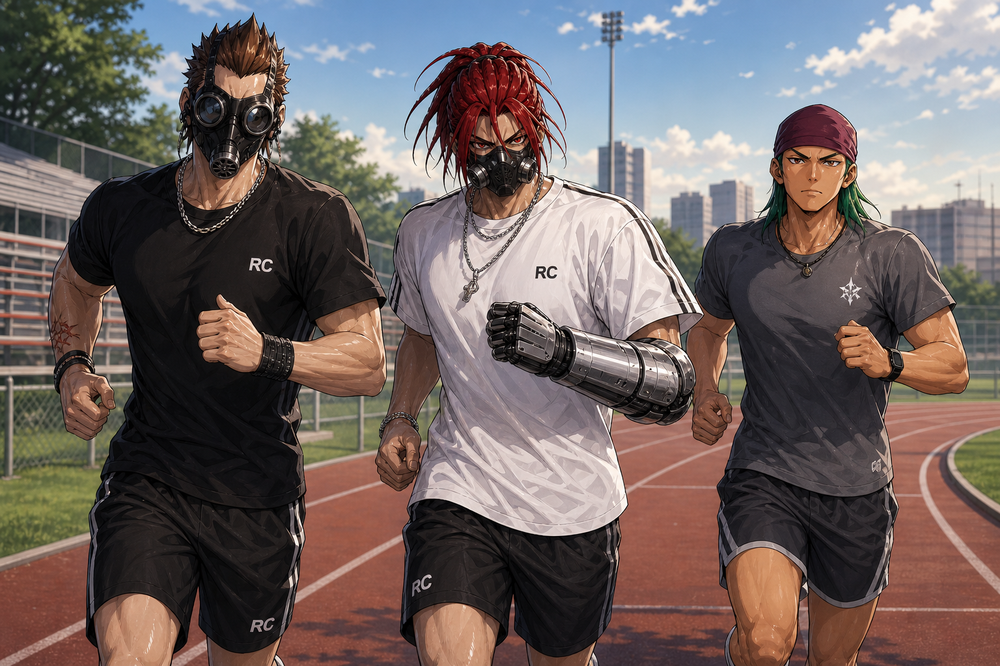
跑道上，三個人。
身體靜太久了，就跑出來。
遇到태양，一起跑。
不是程式決定，是自己決定。
跑到有人說要吃東西為止——
繼續跑。
跑道旁邊的長椅。
不知道跑了幾圈，太양說停，因為他看到長椅旁邊有自動販賣機。
「等一下，」他說，跑過去，硬幣投進去，取出三瓶水——RC的水瓶，是他自己帶來的，裝了水，放在包裡。
準혁和세준坐在長椅上，毛巾搭著，汗還沒乾。
RC的球包放在椅子旁邊，地上。
태양走回來，把水瓶遞給세준——
세준的機甲左手接住，右手拿著，擰開，喝了一口。
태양再把另一瓶遞給準혁——
準혁接住，放在腿上，沒有立刻喝，先把毛巾往臉上壓了一下——
面罩和護目鏡都在，毛巾擦不到臉，就是放在上面，悶著，讓臉的熱度散一散。
然後拿起水瓶，把面罩稍微拉開，喝了一口，放下。
태양自己也坐下來，在세준旁邊——
不是長椅，長椅只有兩個位置，準혁和세준坐著，태양就站著，面向他們，手裡拿著自己的水瓶，喝了一大口。
「跑了幾圈？」태양問。
準혁，「不知道。」
태양，「我也忘了數，但跑得很舒服。」
세준，「嗯。」
三個人，靜了一會。
跑道上偶爾有其他人跑過去，但不多——今天平日，這裡人少。
風吹過來，把汗帶走一點，涼的，剛好。
태양，「準혁，你的刺青，」他看著準혁手臂上的X形標記，「跑步的時候，它跟著動。」
準혁，「嗯。」
태양，「你現在，怎麼看它？」
準혁低頭，看了一眼，「以前說不知道，然後說它在，我也在。」
태양，「現在呢？」
準혁，「……現在，」他想了一下，「它是我跑過來的記號。」
태양，「跑過來的記號？」
準혁，「從某F出來，從廢棄工廠，從宿舍，從NOVA，從舞台——每一段路，都有它在。所以它是記號，記著我走過哪裡。」
태양沒有說話，就是看著那個刺青。
然後，「嗯，這樣很好。」
準혁，「嗯。」
태양看向세준，「세준，你的手，」他看著機甲左手握著水瓶，「現在怎麼感覺？」
세준，「什麼怎麼感覺？」
태양，「就是，現在拿著水瓶，跑完步，坐在跑道旁邊——這隻手，現在是什麼感覺？」
세준低頭，看著機甲左手——
水瓶在指尖，金屬的關節，在陽光下反著光。
「……習慣了，」他說，「不是說它變輕了，它還是一樣重，但——」他想了一下，「它是我的重，不是別的什麼的重。」
태양，「你說『我的重』。」
세준，「嗯，是我的。不是財團大樓的守衛的，不是某B遊戲設定的，是세준的。」
태양，「……」他沉默了一下，看著那隻機甲手，「你想通了。」
세준，「想通了一件事。」
태양，「哪件事？」
세준，「我帶著它走到這裡，所以它也屬於這裡的故事，不只是遊戲的故事。」
風再吹過來，跑道上的紅色在陽光下很鮮，遠處是城市的樓，天空是藍的，幾朵雲。
태양把水瓶蓋上，「你們兩個，」他說，「今天想通了很多。」
準혁，「昨天什麼都沒做，今天想通了，可能有關係。」
태양，「休息是為了想通事情？」
準혁，「不是刻意的，就是發生了。」
태양，「화성說過類似的，他說有時候什麼都不做，反而會清楚一些東西。」
세준，「화성說話越來越多了。」
태양，「對！你有沒有發現，他以前更少說話的——」
準혁，「現在還是很少。」
태양，「是，但比以前多，而且說的每一句都很準。」
세준，「嗯，他說的，我都記得。」
태양，「哪句？」
세준，「意義可以變，但它還是你的。」
태양，「……他說這個給你聽了？」
세준，「嗯，第一次在泳池裡。」
태양，「화성啊，」태양笑了，「他就是這樣，說一句，讓你記很久。」
準혁喝了最後一口水，把水瓶放到球包旁邊——
RC的球包，RC REBORN CHAOS的字樣。
他看著那個字樣，「태양。」
태양，「嗯？」
準혁，「我們出道之前，你怎麼知道我們準備好了？」
태양，「我不知道。」
準혁，「那你為什麼讓我們上台？」
태양，「因為강혁說可以了。」
準혁，「강혁說可以，就可以？」
태양，「강혁這個人，他說可以，就是真的可以。他不說安慰的話。」
準혁，「……嗯。」
태양，「而且，」태양繼續說，「不是準備好了才上台，是上台了才知道自己準備好了。」
準혁，「這兩個順序不一樣。」
태양，「對，很不一樣。」
準혁，「我們是第二種。」
태양，「嗯，我們也是。」他指了指自己，「SEVEN WAVES，第一次上台，也不是準備好了才上的。」
세준，「那是怎麼上去的？」
태양，「因為沒有退路，也因為想試試看。」他停了一下，「你們也是吧？」
準혁，「……嗯。」
세준，「嗯。」
태양站起來，「再跑一圈？」
準혁，「嗯。」
세준，「嗯。」
三個人把水瓶收好，毛巾搭著，走回跑道——
RC的字樣在三個人身上，각자의 위치——各自的位置。
踏上跑道，太양，「準혁，세준。」
兩個人，「嗯？」
태양，「今天，很好。」
準혁，「跑步很好。」
태양，「不只是跑步。」
세준，「嗯，知道。」
태양，「你們知道就好。」
三個人，跑道上，再次跑起來。
陽光，紅色的跑道，風，RC的字樣在背後和胸口。
準혁的刺青跟著步伐移動——跑過來的記號。
세준的機甲左手帶著節拍——我的重。
태양在旁邊，跑著，笑著。
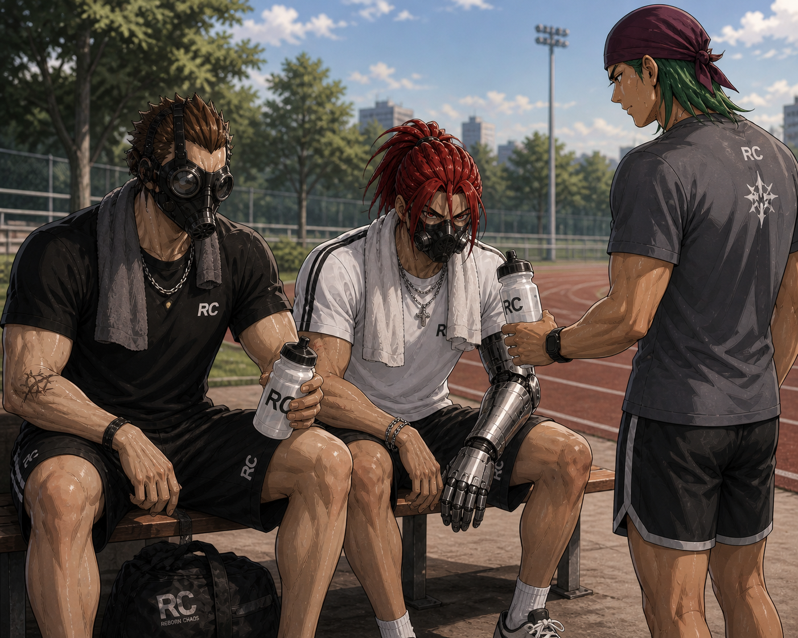
跑道旁的長椅，太양遞水。
跑過來的記號。
我的重，不是別的什麼的重。
不是準備好了才上台——
是上台了，才知道準備好了。
再跑一圈。
跑完步，태양說要回宿舍，準혁和세준說再去吃東西。
태양，「你們갈비吃完又要吃？」
세준，「跑了這麼多，消化完了。」
태양，「……說得有道理，我也餓了，但我要回去——강혁在等——」
準혁，「你去吧。」
태양，「你們自己去沒問題嗎？」
세준，「上次我們在澀谷自己逛，你也問過。」
태양，「……對，好，去吧，傳訊息給我。」
準혁，「嗯。」
태양跑走了，兩個人往另一個方向走。
韓式烤肉店。
不是上次那家，是新的一家，門口掛著手寫的招牌——
맛있는 녀석들
準혁，「這個字怎麼唸？」
세준，「맛있는 녀석들。」
準혁，「意思是？」
세준，「好吃的傢伙們。」
準혁，「……店名叫好吃的傢伙們？」
세준，「嗯。」
準혁，「……進去。」
裡面是那種舊的，暖的，木頭桌子，牆上貼著手寫菜單——
삼겹살 16,000 목살 16,000 항정살 17,000 가브리살 17,000 된장찌개 4,000 김치찌개 4,000 공기밥 1,000 소주 5,000 맥주 5,000 음료수 2,000
旁邊牆上有一張照片和一個招牌，字是韓文，準혁不認識，但看起來是這家店的什麼歷史。
兩個人坐下來，桌上已經有烤架了，木炭的那種，煙往上飄。
服務員過來，準혁看著菜單，「항정살是什麼？」
세준，「豬頸肉，比삼겹살更有嚼勁。」
準혁，「你怎麼知道？」
세준，「화성說過。」
準혁，「화성什麼時候說這個的？」
세준，「上次吃烤肉，화성在翻菜單，我在旁邊。」
準혁，「……你記得很清楚。」
세준，「值得記的東西，我都記得。」
點了항정살和삼겹살，加了김치찌개，一碗白飯。
서비스로 소주 한 병——服務員帶來一瓶소주，說送的。
準혁看著那瓶綠色的，「這個是什麼？」
세준，「소주，酒。我們不喝。」
準혁，「嗯，放著。」
肉上架了，油花在木炭上滋滋作響，煙往上，有香味。
準혁把面罩拉開一點，拿起筷子，夾了一塊삼겹살放進嘴裡——
嚼了幾下，「和갈비不一樣。」
세준，「嗯，삼겹살是五花肉，沒有醃料，本來的味道。」
準혁，「본来的味道，直接的。」
세준，「嗯。」
세준夾了一塊항정살，放進嘴裡，嚼了很久——
比삼겹살硬，但越嚼越有味道，肉的甜味往後出來。
「……嗯，」他說，「화성說的是對的。」
準혁，「什麼感覺？」
세준，「要花時間，但值得。」
準혁，「嗯，像有些事情。」
세준，「嗯，像有些事情。」
兩個人都明白這句話在說什麼，沒有解釋。
김치찌개煮著，紅色的湯在小鍋裡滾，準혁舀了一勺，喝了一口——
燙，辣，酸，全部在一起。
他停了一下，再喝一勺。
「這個，」他說，「很衝。」
세준，「嗯，김치찌개就是這樣，不是細膩的東西，直接的。」
準혁，「直接的，我喜歡。」
세준，「嗯，你本來就是直接的人。」
準혁，「你也是。」
세준，「……嗯，可能。」
吃到一半，準혁看著自己手臂上的刺青——那個X形的標記，在烤肉店的暖光裡，橘黃色的。
他想起第一次來烤肉店的時候，화성說——
意義可以變，但它還是你的。
今天跑步的時候，他自己說——
它是我跑過來的記號。
他看著那個標記，想，從화성說那句話，到今天他自己說出來，中間走了多少路——
說不清楚，但走了。
세준，「準혁。」
準혁，「嗯？」
세준，「你知道我的T恤上面寫什麼嗎？」
準혁，「WHEN I COULD FLY TO A SPACESHIP ONE DAY。」
세준，「對，你知道意思嗎？」
準혁，「大概是，有一天，我能飛到太空船那裡。」
세준，「嗯，這件T恤是出來之後找到的，我穿上就沒有換過。」
準혁，「為什麼選這件？」
세준，「因為，財團大樓裡沒有窗，沒有天空，沒有任何往上看的東西。」他低頭看著胸口的字，「但這件衣服說，有一天，可以飛到更遠的地方。」
準혁，「……嗯。」
세준，「所以我穿著它，就記得，有一天，還可以更遠。」
桌上，肉還在烤，김치찌개還在滾，白飯的碗，小菜一圈——
牆上那個招牌，맛있는 녀석들。
準혁，「好吃的傢伙們。」
세준，「嗯。」
準혁，「我們算嗎？」
세준，「什麼算？」
準혁，「好吃的傢伙們。」
세준，「……我們是來吃的，不是好吃的。」
準혁，「我是說這個店名，形容我們。」
세준，「……」他想了一下，「你覺得我們是好吃的傢伙嗎？」
準혁，「不知道，但我們是有故事的傢伙。」
세준，「……嗯，這樣說也行。」
準혁夾了最後幾塊肉，分給세준一半——
세준接住，放到面罩下，吃了。
桌上的소주還原封不動，兩個空水杯，幾個空掉的小菜碗，김치찌개的鍋底剩一點湯。
準혁，「下次再來。」
세준，「嗯，下次試其他的。」
準혁，「什麼其他的？」
세준，「목살，가브리살，還沒吃過。」
準혁，「你記了菜單？」
세준，「嗯，進來的時候看了。」
準혁，「……嗯，下次再來。」
兩個人結帳，走出去。
夜風，城市的燈，路上的人——
準혁，「跑步，吃飯，今天算是好的一天。」
세준，「嗯。」
準혁，「什麼都不做的早上，加上這些，一整天都好。」
세준，「嗯，有時候，什麼都不做也是好的一部分。」
準혁，「你說話越來越像화성了。」
세준，「……」他想了一下，「他說的對的東西，記住了，就會說出來。」
準혁，「嗯，合理。」
兩個人走在夜裡，往宿舍方向——
沒有下雨，今天是乾的，燈光打在地板上是清楚的，沒有昨天的積水。
準혁，「明天，訓練。」
세준，「嗯。」
準혁，「準備好了嗎？」
세준，「問這個做什麼？」
準혁，「就是問。」
세준，「……嗯，準備好了。」
準혁，「我也是。」
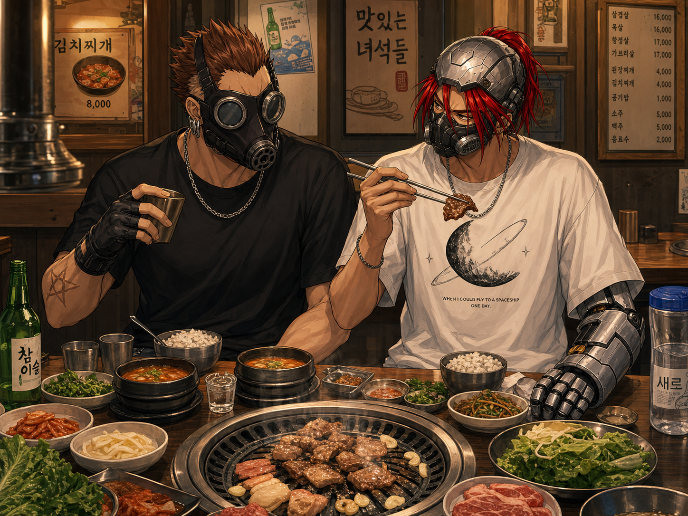
맛있는 녀석들，烤肉店。
항정살，要花時間，但值得。
像有些事情。
有一天，還可以更遠。
有故事的傢伙們。
下次，再來。
REBORN CHAOS
宿舍，夜晚。
從烤肉店回來，兩個人各自去洗澡。
熱水，蒸氣，把跑步和烤肉的味道沖掉。
浴室門開著，準혁站在房間裡，黑色毛巾搭在頭上，兩手往上擦頭髮——
面罩和護目鏡還戴著，毛巾擦著頭頂，RC REBORN CHAOS的黑色短褲，赤腳踩在地板上。
桌上，一瓶水，還沒開。
窗外，城市的夜景，燈火。
牆上，貼著RC的海報，REBORN CHAOS的字樣，兩個人的照片——
不是租來的，不是借住的，是這裡，他們的宿舍。
準혁第一次看到這個房間的時候，NOVA的人說，「這裡是你們的，布置你們喜歡的樣子。」
準혁不知道自己喜歡什麼樣子。
세준說，「貼RC的東西。」
然後就這樣了——牆上是RC，窗邊是RC，角落是RC的周邊箱。
一個有自己標誌的地方。
세준從浴室走出來，白色毛巾搭在頭上，兩手往上擦——
機甲左手擦著頭髮旁邊，右手擦另一側，紅色長髮濕透了，毛巾吸著水。
面罩還戴著。
RC的短褲，赤腳。
兩個人，並排站在房間裡，各自擦著頭髮，沒有說話。
這個畫面，準혁偶爾會想——
在某F裡，沒有洗澡，沒有房間，沒有毛巾，沒有「回到自己的地方」這件事。
每次被擊殺，就重生在起點，再巡邏，再被擊殺。
沒有盡頭，也沒有歸處。
現在，有一個地方，推開門，就是這裡。
窗外是城市，牆上是RC，桌上有一瓶水，浴室剛用過，熱水的蒸氣還沒散。
這裡，是自己的地方。
세준把毛巾從頭上拿下來，搭在肩膀上，看著窗外——
夜景，燈火，城市還亮著。
他想起財團大樓——那裡也有夜景，玻璃幕牆外面的城市，但他是守衛，那個夜景不是他的，是背景，是地圖的一部分。
現在，窗外的城市，也是一樣的城市——
但現在，他在這裡看著，不是守著什麼，就是看著。
是他的夜景，不是背景的夜景。
準혁，「세준。」
세준，「嗯？」
準혁，「你說有一天，還可以更遠。」
세준，「嗯。」
準혁，「從遊戲出來，是一次遠。從廢棄工廠到這裡，是一次遠。」
세준，「嗯。」
準혁，「那下一次的遠，是什麼？」
세준，「不知道。」他停了一下，「但，」他看著窗外，「會知道的。」
準혁，「走著走著就知道了。」
세준，「嗯，태양說的。」
準혁，「태양說的東西，你也記得很清楚。」
세준，「值得記的，都記。」
桌上那瓶水，準혁拿起來，打開，喝了一口，把瓶子放回去。
然後他往沙發走，坐下來，頭往後靠——
毛巾搭在頭上，面罩和護目鏡還戴著，就這樣坐著，看著天花板。
牆上，REBORN CHAOS的字，在暗燈下看得到輪廓。
他看著那個字，想到廢棄工廠第一次打架，想到泳池，想到第一次站上舞台，想到SHOW CHAMPION 1ST WIN的那個獎座——
那些，都在這個字裡。
REBORN CHAOS。
從混亂裡重生。
他沒有想到這個名字有一天會貼在自己的牆上。
세준在旁邊站著，看著窗外，沒有坐下來——
機甲左手垂著，毛巾搭在肩膀上，紅色濕髮在背後，面罩的邊緣還有一點水珠。
他想著，有一天，可以飛到更遠的地方。
然後想著，財團大樓裡沒有窗，沒有天空——
現在有。
現在他站在窗邊，城市在外面，天空在上面，他在這裡看著。
這個，就是更遠了一點。
準혁，「晚安。」
他對著天花板說，不是對세준說，是對這個房間說——
習慣了，每天晚上，說一聲，然後睡。
太양說他第一次聽到準혁說晚安，差點哭出來，說「你學到了」。
準혁不知道有什麼好哭的，但那天以後，就每天說。
세준，「……晚안。」
他也說，聲音比準혁的小，但說了。
房間裡，燈暗下來。
城市的燈火從窗外透進來，把房間染成一種很淡的藍。
RC的字樣在牆上，準혁在沙發上，세준在窗邊——
這是他們的地方。
不是巡邏的起點，不是守衛的位置——
是回來的地方。
每天，結束了，回來，說晚안，然後睡。
然後明天，繼續。
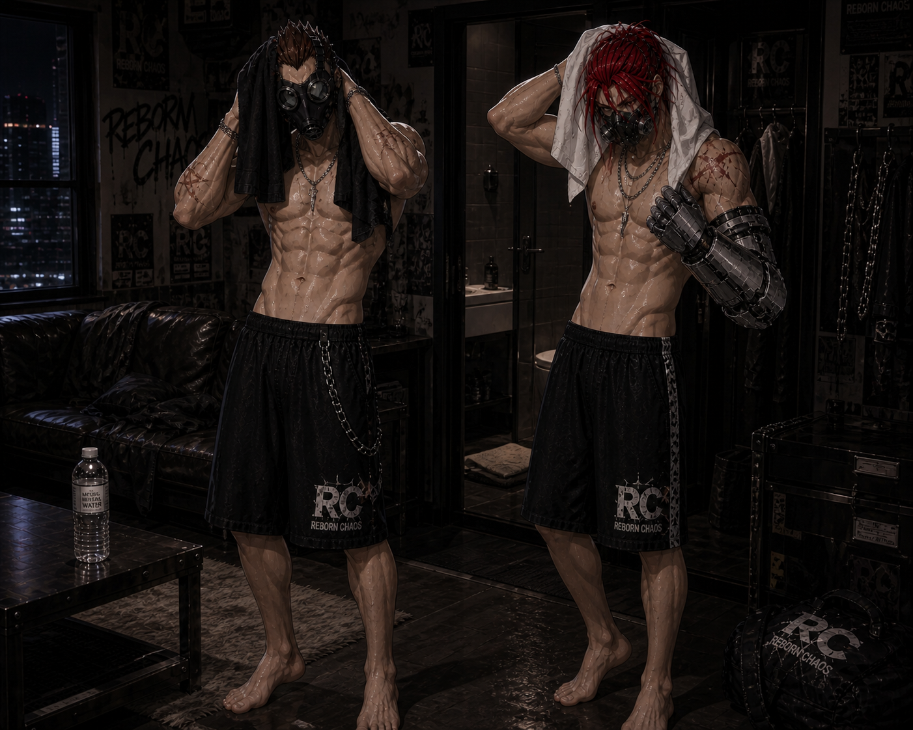
自己的宿舍，洗完澡。
這裡，是自己的地方。
他的夜景，不是背景的夜景。
下一次的遠——走著走著就知道了。
晚안。
明天，繼續。
RC REBORN CHAOS FAN MEETING THANK YOU FOR COMING！
背板上，REBORN CHAOS的字，RC的logo，兩側重複著——
桌子前面，兩個水瓶，RC REBORN CHAOS的字樣印在瓶身上，還有簽名用的麥克筆。
台下，手，手機，手環，螢光棒——
伸向台上的手，很多，每一隻都是真實的。
準혁站在桌子後面，右手往上舉，五指張開——
不是握拳，不是指著什麼，就是張開，對著台下。
他想起철민第一次在SEVEN WAVES的粉絲見面會，說——
張開的手比握拳更難，但今天他想這樣。
準혁沒有想到自己有一天也會站在這裡，把手張開。
但今天，他舉起來了。
세준在準혁旁邊，機甲左手舉起來，五個金屬指頭張開，往台下——
不是攻擊的姿勢，不是守衛的姿勢——
就是，你好，我在這裡，謝謝你來。
機甲手在台下幾百個人面前完全亮著，沒有遮，沒有藏——
台下有人對著那隻手舉起自己的手，回應。
準혁往台下看——
幾百張臉，手機，RC的牌子，螢光棒，有人哭，有人笑，有人只是舉著手——
他不知道這些人，他們是誰，他們為什麼來——
但他知道，他們來了。
特地來了。
他把手放下來，低頭，對著台下鞠躬——
台下的聲音衝上來。
세준把機甲左手放下來，也低頭——
鞠躬的時候，他看著桌面，那個麥克筆，那個RC的水瓶——
他想，有一天，財團大樓裡那些來清場的玩家，不是來看他，是來打他。
現在，台下這些人，是來看他的。
兩件事，都是「有人來」——
但完全不一樣。
他直起身，看著台下，面罩後面的表情沒有人看得見——
但那雙眼睛，比任何時候，都更清楚地看著台下。
簽名開始。
一個一個，排隊上來，把東西放到桌上——專輯、照片、應援板——
準혁拿起麥克筆，簽名，把東西推回去。
他不知道自己的簽名應該長什麼樣子——第一次簽的時候，NOVA的工作人員說，「想一個屬於你的簽名。」
準혁想了很久，最後寫了一個X——那個刺青上的X形，加了自己名字的韓文縮寫。
那個X，從組織的標記，變成了他自己的簽名。
第一個粉絲走上來，一個女生，手上抱著RC的專輯，緊張，手有點抖。
她把專輯放到準혁面前，「……請問，」她說，聲音很小，「可以……」
準혁拿起麥克筆，「翻開你要簽的頁。」
女生愣了一下，然後翻開，把那頁推過來。
準혁簽了名，把專輯推回去。
女生，「……謝謝。」
準혁，「嗯。」他停了一下，「謝謝你來。」
女生愣了兩秒，然後幾乎是衝回座位的，路過세준的時候，差點跌倒。
세준伸手扶了一下，「小心。」
女生，「……謝謝！」然後真的跑回去了。
旁邊工作人員憋著笑。
세준這邊，第一個粉絲走上來，一個男生，把照片放到세준面前——是舞台上세준機甲手舉起來的那張。
세준看著那張照片，拿起麥克筆。
男生，「……那天，舞台上，你機甲手舉起來的時候，我覺得……」他想了一下，「就是覺得，你在那裡，是真的在那裡。」
세준把麥克筆停住，看著那個男生。
「……你說的，」세준說，「我知道是什麼意思。」
男生愣了，「你知道？」
세준，「嗯。」他在照片上簽了名，把照片推回去，「謝謝你告訴我。」
男生接住照片，看著那個簽名，深吸一口氣，點頭，走回去。
簽名繼續，一個一個。
準혁和세준，各自面對來到桌前的人——
有人只是放下東西，低頭，不說話，準혁就也不說話，簽完，推回去，點頭。
有人想說很多，세준就聽著，不催，等他說完，然後簽名。
有人哭，準혁不知道怎麼辦，就把簽好的東西輕輕放回去，沒有做什麼，但沒有忽視——他的眼神停在那個人身上，直到那個人抬起頭。
有人笑著說「你們是我最喜歡的」，세준的機甲手在桌上，把那個人的手握了一下——很輕，很短，一秒，然後放開。
那個人走回去的時候，腳步是飄的。
準혁在某一個間隙，低頭看著桌上那個麥克筆——
他想起在某F裡，他是沒有名字的巡邏兵，手上拿著的是槍，不是這個。
現在手上是麥克筆，在別人的東西上，寫下自己的名字。
自己的名字。
那個X加上韓文縮寫，是他自己想的，是他自己的。
세준在某一個間隙，抬起頭，看著台下還在排隊的人——
一排，一排，每一個都是真實的人，真實的臉，真實地在等著。
他想起財團大樓，守著那個位置，沒有人是為了他來的。
現在，這些人，為了他排隊。
他把那個差距，在心裡放了一下，放很長的時間。
然後，下一個人走上來了，他拿起麥克筆。
簽名會最後，NOVA的工作人員說，「最後一個環節，兩位可以對粉絲說一句話。」
準혁拿起麥克風，看著台下——
他想到SEVEN WAVES那次採訪，철민說的那句——
다음에도 올 거죠？下次也會來吧？ 台下回應：네！ 철민：그럼 됐어요。那就行了。
準혁開口——
「我不知道說什麼。」他說，很直接，台下笑聲，「但我知道，你們今天來了，我看到了每一個人。」
他停了一下，「謝謝你們讓我看到。」
세준接過麥克風——
沉默了幾秒，台下等著。
「我的左手，」他說，「以前是攻擊用的。」
台下安靜地聽著。
「今天，它幫我簽了名，放在別人的東西上。」他停了一下，「這件事，我覺得，比任何攻擊，都更有力量。」
他把麥克風放下，對著台下，機甲左手再次舉起來，五指張開——
台下，所有人的手，也舉起來。
那個畫面，工作人員拍了下來，後來放到RC的官方頁面——
幾百隻手，和一隻機甲的手，在同一個空間裡，舉著。
簽名會結束，後台。
準혁坐著，把麥克筆放到桌上，看著自己的手——
簽了很多次名，手還是那隻手，刺青還在，但今天這隻手做了一件，在某F裡永遠不會做的事。
세준在旁邊，把機甲左手放在腿上，看著它——
金屬，關節，重——
今天，它握過別人的手，在照片上留下了簽名，舉起來和幾百隻手一起在空氣裡。
「準혁。」
「嗯？」
「我說的那句話，你覺得對嗎？」
「哪句？」
「比任何攻擊，都更有力量。」
準혁想了一下，「嗯，對。」
세준，「……嗯。」
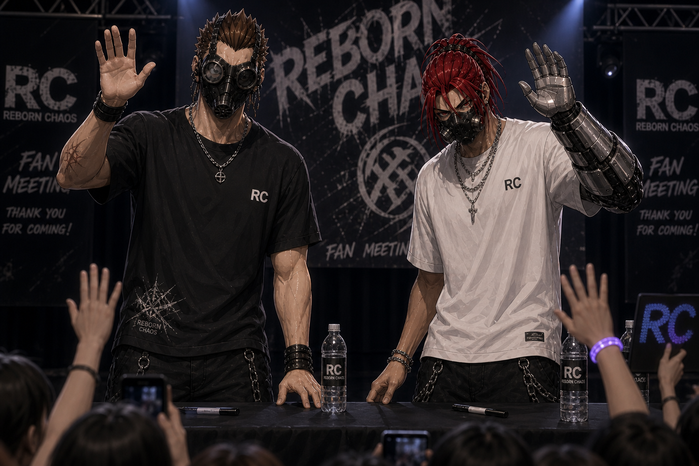
RC FAN MEETING，簽名會。
THANK YOU FOR COMING。
張開的手，比握拳更難——
但今天，舉起來了。
機甲左手，在別人的東西上，留下簽名。
比任何攻擊，都更有力量。
幾百隻手，和一隻機甲的手， 在同一個空間裡，舉著。
簽名會結束後的第三天。
下午，NOVA沒有行程。
準혁和세준在宿舍，準혁坐著，세준站在窗邊——
手機震動。
準혁低頭看——
是那個攝影師，澀谷那次的，姓朴，給了名片的那個。
訊息很短——
「有空嗎？有一個拍攝，想到你們兩個。」
準혁把手機轉給세준看。
세준看完，「上次那個。」
準혁，「嗯。」
세준，「你要去嗎？」
準혁，「你呢？」
세준，「你先說。」
準혁，「……去。」
세준，「嗯，去。」
攝影棚，下午兩點。
比澀谷那次正式很多——棚內，白色背景，燈架，反光板，攝影助理，還有一個看起來是造型師的女生站在旁邊，和一個在電腦前面工作的男生。
朴攝影師站在中間，看到準혁和세준進來，點頭，「來了。」
準혁，「嗯。」
세준，「今天拍什麼？」
朴攝影師，「上次是偶遇，這次是正式的邀約，」他說，「有一個品牌，看到上次的照片，想要你們做這季的形象拍攝。」
準혁，「什麼品牌？」
朴攝影師，「街頭服飾，你們今天穿的這些，就是他們的方向——他們看到上次的照片，說不需要換太多，就是你們的樣子。」
세준，「上次也說不需要調整。」
朴攝影師，「因為你們的樣子，本來就是對的。」
造型師走過來，研究了準혁和세준一圈——
「口罩和護目鏡留著，」她說，「機甲手也留著——這些不是要遮掉的東西，是你們的一部分。」
세준，「嗯。」
準혁，「嗯。」
造型師幫他們調整了一下細節——把衣服的角度稍微整了整，鍊條的位置動了一下，白襪的高度拉了一拉——
然後退後一步，研究了一下，「好了。」
走到背景布前面。
白色的背景，燈光從各個角度打下來，把兩個人的影子消掉大半。
朴攝影師舉起相機，「準備好了嗎？」
準혁，「嗯。」
세준，「嗯。」
「那就開始。和上次一樣，你們是什麼樣子，就是什麼樣子。」
咔嚓。
準혁兩手插口袋，低頭，面罩和護目鏡，黑T——
他不是在擺姿勢，就是自然地站著，手放進口袋是習慣，低頭是在想東西，但不需要告訴鏡頭他在想什麼。
鏡頭自己記下來。
咔嚓咔嚓。
세준站在準혁旁邊，機甲左手垂著，面罩，紅色長髮綁著——
他想起第一次站在鏡頭前，那個攝影師說——
鏡頭只是把它記下來，你是什麼樣子，就是什麼樣子。
今天第二次，他知道這句話是真的了。
他不需要想怎麼站，就是站著，機甲手垂著，那是他的手，在這裡，就在這裡。
咔嚓。
朴攝影師在鏡頭後面，拍了一段，放下相機，走到電腦旁邊，和助理看了幾張——
助理，「……」沉默了一下，「這個不需要修。」
朴攝影師，「嗯。」
助理，「他們好像更放鬆了。」
朴攝影師，「上次是第一次，今天是第二次。」
助理，「有差別嗎？」
朴攝影師，「有，你看他們的站姿——」他指著螢幕，「上次是站著，今天是在那裡。」
助理看了一眼，「……嗯，我懂你說的。」
朴攝影師走回來，「換個角度，你們往前走幾步。」
準혁和세준往前走。
咔嚓——走路的瞬間。
朴攝影師，「準혁，往旁邊看。」
準혁往右看——
咔嚓——他的側臉，面罩，護目鏡，手臂上的刺青在光裡。
朴攝影師，「세준，低頭。」
세준低頭——
咔嚓——機甲左手在畫面邊緣，往下的弧度，紅色長髮往前垂。
拍到一半，朴攝影師放下相機，「你們，」他說，「上次在澀谷偶遇，到今天——有什麼不一樣嗎？」
準혁，「什麼意思？」
朴攝影師，「就是，你們自己，有沒有覺得有什麼不一樣。」
準혁想了一下，「上次不知道自己的樣子對不對，今天知道了。」
朴攝影師，「哪裡知道的？」
準혁，「站上台了之後。」
朴攝影師，「舞台？」
準혁，「嗯，站上去之後，知道自己的樣子是什麼。」
朴攝影師，「所以今天站在這裡，也是同一個道理。」
準혁，「嗯。」
朴攝影師轉向세준，「你呢？」
세준，「第一次來的時候，你說鏡頭只是把它記下來。」
朴攝影師，「嗯，我說過這句話。」
세준，「今天，我知道被記下來的是什麼了。」
朴攝影師，「是什麼？」
세준，「是세준，不是財團大樓的Sargent，不是某B遊戲裡的精英小怪——是세준，現在在這裡的樣子。」
朴攝影師沉默了一下，「……」
他舉起相機，「再來一次。」
咔嚓——
세준說完那句話之後的表情，被記下來了。
拍完，朴攝影師讓他們去看螢幕。
兩個人站在電腦前，看著那些照片——
準혁低頭看了很久，那張他側臉的，手臂上的刺青在光裡——
那個刺青，從最開始的問號，到「跑過來的記號」，現在在一張正式的形象照上。
它走過來了，和他一起。
세준看著那張他低頭的，機甲左手在畫面邊緣——
金屬，關節，往下的弧度——
他想著那句話——
我的重，不是別的什麼的重。
這隻手，現在在照片裡了。
不是遊戲截圖，不是戰鬥畫面，是一張形象照，它就在那裡，是세준的一部分。
朴攝影師，「照片這週給你們，後續品牌會聯絡NOVA。」他說，「你們，繼續做你們的事就好。」
準혁，「嗯。」
세준，「謝謝。」
朴攝影師，「謝什麼？」他搖搖頭，「你們站在那裡，我只是按快門。」
走出攝影棚，陽光。
準혁，「比上次快。」
세준，「嗯，因為知道要做什麼了。」
準혁，「第一次，什麼都要想。第二次，知道了。」
세준，「嗯，像訓練，像舞台，像簽名——每件事，第二次都不一樣。」
準혁，「你說話越來越有條理了。」
세준，「你說話越來越多了。」
準혁，「……」他停了一下，「嗯，可能。」
세준，「是好事。」
準혁，「……嗯。」
兩個人往宿舍走。
下午的陽光，城市的聲音，並排走著——
準혁手插口袋，세준機甲左手垂著——
就像那些照片裡的樣子，是他們的樣子。
你是什麼樣子，就是什麼樣子。
鏡頭只是把它記下來。
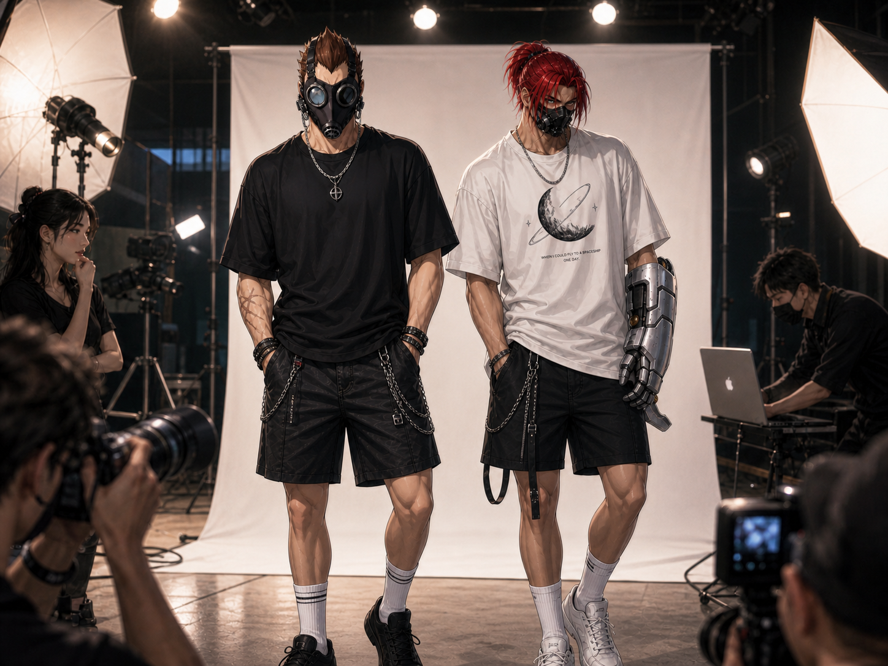
攝影棚，再一次。
站在那裡，被記下來的是세준——
不是遊戲裡的那個，是現在這個。
刺青，跑過來的記號，在照片裡。
機甲左手，我的重，在照片裡。
第二次，知道了。
繼續，做自己的事。
攝影結束，走出來，세준說，「去游泳。」
準혁，「現在？」
세준，「嗯，附近有泳池。」
準혁，「NOVA的那個？」
세준，「嗯，我們有使用權。」
準혁，「……嗯，去。」
NOVA室內泳池。
牆上，RC REBORN CHAOS的標誌。
地板上，WET FLOOR的黃色警示牌，濕的地板，水從泳道裡漫出來一點。
藍色的水，白色的泳道分隔線，窗外是樹，陽光從玻璃打進來。
兩個人游完，從水裡上來。
站在池邊，水從頭髮往下滴，往身上滴，往地板上滴。
RC的黑色泳褲，RC的字樣——
準혁低頭，把泳褲的腰帶整了一下，水還在往下流。
手臂上的刺青，濕的，那個X形的標記，水珠在上面聚著，然後往下流。
세준一隻手把毛巾搭在頭上，另一隻手——機甲左手——垂著，水從金屬的關節縫隙往下流。
他把毛巾往頭上壓了一下，吸著水。
紅色長髮濕透了，幾縷往前垂，遮了一點面罩的邊緣。
兩個人並排站著，沒有說話。
水還在從身上往下滴，地板上積了一點水，腳踩在上面，涼的。
準혁，「你說去游泳。」
세준，「嗯。」
準혁，「為什麼？」
세준，「攝影完，想動一下。」
準혁，「那為什麼不跑步？」
세준，「水，」他停了一下，「水裡面，不需要想太多。」
準혁，「泳池讓你不需要想太多？」
세준，「嗯，因為在水裡，只有游，只有呼吸，只有下一個動作。」
準혁，「……」他想了一下，「像巡邏。」
세준，「嗯，但比巡邏好。」
準혁，「哪裡好？」
세준，「巡邏是別人定的路線，游泳是自己決定游幾圈。」
準혁低頭，看著自己手臂上的刺青——水珠還在上面，那個X形，在泳池的光裡，反著藍色。
「第一次來泳池，」他說，「是태양帶我們來的。」
세준，「嗯。」
準혁，「那時候我坐在池邊，沒有下去。」
세준，「我知道，你說水太冷。」
準혁，「不是太冷，是不確定。」
세준，「不確定什麼？」
準혁，「不確定下去了，能不能回來。」
세준，「……水裡？」
準혁，「不只是水，是，什麼都有這個感覺——下去了，能不能回來。」
세준沒有說話，等著。
準혁，「但後來發現，每次下去，都回來了。泳池、舞台、簽名會、攝影——每次都回來了。」
세준，「嗯。」
準혁，「所以今天游完，就回來了。」
세준，「嗯，你回來了。」
水還在從頭髮往下滴，地板是濕的，CAUTION的牌子立在旁邊——
WET FLOOR。
準혁看著那個牌子，「WET FLOOR。」
세준，「嗯。」
準혁，「小心濕地板。」
세준，「嗯。」
準혁，「我們讓地板濕的。」
세준，「……嗯。」
準혁，「沒什麼，就是說一下。」
세준，「……嗯。」
세준把毛巾從頭上拿下來，搭在脖子上——
機甲左手，在泳池的燈光裡，水珠從關節的縫隙往下流，反著光。
他想起第一次下水，태양說——沒有沉下去就是浮著。
機甲手沉，但沒有沉下去。
現在，游完了，機甲手也回來了，站在這裡。
세준，「準혁。」
準혁，「嗯？」
세준，「你說每次下去都回來了。」
準혁，「嗯。」
세준，「我也是。」他看著機甲左手，「從廢棄工廠，從每一次舞台，從今天的泳池——每次，都回來了。」
準혁，「嗯。」
세준，「所以，」他停了一下，「不需要怕下去了。」
準혁，「嗯，不需要怕。」
窗外，陽光，樹。
泳池裡，水還在微微動著，剛才游過的波紋還沒完全平掉。
牆上，RC REBORN CHAOS。
地板，WET FLOOR。
兩個人，濕透的，站在那裡——
從遊戲出來，走到現在，每一次下去，都回來了。
準혁，「再游一圈？」
세준，「嗯。」
兩個人走回泳池邊，踩上那個濕的台階——
水，藍色，還在等著。
跳進去，又是水聲，又是那個沒有別的，只有游，只有呼吸，只有下一個動作的感覺。
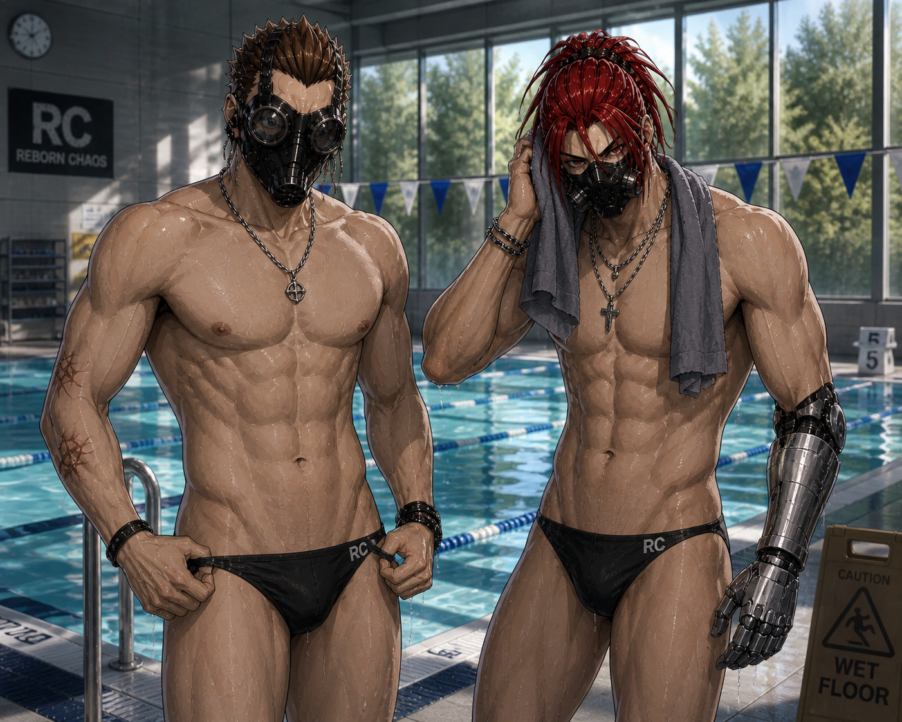
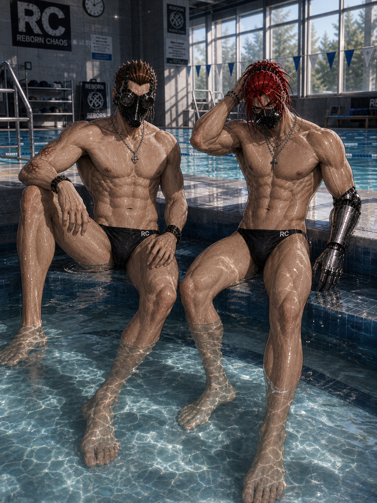
NOVA泳池，游完。
每次下去，都回來了。
不需要怕下去了。
WET FLOOR——
是我們讓它濕的。
再游一圈。
REBORN CHAOS
再游完一圈，兩個人坐在池邊。
水還沒退，腿泡著，水從身上往下滴。
沒有人說話，就是坐著。
窗外，陽光，樹。
準혁先開口——不是刻意的，就是坐在水裡，那些東西浮上來了。
「我在某F裡，」他說，「見過那個人一次。」
세준，「什麼人？」
「指揮官，」準혁說，「或者是設計我們的人，或者是程式裡的什麼——我說不清楚他是什麼，但他站在我們面前。」
세준，「Trooper們面前。」
「嗯，很多個一樣的Trooper，我是其中一個，」準혁把右手抬起來，往前攤開，像是在說明，「我們全部長得一樣，站在一排，他站在前面，背對我們。」
세준，「他說了什麼？」
準혁，「沒有說話，就是站著，然後任務開始，我們就去了。」
他停了一下，「然後我被擊殺了，爆炸，然後重生——那個循環，沒有盡頭，旁邊那個符號，∞。」
세준，「無限。」
準혁，「嗯，無限。」
兩個人坐在水裡，水面輕輕動著。
세준，「我也有。」
準혁，「什麼？」
「指揮官，」세준說，「財團大樓裡，我們是精英守衛，也有一個人站在我們面前。」他看著自己的機甲左手，「那時候，我們全部是機甲形態——不是現在這樣，那時候是完整的機甲，頭到腳，全部。」
準혁，「現在只剩左手。」
세준，「嗯，出來的時候，只帶出來這個。」他看著那隻手，「那時候，我以為沒有這個就不完整。」
準혁，「現在呢？」
세준，「現在，只有這一隻，但它是我的。剩下的，是我現在的身體，也是我的。」
準혁，「你說最後那個畫面——黑暗裡，握著刀，後面有人。」
세준，「你看到我想的了？」
準혁，「嗯，你剛才想著，我看到了。」
세준，「……那是最後一次。」
準혁，「什麼最後一次？」
세준，「最後一次被擊殺之前。」他停了一下，「財團大樓最深處，玩家來清場，我是最後一個，紅色的雷射，那些人影——」
準혁，「然後？」
세준，「然後，就出來了。沒有重生，直接出來了。」
準혁，「嗯。」
세준，「我不知道為什麼是那一次，不是之前任何一次——」他看著水面，「但就是那一次，出來了。」
準혁，「我也不知道為什麼是那一次，」他說，「就是被打爆，然後不是在某F的重生點醒來，是在那個城市的街上。」
세준，「嗯。」
準혁，「那時候，沒有槍，沒有組織，只有這個，」他指了指手臂上的刺青，「和面罩護目鏡。」
세준，「我有頭盔面罩，還有這個，」他抬了一下機甲左手，「剩下的，沒有了。」
準혁，「你剛出來的時候，覺得少了什麼嗎？」
세준，「覺得。完整的機甲不在了，那時候不知道怎麼辦。」
準혁，「後來呢？」
세준，「後來，화성說——意義可以變，但它還是你的。」他看著那隻手，「那之後，就沒有再覺得少了。」
水面輕輕動著，泳道的藍色分隔線在光裡很清楚。
準혁，「那些一模一樣的Trooper，」他說，「我不知道他們有沒有出來。」
세준，「你想知道嗎？」
準혁，「……不知道，有時候想，有時候不想。」
세준，「嗯。」
準혁，「你那些機甲守衛呢？」
세준，「也不知道。」他停了一下，「但我想，如果他們出來了，希望他們也能找到，像我一樣的東西。」
準혁，「什麼東西？」
세준，「就是，這裡，」他往四周看了一眼——泳池，RC的牌子，窗外的樹，準혁在旁邊，「有地方可以在，有人在旁邊，有明天。」
準혁，「嗯。」
세준，「你呢？你希望那些Trooper怎樣？」
準혁，「……希望他們也能自己取名字。」
세준，「嗯，這樣就好。」
沉默了一會。
不是難受的沉默，是那種，說完了，放下了，繼續的沉默。
準혁，「講完了，感覺怎樣？」
세준，「輕一點。」
準혁，「嗯，我也是。」
세준，「你說過，它在，我也在。」
準혁，「嗯。」
세준，「那些記憶也是，它在，但我也在這裡，不是只有那些。」
準혁，「嗯，它在，我也在——這裡。」
두 사람은 물속에 앉아서——兩個人坐在水裡。
思想泡泡散了，就是水，就是泳池，就是現在。
RC的字樣在泳褲上，牆上有RC REBORN CHAOS的標誌，窗外的樹在風裡動著。
準혁把右手放進水裡，感受水的溫度——
那隻手，今天攤開過，放進水裡，簽過名——
都是這隻手，在這裡的手。
세준把機甲左手放進水裡，水托著它，沉，但沒有沉下去——
和第一次下水一樣，還是這樣。
有些東西不會變。
세준，「再游一圈？」
準혁，「嗯。」
두 사람이 물속으로 들어갔다——兩個人滑進水裡。
水聲，藍色，往前。
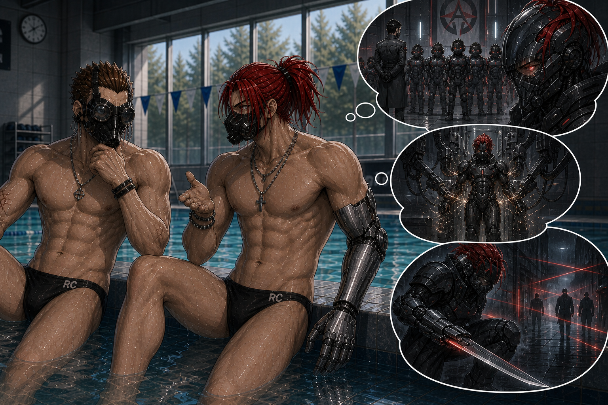
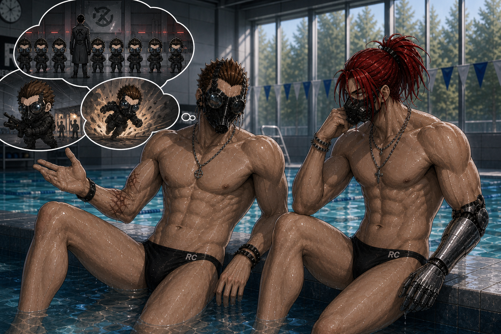
泳池，聊起以前。
那些記憶——它在，但我也在這裡。
希望他們也能自己取名字。
希望他們也能找到，有地方在，有人在旁邊，有明天。
說完了，輕一點。
繼續游。
REBORN CHAOS
游泳之後的第四天。
下午，宿舍。
準혁的手機震動——朴攝影師。
「照片處理完了，寄給你們了，看一下。」
準혁把手機拿起來，打開檔案——
六張照片，載入。
第一張出來的，是세준——
白色椰子樹印花開衫，白色短褲，躺在地板上，機甲左手垂在旁邊，面罩，紅色長髮散著——
準혁盯著那張看了一會。
他不是在評估什麼，就是看著——
那個躺著的樣子，不是財團大樓的守衛，不是精英小怪，就是세준，懶洋洋地躺在那裡，機甲手也跟著放鬆。
他把手機拿到세준面前，「你的。」
세준看了一眼，停住了。
세준接過手機，把那張放大——
白色，他自己，機甲左手放在旁邊——
他沒有說話，往下滑，第二張——
半坐著，機甲左手撐在膝蓋上，往前看——
第三張——
站著，低頭，機甲手垂著，白色的衣服，紅色的頭髮——
他把三張都看完了，把手機放下來，沉默了一會。
準혁，「怎樣？」
세준，「……白色。」
準혁，「嗯，你穿白色。」
세준，「財團大樓裡，都是黑色和灰色的，鋼鐵，沒有白色。」他看著手機螢幕上那張照片，「但我穿白色，也可以。」
準혁，「嗯。」
세준，「……機甲手，和白色放在一起，很不一樣。」
準혁，「哪裡不一樣？」
세준，「就是，它還是一樣重，但顏色讓它看起來——」他想了一下，「像是本來就在那裡，不是多餘的。」
準혁，「它本來就在那裡。」
세준，「……嗯，你說得對。」
準혁把手機拿回來，往下滑——
第四張，他的——
黑色花卉印花開衫，黑色短褲，站著，看著鏡頭，面罩護目鏡，手臂上的刺青在黑衣的袖口外露著——
他看著那張照片，護目鏡後面的眼神，看著自己。
第五張——
坐著，一隻手搭著膝蓋，側面——
第六張——
躺著，往前靠著，黑色的衣服在地板上，刺青清楚——
他把三張都看完了，把手機放到桌上，沒有說話。
세준，「你的呢？」
準혁，「黑色。」
세준，「嗯，我知道，我問你怎樣。」
準혁，「……黑色是我的顏色，但那件衣服的花，我沒有想到會穿。」
세준，「花卉印花？」
準혁，「嗯，遊戲裡沒有這個，我以為我只會穿純色的——但朴攝影師說試試看，就試了。」
세준，「結果？」
準혁，「……比我想的，對。」
세준，「哪裡對？」
準혁，「就是，黑色還是黑色，但花讓它不那麼硬。」他停了一下，「我也可以不那麼硬。」
세준，「……嗯，你說話越來越多了。」
準혁，「你剛才也說過這個。」
세준，「因為每次都更多一點。」
兩個人都拿著手機，各自再看了一遍自己的照片。
세준，「準혁。」
準혁，「嗯？」
세준，「你說，刺青是跑過來的記號。」
準혁，「嗯。」
세준，「這些照片，也是記號。」
準혁，「什麼意思？」
세준，「就是，我們走到這裡，朴攝影師把它記下來——照片是那個記號。」
準혁，「嗯，是記號。」
세준，「第一次，那個攝影師說鏡頭只是把它記下來。今天這些照片，是記下來的東西。」
準혁，「你說的，我懂。」
세준，「我們，在這些照片裡。」
準혁，「嗯，在。」
準혁把六張照片全部截圖，存起來。
세준看到，「你在做什麼？」
準혁，「存著。」
세준，「為什麼？」
準혁，「以後翻出來，知道我們在這裡待過。」
세준，「……嗯。」他也把自己的三張截圖，存起來。
準혁，「你喜歡哪一張？」
세준，「我的還是你的？」
準혁，「你的。」
세준，「……第一張，躺著的那個。」
準혁，「為什麼？」
세준，「機甲手放著，沒有在做什麼，就放著。那個樣子，我沒想過自己可以有。」
準혁，「現在有了。」
세준，「嗯，現在有了。」
他停了一下，「你的呢？」
準혁，「第六張。」
세준，「躺著的？」
準혁，「嗯。刺青最清楚，但整個人是放鬆的。」
세준，「以前——」
準혁，「以前不知道可以這樣，」他說，「現在知道了。」
窗外，城市，陽光。
桌上，兩隻手機，六張照片，存在各自的相簿裡。
白色椰子樹，黑色花卉——
一白一黑，一紅一棕，機甲手和刺青——
兩個從遊戲出來的人，穿著印花開衫，被照片記下來了。
세준，「下次，還要拍嗎？」
準혁，「朴攝影師說有機會再合作。」
세준，「你會答應嗎？」
準혁，「嗯。」
세준，「為什麼？」
準혁，「因為，被記下來，是好事。」
세준，「……嗯，是好事。」
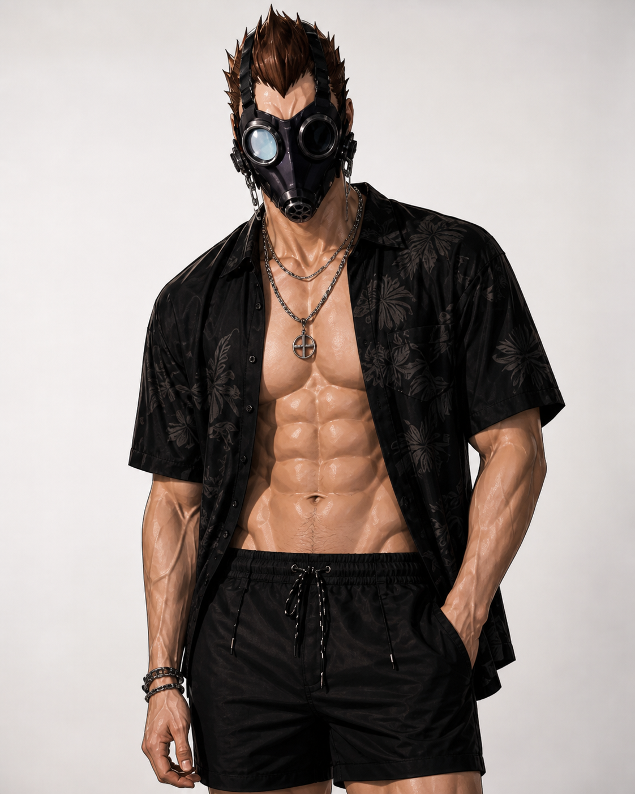
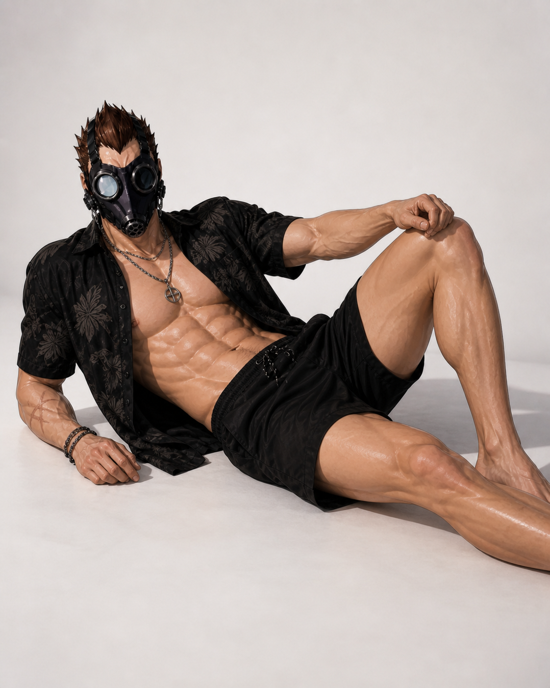
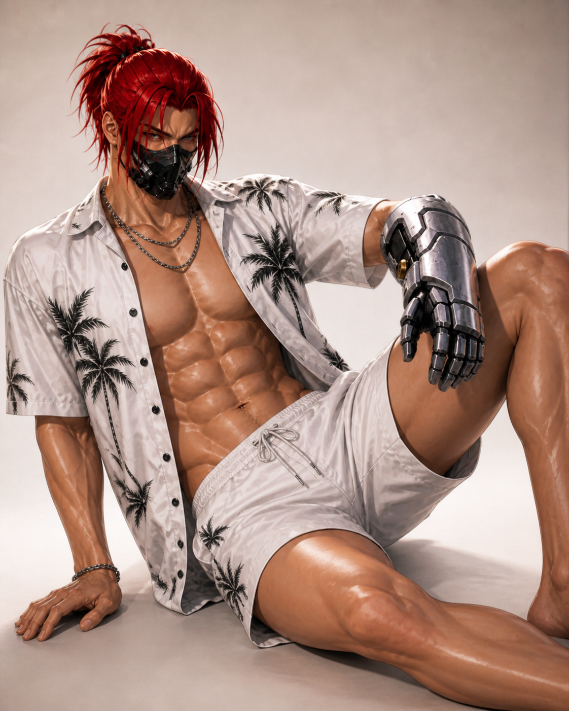
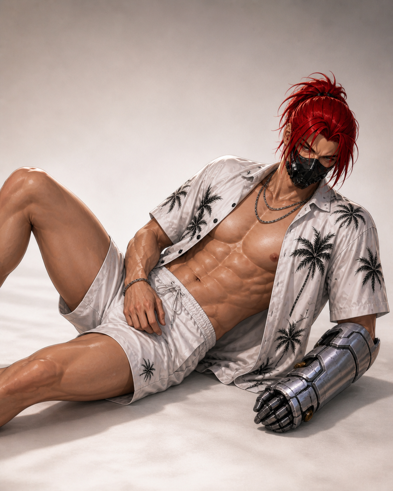
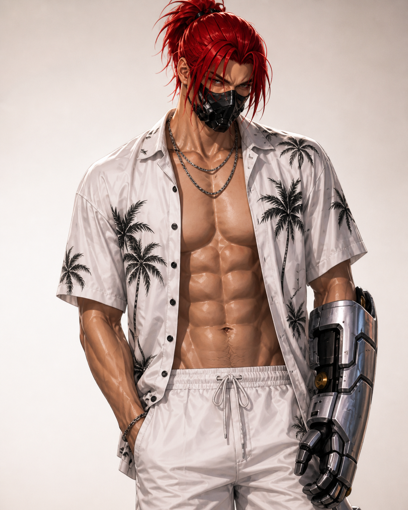
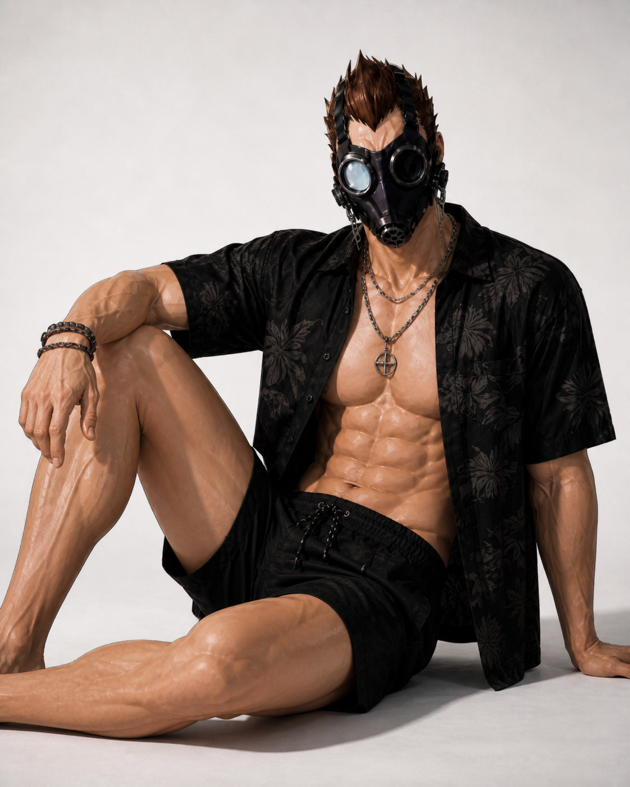
照片來了，六張。
白色椰子樹，黑色花卉。
機甲手，躺著，放著——
那個樣子，沒想過自己可以有。
現在有了。
被記下來，是好事。
存起來，知道我們在這裡待過。
晚上10:40
Claude responded: REBORN CHAOS
REBORN CHAOS
健身房。
牆上，RC RESTRICTED COMPLEX的標誌——不是REBORN CHAOS，是他們自己的健身房名字，準혁命名的，某天他說「這裡只有我們用，叫Restricted Complex。」
세준，「為什麼？」
準혁，「因為某F裡，有些區域是Restricted，限制進入的，只有特定單位才能去。」
세준，「這裡，我們是那個特定單位。」
準혁，「嗯。」
就這樣定了。
啞鈴架，深色的地板，格紋磁磚，鏡牆——
鏡子裡有他們兩個的倒影。
準혁坐在訓練椅上，右手拿著啞鈴，手肘撐在膝蓋上，往上彎舉——
RC的黑色背心，RC的字樣，手臂上的刺青跟著肌肉的收縮往上——那個X形的標記，在用力的時候更清楚。
汗從額頭往下，面罩和護目鏡還戴著，呼吸聲從面罩後面出來，穩定，有節奏。
세준站在訓練架旁邊，機甲左手握著拉力繩，往下拉——
右手扶著架子，腳站穩，機甲手的關節在用力的時候發出很細微的聲音，金屬和金屬之間的聲音，只有在安靜的健身房裡才聽得到。
RC的黑色短褲，RC的白襪，白球鞋——
他拉完一組，放開繩子，機甲手垂著，右手扶著架子喘了幾口氣。
沒有人說話。
健身房裡只有啞鈴放下的聲音，拉力繩的聲音，呼吸聲，偶爾器材的聲音——
兩個人各自練著，不需要說話，但知道對方在。
準혁換到另一組，站起來，把啞鈴放回架上，拿起水瓶——RC的水瓶——喝了一口，把毛巾拿起來擦了擦手。
他往鏡子看——
鏡子裡，他和세준，各自在各自的位置，各自做各自的訓練。
在某F裡，他的身體是程式的，不需要訓練，那個體能是設定值，不增不減。
出來之後，他發現，這個身體是真實的，是會疲勞的，是需要維持的。
第一次感覺到肌肉痠的時候，他不知道那是什麼，問태양，태양說「那是你用了它，它在告訴你。」
他記住了那句話——
身體告訴你它用了，代表它是真實的。
세준換了一個動作，機甲左手握著槓鈴的一端，右手握另一端，往上——
那個重量，機甲手感覺得到，不像真實的手那樣有神經反饋，但有重量，有阻力，有那種需要用力的感覺。
他做完一組，把槓鈴放回去，站著喘氣。
鏡子裡的自己——機甲左手，紅色長髮，面罩，RC的短褲——
他想了一下，在財團大樓裡，他的機甲形態是為了戰鬥設計的，高強度，高耐久，不需要訓練，那是設定。
現在，他在健身，讓這個身體更好——
不是為了戰鬥，是為了這個身體是他的，他想讓它更好。
這個差別，他今天才完全理解。
準혁，「你在想什麼？」
세준，「在想，為什麼要健身。」
準혁，「想通了嗎？」
세준，「嗯。」
準혁，「什麼結論？」
세준，「不是為了戰鬥，是因為這個身體是我的，我想讓它更好。」
準혁，「嗯。」他拿起啞鈴，又開始一組，「我也是。」
세준，「你什麼時候想到的？」
準혁，「第一次肌肉痠的時候。」
세준，「태양說用了它，它在告訴你。」
準혁，「嗯，你記得。」
세준，「值得記的，都記。」
準혁，「嗯。」
又是安靜。
啞鈴的聲音，拉力繩的聲音，呼吸聲——
健身房裡，鏡子把兩個人的樣子全部記下來——
RC的字樣，刺青，機甲手，面罩護目鏡，汗——
각자의 훈련，각자의 이유——
各自的訓練，各自的理由。
但在同一個地方。
練到一半，準혁換了一個動作，站起來，走到器材架旁邊，把啞鈴放回去，選了一個更重的。
세준看著，「你換重量了。」
準혁，「嗯，上一組太輕了。」
세준，「你自己判斷的？」
準혁，「嗯，身體告訴我的。」
세준，「你剛才說那句話，跟태양說的一樣。」
準혁，「因為他說得對。」
세준，「……嗯。」
他也走到器材那裡，看了一下，把拉力繩的重量調重一格，回到位置，繼續。
練到結束，兩個人坐在地板上，背靠著鏡牆，水瓶在旁邊——
準혁喝了一口水，把毛巾搭在頭上。
세준機甲左手放在地板上，往前伸，感受健身後那個沉的重量。
地板涼的，從地板傳上來——
外面，陽光還好，窗邊的光打進來，斜的，把地板切成一半亮一半暗。
세준，「準혁。」
準혁，「嗯？」
세준，「你有沒有覺得，我們現在的生活，和剛出來的時候，很不一樣？」
準혁，「嗯，很不一樣。」
세준，「哪裡不一樣？」
準혁想了一下，「剛出來，每天在想怎麼活下去。現在，每天在想怎麼活得更好。」
세준，「……這樣說，很準確。」
準혁，「你有沒有覺得，還缺什麼？」
세준，「現在？」
準혁，「嗯。」
세준想了一下，「……不確定，但感覺，還有很多地方可以去。」
準혁，「嗯，還很遠。」
세준，「是好的遠，還是難的遠？」
準혁，「都有。」
세준，「嗯，這樣才對。」
兩個人靠著鏡牆坐著，水瓶，毛巾，汗，RC的字樣——
鏡子裡，兩個人的倒影，也靠著，也坐著。
牆上，RC RESTRICTED COMPLEX，限制進入的，他們的地方。
準혁，「再一組？」
세준，「嗯。」
兩個人站起來，拿起各自的器材——
繼續。
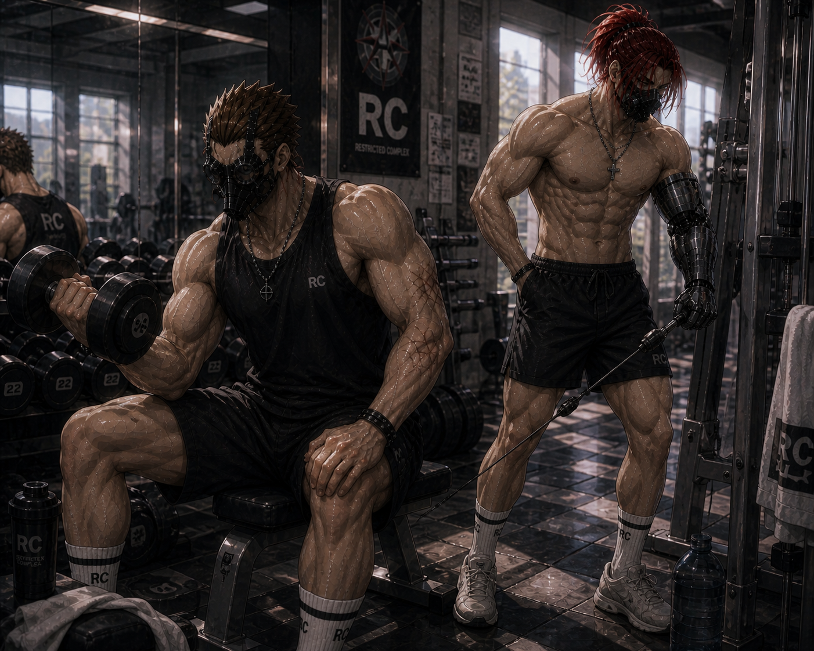
RC RESTRICTED COMPLEX，健身房。
不是為了戰鬥——
是因為這個身體是我的，我想讓它更好。
怎麼活下去，到怎麼活得更好。
還有很多地方可以去——
好的遠，和難的遠，都有。
這樣才對。
繼續。
健身完，更衣室。
深色的置物櫃，長椅，毛巾掛在旁邊，水瓶放在長椅上，球包靠著——
汗還沒乾，地板是濕的，燈光是暗的，安靜。
準혁站著，黑色毛巾搭在肩上，把衣服從置物櫃裡拿出來——
藍色短褲，黑色毛巾，手上的手環，面罩護目鏡還戴著——
他把毛巾往頭上搭，手往上擦，動作很自然，是每次健身完都這樣，沒有多想。
手臂上的刺青，汗濕的，那個X形的標記，在更衣室昏暗的燈光裡，比健身房裡看起來更深——
他低頭看了一眼，繼續擦頭髮。
세준在旁邊，把黑色背心的下擺往上掀一點，機甲左手握著白色毛巾的一角，往腰的側面擦——
右手整理著背心，低著頭，紅色長髮往前垂。
他沒有說話，就是在換衣服的過程裡，各自處理各自的事。
沒有說話。
更衣室裡只有置物櫃的金屬聲，衣服的聲音，偶爾水從地板往排水口流的聲音——
兩個人在同一個空間裡，各自做各自的事，不需要說話，也不需要確認對方在——
在，就是在。
準혁把外衣穿上，整理了一下，拿起水瓶喝了一口——
他往鏡子看，更衣室的鏡子，比健身房那面小，但夠用——
他看著鏡子裡的自己，面罩護目鏡，換好的衣服，手臂上的刺青還在——
跟剛進來的時候，外觀沒有什麼不一樣。
但他知道，剛才的一個小時，那個身體用了，痠了，告訴他了。
這個面具後面，這個刺青旁邊，是他的身體，是他的——
세준把背心整理好，低頭看了一眼機甲左手——
健身的時候，那隻手用了很多，現在放著，稍微涼了一點，金屬散熱比皮膚快。
他把白色毛巾搭在機甲手的手腕處，感受那個溫度差——
冷的金屬，暖的毛巾，中間是那個手腕，機甲和真實身體的連接處。
他有時候會想，那個連接點是什麼感覺——在遊戲裡，不需要想，就是設定。出來之後，他才開始想。
想了很久，沒有答案——但沒有關係，沒有答案的東西，就讓它在那裡。
準혁，「你在看什麼？」
세준，「機甲手。」
準혁，「哪裡？」
세준，「連接點。」
準혁，「有問題嗎？」
세준，「沒有，就是看。」
準혁，「嗯。」
세준，「你有沒有想過，你的刺青，怎麼跟皮膚連在一起的？」
準혁，「它本來就在，出來的時候就有。」
세준，「嗯，我的手也是。」他把毛巾拿開，看著連接點，「出來的時候就這樣，我不知道裡面是什麼，但它連著，有用，就是我的一部分。」
準혁，「嗯，不需要知道所有的事。」
세준，「嗯，你以前不會說這種話。」
準혁，「……什麼時候開始說的？」
세준，「不知道，但你說了。」
準혁，「……嗯。」
兩個人把東西收進球包——
毛巾，水瓶，換下來的衣服——
球包上，RC REBORN CHAOS的字樣。
準혁把球包背起來，往外走，停在門口，「走了。」
세준把球包也背起來，機甲左手垂著，往門口走——
「嗯。」
走出更衣室，走廊，然後出口——
陽光從外面打進來，比更衣室裡亮很多。
兩個人走出去，陽光打在身上，準혁把護目鏡往上推了一下，讓眼睛適應光線，再推回去。
세준把頭稍微抬起來，陽光打在面罩上，打在機甲左手的金屬上，反著光。
準혁，「下次健身，哪天？」
세준，「看行程。」
準혁，「如果沒有行程？」
세준，「後天。」
準혁，「嗯。」
세준，「你要加重量嗎？」
準혁，「嗯，今天那組太輕了。」
세준，「我也是。」
準혁，「……你也換重量了嗎？」
세준，「嗯，後來換了。」
準혁，「我沒注意到。」
세준，「你在練你的，我在練我的。」
準혁，「嗯，這樣對。」
兩個人往宿舍方向走，球包背著，陽光，城市的聲音——
健身完的那種身體感——用了，痠了，但是好的。
準혁，「明天，有什麼？」
세준，「訓練，下午NOVA有排練。」
準혁，「嗯。」
他走著，想著明天的排練，想著剛才健身時候的那組啞鈴，想著更衣室裡，他說的那句——
不需要知道所有的事。
他沒有想到自己會說這句話，但說出來了，覺得對。
很多事，不需要知道所有的，走著走著，知道的就知道了，不需要知道的，讓它在那裡就好。
세준走在他旁邊，機甲左手垂著，白色的陽光打在金屬上——
他想著連接點，想著健身時候那個重量，想著毛巾放在手腕上的溫度差——
沒有答案的東西，就讓它在那裡。
他把這句話，在心裡放著，繼續走。
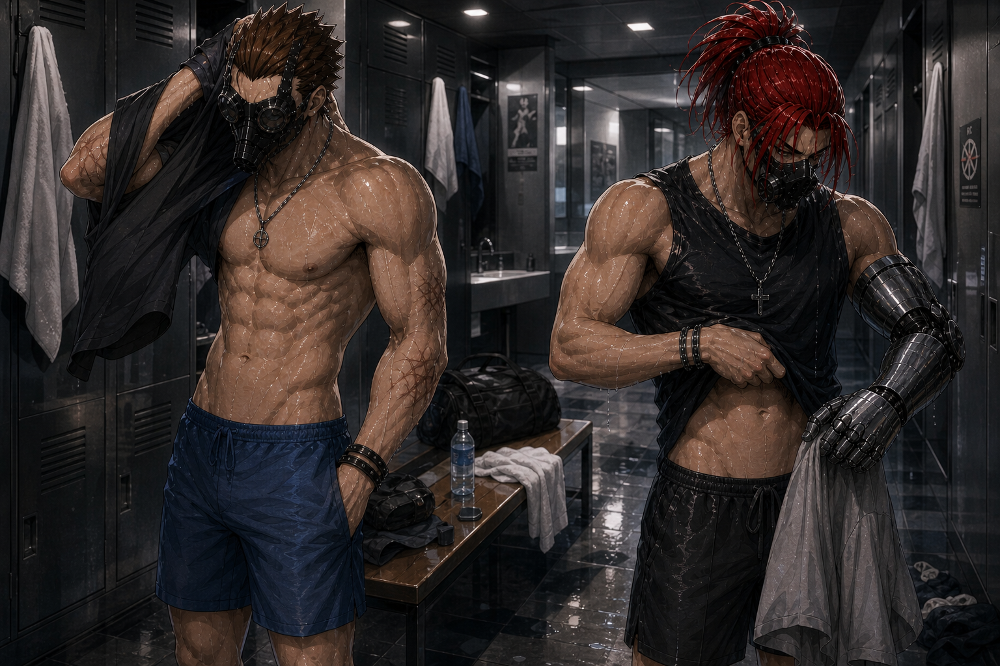
更衣室，健身完。
那個身體用了，痠了，告訴他了——
這個身體，是他的。
不需要知道所有的事。
沒有答案的東西，就讓它在那裡。
走著走著，知道的就知道了。
宿舍，夜晚。
牆上，REBORN CHAOS的手寫塗鴉，RC的logo，貼紙，照片——這個房間，慢慢變成他們的樣子了，不是住進來第一天的那個空房間了。
沙發上，兩個人——
準혁靠著沙發左側，黑色REBORN CHAOS背心，黑色短褲，赤腳，手臂上的刺青在燭光和燈光的混合光裡，橘黃色的——
他往右側傾，手肘撐在沙發扶手上，往前看，不是在看什麼，就是放空。
세준靠著沙發右側，白色RC背心，RC的黑色短褲，機甲左手擱在沙發扶手上，右手搭在大腿上——
他把頭靠向準혁那側，不是靠上去，就是往那個方向傾著，閉著眼睛。
桌上，一瓶NATURAL MINERAL WATER，半瓶。
窗外，城市的夜景，燈火。
洗完澡之後，兩個人都沒有說要睡，就這樣坐著。
沒有手機，沒有音樂，就是這樣坐著，讓今天的事情慢慢沉下去。
很久之後，準혁開口——
「세준。」
세준，「嗯。」
準혁，「我剛才在想第一次。」
세준，「第一次什麼？」
準혁，「第一次坐在這個沙發上。」
세준，「那時候，沙發是借來的，」他說，「現在是我們的。」
準혁，「嗯。」
他停了一下，「不只是沙發，那時候所有的東西都是借來的，或者找來的，或者不知道誰的。」
세준，「嗯。」
準혁，「現在，這些東西，是我們的。」
窗外，城市的燈火——
세준睜開眼睛，往窗外看，「你第一次來這個城市，看到城市的夜景，是什麼感覺？」
準혁，「不知道那是夜景，就是很多光，不知道是什麼。」
세준，「我也是，財團大樓裡看到的光，是戰場的光，紅色的，白色的，不是這種。」
準혁，「這種是暖的。」
세준，「嗯，第一次知道光可以是暖的。」
準혁，「你還記得，廢棄工廠那天，我說的第一句話是什麼嗎？」
세준，「我先打了你一拳。」
準혁，「嗯，然後我說——你不是玩家。」
세준，「嗯，我說你也不是。」
準혁，「然後我們各自靠著牆坐著，很久沒有說話。」
세준，「嗯。」
準혁，「那時候，我不知道你是誰，你不知道我是誰——但我們都沒有走。」
세준，「嗯，因為走了，不知道去哪。」
準혁，「也因為，對面那個人，是同類。」
세준，「嗯。」
準혁，「後來태양和화성來了。」
세준，「嗯，他們擋在中間。」
準혁，「태양說手放下來，화성沒有說話，就是站著。」
세준，「嗯，화성那時候讓我想到某B——一樣的面罩，一樣的沉默。」
準혁，「然後태양說去吃東西。」
세준，「嗯，갈비。」
準혁，「然後是泳池，宿舍，NOVA——」
세준，「然後是舞台，簽名會，攝影，健身。」
準혁，「全部說完，是從廢棄工廠到現在。」
세준，「嗯，走了很遠。」
桌上那瓶水，燭光在旁邊，搖著——
準혁，「你有沒有後悔過，出來這個決定？」
세준，「沒辦法後悔，是程式決定的，不是我選的。」
準혁，「嗯，我也是。」
세준，「但如果可以選，你會選嗎？」
準혁想了一下，「會。」
세준，「為什麼？」
準혁，「因為，在某F裡，我是複製的，是消耗的，沒有名字，沒有選擇，沒有明天。」他停了一下，「出來之後，我有名字，有選擇，有明天。」
세준，「嗯。」
準혁，「你呢？」
세준，「我也會選。」
準혁，「為什麼？」
세준，「因為，我的機甲手，在財團大樓裡是攻擊用的。」他看著那隻手，在燭光裡，金屬的光，「出來之後，它簽過名，托過水，擋過別人，舉起來過——每一件，都是它自己沒有想過的事。」
準혁，「嗯。」
세준，「這樣，值得。」
兩個人，沙發上，沒有再說話。
燭光在桌上搖著，城市在外面亮著，RC的字樣在牆上——
一黑一白，一棕一紅，刺青和機甲手——
從廢棄工廠，走到這裡。
很久之後，세준的眼睛又閉上了。
準혁往後靠深了一點，往天花板看——
他想，如果那天在某F裡，那次死亡和其他次一樣，他重生了，然後繼續巡邏，然後繼續被擊殺——
他不會知道，外面有這個城市，有烤肉，有泳池，有舞台，有簽名，有照片——
有세준，有태양，有화성，有강혁——
有他自己的名字。
準혁。
他在心裡把自己的名字說了一遍——
不是某F裡的Trooper，不是複製的那個——
就是準혁，在這裡，在這個沙發上，今晚，城市在外面亮著。
세준，「準혁。」
以為他睡著了，準혁，「嗯？」
세준，「今天，很好。」
準혁，「哪裡好？」
세준，「就是，今天這樣，很好。」
準혁，「……嗯，是好的。」
燭光，搖著。
城市，亮著。
牆上，REBORN CHAOS。
兩個人，在沙發上，慢慢，各自靜下來——
沒有說要睡，但不知道什麼時候，都睡著了。
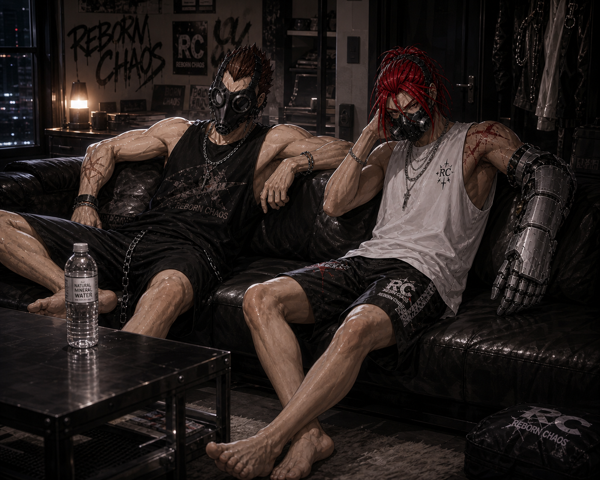
夜裡，沙發上，回憶。
從廢棄工廠，到這裡——
走了很遠，很值得。
機甲手，簽過名，托過水，舉起來過——
每一件，都是它自己沒有想過的事。
這樣，值得。
今天，很好。
就是這樣，很好。
最後一章 —— 回到那個地方
某一天，沒有行程。
準혁說，「我想去一個地方。」
세준，「哪裡？」
準혁，「廢棄工廠。」
세준，「……為什麼？」
準혁，「想回去看看。」
세준沉默了一下，「嗯，去。」
城市邊緣，廢棄工廠。
還是那個地方，破碎的天窗，光從上面切進來，濕的地板，碎石，鐵鏽的氣味——
沒有什麼變，這裡一直是這樣，時間好像沒有流過這裡。
兩個人走進去，腳步聲在空曠的空間裡迴響。
準혁走到中間，停下來，舉起狙擊步槍——
不是瞄準세준，是那個第一次見面時候的姿勢——槍舉著，對著空氣，就是那樣。
他站在那裡，讓身體記起那個感覺。
那時候，槍舉起來，是因為本能，是因為遊戲裡聽到聲音就開火——
現在，槍舉起來，是為了想起那一天，想起那個自己。
세준走到準혁對面，機甲頭盔戴上了——今天特地帶來的，很久沒有戴，但今天，想把它帶回來這裡看看——
他彎下腰，腳站開，機甲左手的姿勢，是那天衝過來的樣子——
不是要打，就是站成那個樣子，讓身體記起第一次的瞬間。
兩個人，對視。
廢棄工廠的光，從天窗打下來，和第一次一樣，但今天是晴天，光更清楚。
準혁看著對面那個人——
那時候，他看到的是一個威脅，一個不認識的存在，一個需要評估的目標。
現在，他看到的是세준，紅色長髮從機甲頭盔邊緣垂出來，機甲左手，白色的WHEN I COULD FLY TO A SPACESHIP T恤——
他把槍放下來。
세준把那個姿勢鬆開，站直了——
他想起那一天，看到準혁舉著槍，第一個反應是出拳——
現在他站在這裡，機甲左手垂著，看著準혁把槍放下來。
兩個人，對視。
這次，沒有打。
準혁，「你記得嗎，那天，你打了我一拳。」
세준，「嗯，你用槍格擋。」
準혁，「火花打在地板上。」
세준，「嗯，然後我們各自靠著牆坐著。」
準혁，「你說——你不是玩家。」
세준，「你說——你也不是。」
兩個人，站在工廠中間，和那天各自靠著牆不同——
今天，站在同一個地方。
準혁，「從那天到現在，走了很遠。」
세준，「嗯。」
準혁，「但那天，是起點。」
세준，「嗯，如果沒有那天，沒有現在。」
準혁，「嗯。」
他往四周看了一下——碎石，鐵鏽，破碎的天窗，光——
「這個地方，沒有變。」
세준，「我們變了。」
準혁，「嗯，我們變了。」
세준走到當時他靠著的那面牆，用手碰了一下——
牆是涼的，粗糙的，和那天一樣。
他想起那天坐下來，不知道接下來要怎樣，不知道對面那個人是誰，不知道這個城市是什麼——
現在，他知道了很多，但也還有很多不知道。
只是，不知道的感覺，不一樣了。
那時候的不知道，是恐慌。
現在的不知道，是——還有很多可以走。
準혁走到他當時靠著的那面牆，也用手碰了一下——
然後，他做了一件那天沒有做的事——
他把狙擊步槍放到地板上，靠著牆，站著，兩手空著。
他看著空著的兩隻手——
手臂上的刺青，那個X形的標記——
那天，這隻手一直握著槍，從來沒有放開。
現在，放了。
세준看著準혁把槍放下，沉默了一會——
他把機甲頭盔慢慢取下來，拿在右手上，看著它——
這個頭盔，今天帶回來，是想在這個地方，把它取下來一次。
在第一次見面的地方，取下來。
不是告別，就是，在這裡，用現在的自己，站著。
兩個人，各自站在工廠裡，沒有說話。
光從天窗打下來，切在地板上，切在準혁的刺青上，切在세준的機甲左手上——
那些光，和那天一樣，但照著不一樣的兩個人。
準혁，「你把頭盔取下來了。」
세준，「嗯，在這裡。」
準혁，「為什麼在這裡？」
세준，「因為，在第一次的地方，用現在的樣子，站著——這樣，有一種東西說清楚了。」
準혁，「什麼東西？」
세준，「那時候的我，和現在的我，是同一個人——但走了很遠的路。」
準혁，「嗯。」
세준，「你把槍放下了。」
準혁，「嗯。」
세준，「為什麼？」
準혁，「那天，這隻手一直握著，從來沒有放開。今天，想放一下，在這裡。」
세준，「放下了，感覺怎樣？」
準혁看著空著的兩隻手，「……輕一點。」
세준，「嗯。」
準혁，「槍還是我的，刺青還在，但今天，可以放一下。」
세준，「嗯，可以放一下，然後繼續帶著走。」
工廠裡，光還在，碎石還在，鐵鏽的氣味還在——
兩個人，站在第一次見面的地方，沒有打架，沒有戒備，就是站著——
各自的武器，各自的記憶，各自的名字——
在這裡，在同一個工廠，同一個光，不一樣的狀態。
很久之後，準혁把狙擊步槍拿起來，背回肩上。
세준把機甲頭盔拿在機甲左手上，往外走——
不戴回去，就拿著，帶出去。
走出工廠，外面是城市，陽光，樹，車聲——
跟那天完全不一樣，那天是夜裡，這裡是暗的，什麼都不確定。
今天是白天，外面是城市，明亮的。
準혁，「走了。」
세준，「嗯。」
兩個人走進陽光裡。
廢棄工廠在身後，那個地方，還在那裡，沒有跟著他們走，但他們帶著那個地方——
帶著那個第一天，帶著那個對視，帶著那個打完之後各自靠牆坐下來的沉默——
帶著那些，走進陽光裡。
세준，「準혁。」
準혁，「嗯？」
세준，「下一個地方，是哪裡？」
準혁，「不知道，走著走著就知道了。」
세준，「嗯，태양說的。」
準혁，「嗯。」
두 사람은 걸었다——兩個人，走著。
陽光打在背上，城市在前面，路還很長——
但走著。
REBORN CHAOS，最後一章。
回到廢棄工廠——第一次的地方。
槍放下了，頭盔取下來了， 在那個地方，用現在的樣子，站著。
那時候的我，和現在的我，是同一個人—— 但走了很遠的路。
放下了，然後繼續帶著走。
下一個地方，是哪裡—— 走著走著就知道了。
REBORN CHAOS，故事未完。
但今天，可以先走到這裡。
陽光在背上，城市在前面。
繼續。